Published by:
The General Secretariat of the National Council for Sustainable Development/Ministry of Environment, the Kingdom of Cambodia
© 2020 the General Secretariat of the National Council for Sustainable Development/Ministry of Environment, the Kingdom of Cambodia. All rights reserved. No part of this publication may be reproduced or transmitted in any form or by any means without the permission of the copyright holder.
Contact Information:
The General Secretariat of the National Council for Sustainable Development/Ministry of
Environment Morodok Techo Building (Lot 503), Tonle Bassac, Chamkarmon, Phnom Penh, Cambodia https://ncsd.moe.gov.khThe International community reached a truly historic milestone with the Paris climate agreement in 2015. Together, we agreed to limit global warming to well below 2, preferably to 1.5 degrees Celsius, compared to pre-industrial levels, to significantly reduce the risks and impacts of climate change.
Cambodia has always been a strong supporter of multilateral action on climate change. As a country particularly vulnerable to the impacts of climate change, we understand the urgency of ambitious climate action and aim to lead by example, in line with our capacities and responsibilities under the United Nations Framework Convention on Climate Change (UNFCCC).
The updated Nationally Determined Contribution (NDC) for Cambodia presents our commitments and needs for the next decade, in order to realize our vision of a low carbon and resilient society. Developed through extensive consultations over a nine-month period, our NDC includes contributions from all concerned stakeholders in the country, including relevant ministries and agencies, civil society representatives, development partners, academia, and the private sector.
The updated NDC has been improved in several important ways. First, coverage has increased to include climate change mitigation targets in the agricultural and waste sectors, and also with more detailed actions in key sub-sectors, such as energy efficiency. It includes a stronger set of adaptation actions, which remain the top priority for Cambodia. Second, we have set an ambitious target in the Forestry and Land Use sector (FOLU) for halving the deforestation rate by 2030, in line with our REDD+ strategy. In other sectors, we have increased our level of ambition for Green House Gases (GHG) emissions reduction compared to our initial NDC in 2015. Third, the updated NDC pays particular attention to gender and vulnerable groups, in order to ensure that our adaptation and mitigation actions contribute to a more inclusive society. Finally, a significant effort has been made to develop a solid framework for measurement, reporting and verification (MRV), so that we are able generate credible evidence on progress made and on challenges encountered. This will help us to keep refining our policies so that we not only meet our NDC commitments, but also our climate change targets under the Sustainable Development Goals (SDGs).
I would like to take this opportunity to thank all our partners who have contributed to the development of this document, both at the sectoral and national levels. I would like to thank in particular the Cambodia Climate Change Alliance programme (funded by the European Union, Sweden, and UNDP), the World Bank, the NDC Partnership, and other Development Partners for their support and cooperation for this process.
As Cambodia is committed to doing her part to address the global challenge of climate change, we look forward to working with all our partners to address our remaining needs in financing, capacity development, and technology transfers. This cooperation and support will be crucial to achieve the ambitious vision set out in this document.
Say Samal
Minister of Environment
Chair of the National Council for Sustainable Development
| ADB | Asian Development Bank |
| AI | Artificial Intelligence |
| BAU | Business as Usual |
| BUR | Biennial Update Report |
| CAMDI | Cambodia Disaster Loss and Damage Information System |
| CCAP | Climate Change Action Plan |
| CCCA | Cambodia Climate Change Alliance |
| CLUP | Commune Land Use Plan |
| CCCSP | Cambodia Climate Change Strategic Plan |
| CCTWG | Climate Change Technical Working Group |
| CDM | Clean Development Mechanism |
| CEDAW | Convention on Ending all Forms of Discrimination |
| Against Women | |
| CNCW | Cambodia National Council for Women |
| CO2 | Carbon Dioxide |
| COP | Conference of the Parties |
| CSDG | Cambodia’s Sustainable Development Goals |
| DCC | Department of Climate Change |
| DLUP | District Land Use Plan |
| DRM | Disaster Risk Management |
| EMIS | Education Management Information System |
| EMS | Environmental Management System |
| ESS | Environmental and Social Safeguards |
| ETF | Enhanced Transparency Framework |
| EWS | Early Warning Systems |
| EX-ACT Tool | EX-Ante Carbon Balance Tool |
| FAO | Food and Agriculture Organisation |
| FOLU | Forestry and other Land Use |
| GSSD | General Secretariat of the National Council for Sustainable Development |
| GDP | Gross Domestic Product |
| GGGI | Global Green Growth Institute |
| GHG | Greenhouse Gases |
| IPCC | International Panel on Climate Change |
| JCM | Joint Crediting Mechanism |
| LGCC3 | Local Government and Climate Change III |
| M&E | Monitoring and Evaluation |
| MAFF | Ministry of Agriculture, Forestry and Fisheries |
| M&E | Monitoring and Evaluation |
| MEF | Ministry of Economy and Finance |
| MIS | Management Information System |
| MISTI | Ministry of Industry, Science, Technology and Innovation |
| MME | Ministry of Mines and Energy |
| MLMUPC | Ministry of Land Management Urban Planning and Construction |
| MoE | Ministry of Environment |
| MoEYS | Ministry of Education Youth and Sports |
| MoH | Ministry of Health |
| MoINF | Ministry of Information |
| MoP | Ministry of Planning |
| MoWA | Ministry of Women’s Affairs |
| MoWRAM | Ministry of Water Resources and Meteorology |
| MoT | Ministry of Tourism |
| MPWT | Ministry of Public Works and Transport |
| MRD | Ministry of Rural Development |
| MRV | Measurement Reporting and Verification |
| NAMA | Nationally Appropriate Mitigation Action |
| NAP | National Adaptation Plan |
| NAPA | National Adaptation Plan of Actions |
| NCDD | National Committee for Sub-National Democratic Development |
| NCDM | National Committee for Disaster Management |
| NCSD | National Council for Sustainable Development |
| NDC | Nationally Determined Contribution |
| NGO | Non-Governmental Organisation |
| NSDP | National Strategic Development Plan |
| NSPGG | National Strategic Plan on Green Growth |
| ODA | Official Development Assistance |
| PPP | Public Private Partnerships |
| REDD | Reducing Emissions from Deforestation and Forest Degradation |
| RGC | Royal Government of Cambodia |
| RE | Renewable Energy |
| SDG | Sustainable Development Goals |
| SHS | Solar Home Systems |
| SMEs | Small and Medium Sized Enterprises |
| SNC | Second National Communication |
| TNA | Technology Needs Assessment |
| TNC | Third National Communication |
| UMIC | Upper Middle-Income Country |
| UNDP | United Nations Development Programme |
| UNFCCC | United Nations Framework Convention on Climate Change |
| UNICEF | United Nations Children’s Fund |
| VDC | Village Development Committee |
| VER | Verified Emissions Reduction |
| WASH | Water Sanitation and Hygiene |
| WHO | World Health Organisation |
The International community reached a truly historic milestone with the Paris climate agreement in 2015. Together, we agreed to limit global warming to well below 2, preferably to 1.5 degrees Celsius, compared to pre-industrial levels, to significantly reduce the risks and impacts of climate change.
The Royal Government of Cambodia (RGC) is committed to combating climate change and accelerating the transition to a climate-resilient, low-carbon sustainable mode of development. The RGC has supported global efforts against climate change by being a Party to the United Nations Framework Convention on Climate Change (UNFCCC) since 1996. Cambodia adopted and ratified the Paris Agreement by which the country submitted an ambitious Intended Nationally Determined Contribution (NDC), which showcased her progress in climate policy, and put forward mitigation targets and adaptation actions consistent with her national circumstances. The country is now proud to submit an updated NDC, which strengthens her aspirations towards a cleaner and greener economy and fulfils her obligations to better the lives of her citizens, in particular the vulnerable.
The focus of Cambodia’s development is on reducing poverty and ensuring stable economic growth, with the aim of achieving upper-middle income status by 2030, as enshrined in the National Strategic Development Plan (NSDP). Cambodia is highly vulnerable to the effects of climate change, and adaptation features prominently in the NDC. At the same time, Cambodia’s total greenhouse gas (GHG) emissions are increasing as the country develops. The country has already made remarkable progress in terms of climate change policy, particularly in mainstreaming climate change into national and sub-national planning. The RGC has developed and continues to implement the Cambodia Climate Change Strategic Plan 2014 – 2023 (CCCSP) (2013) and each relevant ministry has developed associated action plans (CCAPs). Cambodia’s first Biennial Update Report (BUR) was submitted in August 2020, and the Third National Communication (TNC) work is underway. The National Monitoring and Evaluation (M&E) Framework for the response to Climate Change has also been developed and regular climate public expenditure reviews have been undertaken.
Cambodia has also improved the tracking of climate finance in her Official Development Assistance (ODA) database, among many other initiatives.This section contains an illustration of Cambodia’s Business as Usual (BAU), the proposed mitigation targets and measures to support the achievement of them.
In the BAU scenario, overall GHG emissions in 2030 without the FOLU are expected to rise by up to 79 million tCO2e/year, while overall GHG emissions with the FOLU are expected to increase to 155 million tCO2e/year.
Sectoral share and absolute number of BAU GHG emissions in 2030| Sector | Sectoral share (%) | GHG Emissions (MtCO2e) |
|---|---|---|
| FOLU | 49.2 | 76.3 |
| Energy | 22.2 | 34.4 |
| Agriculture | 17.5 | 27.1 |
| Industry (IPPU) | 9.0 | 13.9 |
| Waste | 2.1 | 3.3 |
The FOLU sector will generate the highest overall BAU emissions in 2030, with 49.2% of the forecasted BAU emissions in 2030. This would be followed by the energy sector with 22.2%, the agricultural sector with 17.5%, and Industry (IPPU) with 9.0%.
Using the information provided by relevant ministries on the mitigation measures, activities and assumptions, NDC scenarios for energy generation, transport, waste, industry, agriculture, and the building sectors were modelled using PROSPECT+, while NDC scenarios for the FOLU sector were developed using the EX-ACT tool.
The estimated emission reductions of the NDC scenario are shown below.
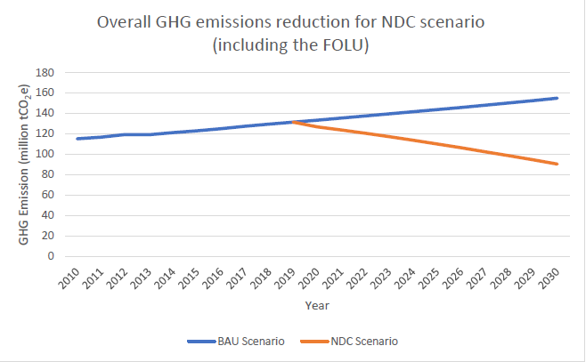Overall GHG emissions reduction (including the FOLU)
The estimated emissions reduction with the FOLU by 2030 under the NDC scenario will be approximately 64.6 million tCO2e/year (41.7% reduction of which 59.1% is from the FOLU).
Summary over BAU emissions and NDC emissions reduction
| Sector | BAU 2016 emissions (MtCO2e) | BAU 2030 emissions (MtCO2e) | NDC 2030 Scenario (MtCO2e) | NDC 2030 reduction (MtCO2e) | NDC 2030 emission reduction % |
|---|---|---|---|---|---|
| FOLU | 76.3 | 76.3 | 38.2 | -38.1 | -50% |
| Energy | 15.1 | 34.4 | 20.7 | -13.7 | -40% |
| Agriculture | 21.2 | 27.1 | 20.9 | -6.2 | -23% |
| Industry (IPPU) | 9.9 | 13.9 | 8.0 | -5.9 | -42% |
| Waste | 2.7 | 3.3 | 2.7 | -0.6 | -18% |
| Total | 125.2 | 155.0 | 90.5 | -64.5 | -42% |
Mitigation actions were identified from information provided by the relevant ministries (MAFF, MISTI, MLMUPC, MME, MoE, MOEYs, MoT, MPWT, and NCDD) across seven mitigation sectors: energy, waste, industry, transport, agriculture, building, and the FOLU.
Adaptation features strongly in Cambodia’s initial NDC and is equally important in this updated NDC due to the country’s continued high vulnerability to climate change.
Based on several international climate change indices, Cambodia is considered one of the most vulnerable countries to the impacts of climate change. The country is particularly vulnerable to floods, droughts, windstorms, and seawater intrusion. Climate change may reduce the country’s annual average GDP growth by 6.6% and absolute GDP by 0.4% in 2020, by 2.5% in 2030, and up to 9.8% in 2050. This may delay reaching upper middle-income status by one year. Accordingly, Cambodia has begun working to develop a National Adaptation Plan (NAP) based on the National Adaptation Programme of Actions (NAPA).
Cambodia’s vulnerability is characterised by frequent floods and irregular rainfall, coupled with an agrarian based economy, limited human and financial resources, insufficient physical infrastructure, and limited access to technologies. Socio-economic status, location, access to resources and technologies all influence Cambodian’s ability to manage climate impacts. Different social groups experience climate vulnerability differently, and women, children, the disabled, the elderly and other socially marginalised groups are often hit harder.
For the development of the SNC, climate change impacts and vulnerability were assessed for the most vulnerable sectors including agriculture and water resources, forestry, coastal zones, and human health.
As with mitigation, all Line Ministries with adaptation relevance submitted their proposed priority actions (86 in total). The focus sectors, in line with the vulnerability of the country, are:
In addition, a number of Ministries play an enabling role to facilitate the implementation of actions within the NDC. Such actions can be divided into:
The initial NDC was developed quickly which made conducting far-reaching consultations challenging. As such, some crucial areas of climate change policy and implementation were not adequately analysed, namely Gender; Youth involvement; and engagement with the Private sector.
Regarding Gender, all sectors, especially waste and energy, are key to mitigation. For adaptation, agriculture, forestry, and fisheries sectors are particularly important, and all ministries provided targets for women’s participation. Gender-balanced training and awareness material and the promotion of ‘women champions’ are key. Most Ministries included gender disaggregated targets of each action across these areas.
Regarding youth involvement, in mitigation there is a focus on energy, industry and transport. In adaptation, youth are especially involved in energy, industry, and transport. Also, beyond direct engagement in these sectors, children and youth play a critical role in the development, implementation, monitoring, and enforcement of climate actions across sectors.
With regard to private sector engagement, Public-Private Partnerships (PPPs) are key to the industry, waste, and energy sectors. While the private sector is less prevalent than in mitigation sectors, there are strong opportunities, especially for smallholder farmers and foresters. In general, the private sector can provide inputs, knowledge, and finance.
It is also important to highlight an additional area related to Indigenous People. The Cambodian Constitution recognises that all Khmer citizens (including all indigenous people under the National Policy on the Development of Indigenous Peoples) are equal before the law regardless of race, colour, national origin, etc. During the NDC implementation and particularly for mitigation measures in the FOLU, the RGC will seek to promote the rights of indigenous people, specifically concerning land ownership.
The Department of Climate Change (DCC) of the General Secretariat of the National Council for Sustainable Development (GSSD) led a preliminary assessment of the NDC implementation and the identification of gaps, as well as the development of the corresponding NDC Roadmap and Stakeholder Engagement Plan. This ensured that the country was able to review her NDC targets by the COP 26 meeting and is expected to achieve her stated contributions by 2030.
Summary of NDC implementation timeline and targets
| by 2020 | by 2025 | by 2030 | |
|---|---|---|---|
| Governance | Governance systems set up | NDC and climate change governance systems increasingly mainstreamed | NDC and other planning systems perfectly mainstreamed and used to report on NDC and SDGs |
| Mitigation | Implementation of mitigation actions | Increased ambition, economy-wide mitigation targets and implementation | Real-time economy-wide mitigation targets and implementation |
| Adaptation | NAP process ongoing and adaptation actions in NDC implemented | NDC linked to NAP process | NDC linked to NAP process and resilience improved |
| Finance | Finance systems set up and concessional financing terms | Climate investment plan operational and increased sophistication of finance system | Middle-income level of financial sophistication achieved |
| MRV/Transparency | Limited measurement of progress and development of transparency system operational | Transparency system partially operational | Transparency system upgraded and fully operational |
The NDC update process was initiated with the relevant line ministries in March 2020 and included contributions from a number of development partner experts. A private sector event included the participation of stakeholders from a range of different sectors, and local communities and indigenous peoples were engaged in the process. Every effort was made to conduct consultations in a gender responsive way.
Cambodia’s NDC places strong focus on the CCCSP 2014-23 (2013) and the related Sectoral Action Plans for its implementation. The following guidelines are also crucial: Cambodia’s Sustainable Development Goals (CSDGs) 2016-30 (2018); The National Strategic Plan on Green Growth (NSPGG) 2013-2030 (2013); The Rectangular Strategy IV (2018); The National Strategic Development Plan (NSDP) 2019-2023 (that is currently under development); The Circular Economy Strategy and Action Plan (also under development) sectoral policies; and the related strategies detailed in the Annex.
An illustration of the roles and responsibilities of each stakeholder with regard to the NDC implementation is below.
Stakeholder roles and responsibilities
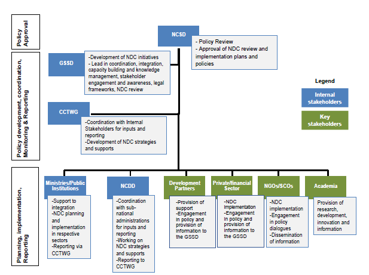
Despite ongoing efforts, financial demands remain high. Future resource mobilisation will look towards a reasonable mix of national and international funds, in addition to market mechanisms, where appropriate, and in line with progress on Article 6 of the Paris Agreement. The total funding required for all mitigation actions is over US $ 5.8 billion. The FOLU, waste, and energy sector actions require the highest funding. Total funding required for all adaptation actions is just over US $ 2 billion. Infrastructure, water, and agriculture require the highest funding.
The NDC review identified the need for capacity building for the NDC implementation, especially for the NCSD/DCC, CCTWG, and sectoral (and sub-national) TWGs. In addition, each ministry submitted its own capacity building needs, which will require a strong international support.
Cambodia has developed a technology needs assessment for adaptation and mitigation, and technology needs also feature prominently in the sectoral climate change action plans. However, these are largely outdated so each ministry provided an action by action indication of technology needs and availability.
The RGC’s approach to developing and operationalising its domestic measurement, reporting and verification (MRV) systems focuses on integration into the existing climate change M&E framework structure of the CCCSP rather than setting up new layers of institutional structures.
Cambodia is putting significant emphasis on the development of an integrated and detailed MRV system that is also aimed at achieving implementation of the NDC. It will be made up of the following components (mitigation, adaptation, GHG inventory, support received, and the support needed).
Components of MRV for NDC tracking
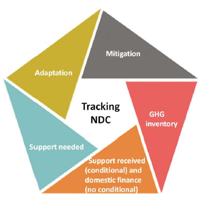
The system will detail how monitoring will occur and how data will be managed, aggregated, and translated into reports, with a particular focus on gender and vulnerable groups. A simple, accessible online NDC tracking system will be developed and the tool will be made accessible through the website.
Information to facilitate clarity, transparency and understanding The NDC contains a summary in table format of such information.
Despite being a least developed country with an eighth of the per capita emissions when compared to the global average, with this NDC Cambodia is proposing an ambitious set of sectoral reduction targets and structured and comprehensive adaptation actions.
Climate change mitigation and adaptation will be crucial not only to achieve SDG 13 on Climate Action, but a range of other SDGs and the Paris Agreement, given the cross-cutting nature of climate change. SDG 13 has significant implications on the achievement of other key priorities of each country, such as poverty reduction, food security, gender equality, water and sanitation, energy access, reduced inequalities, sustainable cities, and sustainable land use and ecosystems1. As part of the Cambodia NDC revision process, an analysis on how the NDCs can impact the achievement of the Sustainable Development Goals (SDGs) was carried out. Each mitigation measure and adaptation action has been screened against the attainment of the SDGs.
The Royal Government of Cambodia (RGC) is committed to combating climate change and accelerating the transition to a climate-resilient, low-carbon sustainable mode of development. The RGC has supported global efforts against climate change by being a Party to the United Nations Framework Convention on Climate Change (UNFCCC) since 1996.
Cambodia adopted and ratified the Paris Agreement by which the country submitted an ambitious Intended Nationally Determined Contribution (NDC) which showcased progress in climate policy and put forward mitigation targets and adaptation actions consistent with the national circumstances. The country is now proud to submit an updated NDC which strengthens her aspirations towards a cleaner and greener economy and fulfils her obligations to better the lives of her citizens, in particular the most vulnerable people.
Cambodia’s development focus is on poverty reduction and stable economic growth, to support the country’s efforts to become an upper middle-income nation by 2030. To meet this aim, the National Strategic Development Plan (NSDP) prioritises: (1) investment in rural areas; (2) decentralisation of national governance; and (3) further integration into the ASEAN region and the wider international community.
Cambodia is highly vulnerable to the effects of climate change, and adaptation features prominently in the NDC. The sectors most affected are agriculture, infrastructure, forestry, human health, and coastal zone areas are particularly vulnerable to sea level rises and intrusion. According to the Global Climate Risk Index, Cambodia was ranked as the 12th most climate risk-prone country globally, showing the high-level of vulnerability to extreme weather events. However, beyond extreme weather events, climate change also results in slow-onset events that can have significant negative implications for Cambodia and her citizens, particularly the most vulnerable people. Climate change acts as a threat multiplier and its impacts are particularly damaging given the limited adaptive capacity of Cambodia’s population due to socioeconomic conditions such as poverty, malnutrition, agricultural dependence, settlements in flood-prone areas, and public health2.
At the same time, Cambodia’s total annual net greenhouse gas (GHG) emissions rising due to development activities. Hence, there is a need to prioritise developing Cambodia’s economy and improving the socioeconomic wellbeing of its population, including the most vulnerable people, through low-carbon pathways.
Cambodia has already made remarkable progress in climate change policy, especially in mainstreaming climate change into national and sub-national planning. The Cambodian Government’s coordinated strategy to tackle climate change is focused on adaptation, with a gradual increase in mitigation actions aligned with economic development goals. Cambodia has developed and continues to implement the Cambodia Climate Change Strategic Plan 2014 – 2023 (CCCSP) (2015) and each relevant ministry has developed associated action plans (CCAPs).
The country submitted her Intended NDC to the UNFCCC ahead of the Conference of Parties (COP) 21 in Paris in 2015 and then ratified the NDC in 2016. Cambodia’s first Biennial Update Report (BUR) was also completed and submitted in August 2020 and the Third National Communication (TNC) work is underway. Further submissions of the NDCs will enable the Cambodian Government to progress in the fulfilment of the Paris Climate Agreement. The successful implementation of Cambodia’s NDC will, however, rely on adequately accessing and mobilising domestic and international climate finance.
Cambodia has also made strong progress in developing and implementing monitoring and evaluation (M&E) frameworks, including for finance. The country has produced regular climate public expenditure reviews and has improved tracking of climate finance in her Official Development Assistance (ODA) database. The National M&E Framework for Climate Change Response has also been developed and future adaptation and mitigation efforts are anticipated to be supported by international donors and multilateral funds, as well as national contributions.
This document contains Cambodia’s updated NDC, in alignment with the UNFCCC’s decisions. Cambodia’s INDC, submitted in 2015 and ratified in 2016, already contains mitigation targets and adaptation actions until 2030, so this document updates the initial submission.
Accordingly, the document is structured as follows:
This section contains an illustration of Cambodia’s Business as Usual (BAU), the proposed mitigation targets and measures to support the achievement of these targets.
BAU scenarios were developed covering energy generation, transport, waste, industry, agriculture, building, and the forestry and other land use (FOLU) sectors. The BAU scenarios for electricity, transport, buildings, cement, other industries (excluding cement), agriculture, and waste sectors were developed using the PROSPECT+ model. The FOLU sector was formed based on the model developed for the REDD+ NDC assessment by the REDD+ Technical Secretariat (RTS).
Overall GHG emissions (including the FOLU) were validated using GHG emission values in the latest Biennial Update Report (BUR, 2020), which consists of GHG emissions from 2010 - 2016 for most of the sectors (except the FOLU). As shown in Table 1, the UNFCCC sectors were generated by combining certain PROSPECTS+ sectors.
Table 1 PROSPECTS+ Sectors conversion into the UNFCCC sectors
| No | PROSPECTS+ Sector | UNFCCC sector |
|---|---|---|
| 1 | Electricity | Energy |
| 2 | Transport | |
| 3 | Buildings | |
| 4 | Other industry | Industry (IPPU) |
| 5 | Cement | |
| 6 | Waste | Waste |
| 7 | Agriculture | Agriculture3 |
| 8 | FOLU | FOLU3 |
For each sector, a BAU scenario was developed by extrapolating past emission trends, interpolating available data, and using relevant influential factors (GDP, population, and the forestry growth rate) to fill in missing data in a sequence.
Figure 1 Overall GHG emissions in BAU scenarios (including the FOLU)
According to Figure 1, overall GHG emissions in 2030 without the FOLU would rise by up to 79 million tCO2e/year, while overall GHG emissions with the FOLU are expected to increase to 155 million tCO2e/year.
Figure 2 illustrates the forecast emissions for mitigation sectors under the BAU Scenario (including the FOLU Scenario) until 2030. The lower line (in grey) shows the BAU emissions of the waste sector, which has the lowest BAU emissions among all sectors, while most upper line (in green) shows the cumulative BAU emissions of all sectors.

Figure 2 Projections of the BAU GHG emissions for all mitigation sectors
Figure 3 illustrates the forecast of emissions for each mitigation sector (excluding the FOLU) up to 2030.
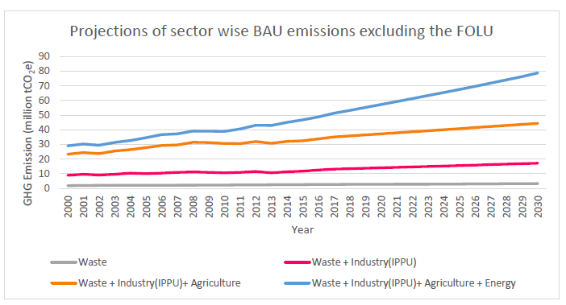
Figure 3 The BAU GHG emission projections for mitigation sectors (without the FOLU) According to Figure 2 and Figure 3, the BAU scenarios for all sectors are steadily increasing. The highest emissions contributor is the FOLU sector, followed by the agricultural sector. The share of emission contributions of the sectors in 2016 and 2030 are illustrated in Figure 4, Figure 5, Figure 6, and Figure 7 below.

Figure 4 Sectoral share of the BAU GHG emissions in 2030
Table 2 Sectoral share and absolute number of the BAU GHG emissions in 2030
| Sector | Sectoral share (%) | GHG Emissions (MtCO2e) |
|---|---|---|
| FOLU | 49.2 | 76.3 |
| Energy | 22.2 | 34.4 |
| Agriculture | 17.5 | 27.1 |
| Industry (IPPU) | 9.0 | 13.9 |
| Waste | 2.1 | 3.3 |
| Total | 100% | 154.9 |
| Sector | Sectoral share (%) | GHG Emissions (MtCO2e) |
|---|---|---|
| Energy | 43.7 | 34.4 |
| Agriculture | 34.5 | 27.1 |
| Industry (IPPU) | 17.7 | 13.9 |
| Waste | 4.1 | 3.3 |
| Total | 100% | 78.7 |
When considering the BAU emissions without the FOLU, the energy sector would contribute the highest overall BAU emissions in 2030. This would be followed by the agriculture sector with 34.5%, industry (IPPU) with 17.7%, and waste with 4.1%

Figure 6 Sectoral share of the BAU GHG emissions in 2016
Table 4 Sectoral share and absolute number of BAU GHG emissions in 2016
| Sector | Sectoral share (%) | GHG Emissions (MtCO2e) |
|---|---|---|
| FOLU | 61.0 | 76.3 |
| Agriculture | 16.9 | 21.2 |
| Energy | 12.0 | 15.1 |
| Industry (IPPU) | 7.9 | 9.9 |
| Waste | 2.1 | 2.7 |
| Total | 100% | 125.1 |
The FOLU sector would contribute the highest overall BAU emissions in 2016 also, contributing up to 61% of the forecasted BAU emissions. This would be followed by the agricultural sector with 16.9%, the energy sector with 12%, and industry (IPPU) with 7.9%.
The FOLU, agriculture, energy, and industry (IPPU) sectors were responsible for more than 95% of BAU emissions in 2016.

Figure 7 Sectoral share of the BAU GHG emissions in 2016
Table 5 Sectoral share and absolute number of BAU GHG emissions in 2016
| Sector | Sectoral share (%) | GHG Emissions (MtCO2e) |
|---|---|---|
| Agriculture | 43.4 | 21.2 |
| Energy | 30.8 | 15.1 |
| Industry (IPPU) | 20.3 | 9.9 |
| Waste | 5.5 | 2.7 |
| Total | 100% | 48.8 |
When considering the BAU emissions without the FOLU, the agricultural sector would contribute the highest overall BAU emissions in 2016. This would be followed by the energy sector with 30.8%, the industrial sector (IPPU) with 20.3%, and the waste sector with 5.5%.
Using the information provided by relevant ministries on the mitigation measures, activities, and assumptions, NDC scenarios for energy, transport, waste, industry, agriculture, and the building sectors were modelled using PROSPECT+, while the NDC scenarios for the FOLU sector were developed using the EX-ACT tool.
The majority of targets identified below are conditional on the international support. Cambodia also implements mitigation actions under the country’s sustainable development programme. The start and end year of each project were considered as 2020 and 2030, respectively.
Overall GHG emission reductions including the FOLU
The FOLU NDC Scenario: Reduce 50% of historical emissions by 2030 (REDD+ programme); This target is based on the REDD+ national strategy which was included due to recommendations from the REDD+ Technical Secretariat (RTS) and the Department of Climate Change. The main assumption of the calculation was to reduce the 50% historical emission from the forest sector (76.3 million tCO2e) by 2030 (38.1 million tCO2e) with an average annual reduction of 21 million tCO2e/year. (Further information on the NDC scenarios is provided in Appendix 6). The estimated emission reductions under the NDC scenario are shown in Figure 8 below.

Figure 8 Overall GHG emission reduction (including the FOLU)
As per Figure 8, the estimated emission reductions with the FOLU by 2030 under the NDC scenario will be approximately 64.6 million tCO2e/year (41.7% reduction, of which 59.1% is from the FOLU).
The NDC Scenario - contributions by different sectors
The share of distribution of the planned emission reductions under the NDC scenario among the sectors is indicated in Figure 9 below.

Figure 9 GHG emissions reduction under the NDC scenario in 2030
Table 6 Sectoral share and absolute number of GHG emission reduction under NDC scenario in 2030
| Sector | Sectoral share (%) | GHG emission reduction (MtCO2e) |
|---|---|---|
| FOLU | 59.1 | 38.1 |
| Energy | 21.3 | 13.7 |
| Agriculture | 9.6 | 6.2 |
| Industry (IPPU) | 9.1 | 5.9 |
| Waste | 0.9 | 0.6 |
| Total | 100% | 64.6 |
The emissions reduction of 64.6 million tCO2e/year is expected by 2030. This is a 41.7 % reduction compared with the BAU case.
The FOLU is expected to provide the major share of 59.1% emission reduction by 2030. Other sectors like energy (21.3%), agriculture (9.6%), industry (IPPU) (9.1%), and waste (0.9%) are also expected to contribute significantly.
This approach will have a better resilience to failure in mitigation activities. One disadvantage of the involvement of many sectors could be the need for more experts in many fields. However, this could be considered as an opportunity to develop or strengthen Cambodia’s capacity.
Mitigating emissions from the electricity sector will be directed mainly on the renewable energy power generation. There will be barriers imposed by the availability and the absorption capacity of the grid, which would have to be addressed for the achievement of targets.
Mitigating the transport sector emissions would require policy instruments and carbon pricing instruments to promote low emission transport modes. Social acceptance would depend on the chosen approaches, public awareness-raising activities, and the instruments used.
The other industrial sector will expand and play a major role during Cambodia’s development. Therefore, the energy efficiency and process development of existing as well as new industries will have to be improved in order to minimize the effect on emissions. As the cost of the RE is on the reducing trend use of the renewable energy will be a cost-effective mitigation strategy.
The Department of Climate Change (DCC) of the GSSD, supported by the Cambodia Climate Change Alliance (CCCA), has been coordinating stakeholder engagement and collecting submissions from line ministries on priorities for the NDC revision for both mitigation and adaptation activities. The template used to ensure comparability across mitigation actions is the following.
Table 7 Template for ministerial submissions for Mitigation Projects

Mitigation actions were identified from the NDC related information provided by the relevant ministries (MAFF, MISTI, MLMUPC, MME, MoE, MOEYs, MoT, MPWT, and NCDD). These projects were filtered and a list of mitigation projects was prepared. The mitigation projects are distributed among seven sectors: energy, waste, industry, transport, agriculture, building, and the FOLU. Table 8 shows the identified list.
| No |
Mitigation Projects/Activities |
Lead Ministry |
Sector |
|---|---|---|---|
| 1 |
Promote sustainable energy practices in manufacturing Garments: 2.291 MtCO2e, 55% by 2030 Bricks: 1.799 MtCO2e, 44% by 2030 Food and Beverage: 1.043 MtCO2e, 25% by 2030 |
MISTI |
Other Industries |
| 2 | Urban Planning Tools for Climate Change Mitigation and the urban planning solution in three sub cities |
MLMUPC |
Building residential |
|
Building commercial |
|||
| 3 |
Application of electrical equipment’s labelling & MEPS (Lighting, Cooling & Equipment) Reduce 1.2 TWh (29.7%) of electricity use in 2030 |
MME |
Building residential |
|
Building commercial |
|||
| 4 |
Improvement of process performance of EE by establishment of energy management in buildings/industries Voluntary scheme for other companies, especially for SMEs to reduce 10% in 2030 |
MME |
Other Industries |
|
Building residential |
|||
|
Building commercial |
|||
| 5 |
Public awareness campaigns, DTEBP-EE info centres Reduce 2% of energy consumption in 2030 |
MME |
Building residential |
|
Building commercial |
|||
| 6 |
Building codes and enforcement/certification for new buildings and those undergoing major renovation Reduce 10% of electricity consumption in 2030 |
MME |
Building commercial |
| 7 |
Introduction of efficient electrical motors and boilers Reduce 2.3% of current electricity consumption in 2030 |
MME |
Building commercial |
|
Other Industries |
|||
| 8 |
Improve sustainability of charcoal production through enforcement of regulations |
MME |
Building residential |
| 9 |
Roadmap study on Integration of RE (Renewable Energy) resources. 25 % of the renewable energy in the energy mix (solar, wind, hydro, biomass) by 2030 |
MME |
Energy generation |
| 10 |
New sanitary landfills with LFG extraction and LFG extraction at the Dangkor Landfill Increase the share of waste disposed at sanitary landfills with LFG extraction from 0% in 2020 to 50% by 2030 and extract LFG from the Dangkor Landfill |
MoE |
Waste -MSW |
| 11 |
Composting of biodegradable organic fraction of MSW supplemented with separation of organic waste (at source). If 10% of all MSW generated is composted by 2030 then up to 0.5 MtCO2e/year of GHG emissions can be avoided by 2030 |
MoE |
Waste -MSW |
| 12 |
Production of Refuse-Derived Fuel (RDF) from either a) fresh MSW or b) old MSW mined from the Dangkor landfill. GHG ER from RDF + anaerobic digestion up to 0.2 MtCO2e/year |
MoE |
Cement sector |
|
Waste _MSW |
|||
| 13 |
Implementation of National 3R strategy |
MoE |
Waste -MSW |
| 14 |
Enhance maintenance and inspection of vehicle (Piloting maintenance and emission inspections of vehicles) 30 vehicle inspection centres in operation by 2030 |
MPWT |
Passenger transport |
| 15 |
Promote integrated public transport systems in main cities |
MPWT |
Passenger transport |
| 16 |
Reducing GHG emission though off grid street lightening of rural municipality 10 Sangkat of Senmonorom municipality, Kep municipality, and Preah municipality integration of climate change into financial management, institutional arrangement and policy reform by 2028. |
NCDD |
Building commercial |
|
Building residential |
|||
| 17 |
Bio-digesters construction (85% reduction compared to 2000) (Small size (2-3-4m3) |
MAFF |
Building residential |
|
Agriculture land related |
|||
| 18 |
Bio-digesters construction (85% reduction compared to 2000) Medium size(6-8-10m3) |
MAFF |
Energy generation |
|
Agriculture land related |
|||
| 19 |
Bio-digesters construction (85% reduction compared to 2000) Large size(>10m3) |
MAFF |
Energy generation |
|
Agriculture land related |
|||
|
Waste -MSW |
|||
| 20 |
Centralized recycling facility for industrial waste from the garment sector Reduce 0.11MtCO2e from 2021-2030at an average of 0.01 MtCO2e/year |
MISTI |
Waste -MSW |
| 21 |
Climate-friendly cooling of public sector buildings Reduce 0.04 MtCO2e /year |
NCSD |
Building commercial |
| 22 |
Toward Battambang city to green city 5 Sangkat of Battambang municipality integration of green city by 2025 |
NCDD |
Building commercial & Residential |
| 23 |
Shift long distance freight movement from trucks to train |
MPWT |
Freight Transport |
| 24 |
Emission management from factories Monitor air quality at 105 factories annually and provide permit letter for emission to the air to 90 factories. 90% of factories to be licensed. |
MoE |
Other Industry |
| 25 |
Increasing the effectiveness and sustainability of agricultural land management techniques (Conservation Agriculture) |
MAFF |
Agriculture landrelated |
| 26 |
Organic input agriculture and bio-slurry; and deep placement fertilizer technology 10 Provinces by 2030 |
MAFF |
Agriculture landrelated |
| 28 |
Promote manure management through compost making process to reduce carbon emission 25 provinces and cities by 2030 |
MAFF |
Agriculture landrelated |
| 29 |
Better management of industrial wastewater in the food & beverage sector 5-10% of total CH4 emissions |
MISTI |
Wastewater |
| 30 |
Implementation of National Cooling Action Plan Enhanced MEPS and F-gas transition for room air conditioners and residential refrigerators targeting the new & existing equipment stock in the country. |
MLMUCP |
Building commercial |
| 31 |
Inclusion of performance requirements of Passive Cooling Systems in Building Energy Code of Cambodia 20% of the newly constructed buildings will comply with Building Energy Code |
MLMUCP |
Building commercial |
| 32 |
Implementation of “passive cooling” measures in the cities (addressing urban heat island effect [UHIE]), public buildings and commercial buildings.
|
MLMUCP |
Building commercial |
Source: Ministries’ submissions
(Project level emissions were submitted by the line ministries listed under Appendix 5).
Table 8 The FOLU targets (detailed list of actions are listed in the Appendix 5)
| No | FOLU activities/target | Lead Ministry | Sector |
|---|---|---|---|
| 1 |
FOLU: Reduce 50% of historical emission by 2030 Activities:
|
REDD+ Technical Secretariat (RTS) |
FOLU |
Source: Ministerial submissions and REDD+ Technical Secretariat (RTS)
Adaptation features strongly in Cambodia’s initial NDC and is equally important in this updated NDC, due to the country’s continued high vulnerability to climate change.
According to several international climate change indices, Cambodia is one of the most vulnerable countries to the adverse impacts of climate change4. The Global Climate Risk Index (1999–2018)5 placed Cambodia at 12th place among the most vulnerable countries globally. The World Risk Index (2019)6, calculated as a product of exposure and vulnerability, categorised Cambodia as among the ‘very high’ impacted countries.
Rising temperatures are likely to lead to increased frequency and intensity of extreme weather events in a fragile socio-economic context. The country's climate vulnerability results in loss and damage to human life, livelihoods, and the national economy, as well as the degradation of her natural resources. The country is particularly vulnerable to floods, droughts, windstorms, and seawater intrusion. According to a series of vulnerability assessments carried out in 20167, 17.5% of Cambodia’s communes were ‘highly’ vulnerable (i.e. 288 communes) and 27.28% (449 communes) were ‘quite’ vulnerable to multiple climate change hazards.
Notably, recent research8 indicates that without climate change, the real GDP will grow at an average of 6.9% per year from 2017 to 2050, achieving Upper Middle-Income Country (UMIC) status in 2035. With climate change, the headline projections use the mid-climate change scenario and a mid-adaptation scenario that is equivalent to current levels of adaptation. Climate change reduces average GDP growth to 6.6% and absolute GDP by 0.4% in 2020, 2.5% in 2030, and 9.8% in 2050. As a result, the UMIC status may be delayed by one year. Accordingly, Cambodia has begun developing her National Adaptation Plan (NAP). The NAP process builds on work carried out as part of the National Adaptation Plan of Action (NAPA), the Second National Communication (SNC) and the CCSAP, among others. The NAP identifies climate change impacts, vulnerability, and adaptation actions for Cambodia.
Cambodia’s vulnerability is characterised by frequent flooding and irregular rainfall, coupled with an agrarian based economy, limited human and financial resources, insufficient physical infrastructure, and limited access to technologies. Socio-economic status, as well as location, access to resources and technology all influence Cambodia’s ability to manage the impact of climate change. Different social groups experience climate vulnerability differently and women, children, the disabled, the elderly and other socially marginalised groups often feel the impacts of climate change disproportionately.
For the development of the SNC9, climate change impacts and vulnerability were assessed for the most vulnerable sectors, namely agriculture and water resources, forestry, coastal zones, and human health.
In addition, the SNC highlighted gaps in information on the role of ecosystems and natural protection assets such as soils, forests, coral reefs, and sea grasses in preventing losses due to climate change, as well as helping to build adaptive capacity.
Cambodia’s adaptation contribution follows the planning and implementation cycle of the NAP process and integrates elements that are specific to the NDC.

Source: CDKN (2016)
Similarly, to mitigation, the template used to ensure comparability across adaptation actions is illustrated below.
Table 9 Template for ministerial submissions for Adaptation
| No. | Adaptation action | Government priority | Resilience building potential | Targets | Co-benefits (mitigation, environmental, social) | Finance | Technology availability | Gender | Final score | |
|---|---|---|---|---|---|---|---|---|---|---|
| Costs | Benefits | |||||||||
| 1. | Action | |||||||||
Scoring
Government priority:
1=not in line with a government priority;
2= no government policy in place;
3=in line with a government priority
Resilience potential: Vulnerable communities targeted etc.
Targets:
1= target is difficult to reach;
2= target is easy to reach
Co-benefits:
1= action does not have many co-benefits;
2= action has many co-benefits
Finance:
1= cost/benefits= negative;
2=cost/benefits=medium;
3= cost/benefits= positive
Technology:
1= not available;
2= available
Gender:
1= no impact on equality, no gender inclusion;
2= medium impact on equality, medium gender inclusion; 3= good possibility to build equality, gender inclusion.
All line ministries with adaptation relevance submitted their proposed priority actions, which are presented in Annex 2.
The following table summarises the proposed adaptation actions subdivided by sectors and the corresponding lead ministry.
The focus sectors, in line with the vulnerability of the country, are the followings (58):
Table 10 Priority adaptation actions
|
Adaptation action |
Sector / Sub sector |
Ministry |
|
|---|---|---|---|
| 1 |
Towards an Agroecological transition in the uplands of Battambang |
Agriculture |
NCDD |
| 2 |
Development of Rice crops for increase production, improved quality-safety; harvesting and post harvesting technique and agro-business enhancement |
Agriculture |
MAFF |
| 3 |
Development of Horticulture and other food crops for increase production, improved quality-safety; harvesting and post harvesting technique and agro-business enhancement |
Agriculture |
MAFF |
| 4 |
Development of Industry crops for increase in production, improved quality-safety; harvesting and post harvesting technique and agro-business enhancement |
Agriculture |
MAFF |
| 5 |
Improvement of support services and capacity building to crop production resilient to climate change by promoting research, trials and up-scaling climate-smart farming systems that increase resilience to CC and extreme weather events |
Agriculture |
MAFF |
| 6 |
Building climate change resilience on cassava production and processing |
Agriculture |
MAFF |
| 7 |
Research for the development and enhancement of agricultural productivity, quality, and transfer through strengthening of crop variety conservation and new crop variety release responding to the impacts of climate change |
Agriculture |
MAFF |
| 8 |
Development of new technologies and increased yields by using new crop varieties which adapt to climate change |
Agriculture |
MAFF |
| 9 |
Development of rubber clone varieties suitable for AEZ and resilient to climate change |
Agriculture |
MAFF |
| 10 |
Enhancing institutional and capacity development on climate change impact, vulnerability assessment, adaption measures and mitigation related to rubber sector |
Agriculture |
MAFF |
| 11 |
Improvement of animal breeding technology in Cambodia through AI which can adapt to climate change |
Agriculture |
MAFF |
| 12 |
Promotion of research capacities on animal genetic, animal breeding, and animal feed is strengthened to adapt to climate change |
Agriculture |
MAFF |
| 13 |
Strengthening capacities for risk prevention and reduction, effective emergency preparedness and response at all levels; enhancing livestock and disease-related early warning system, and integrating disaster risk reduction and climate change adaptation measures into recovery and rehabilitation initiatives in the livestock sector |
Agriculture |
MAFF |
| 14 |
Promoting aquaculture production systems and practices that are more adaptive to climate change |
Agriculture |
MAFF |
| 15 |
Promoting climate resilience in the capture fisheries sector |
Agriculture |
MAFF |
| 16 |
Scaled up climate‐resilient agricultural production through increased access to solar irrigation systems and other climateresilient practices |
Agriculture |
NCDD |
| 17 |
Developing a training manual and providing training on approaches for development of climate-smart and sustainable livelihood to rural poor people |
Agriculture |
MRD |
| 18 |
Protection, risk mitigation, and resilience building from marine pollution particularly caused by activities on land including marine pollution from waste and aquaculture activities. |
Coastal zones |
MOE |
| 19 |
Effective management and protection of ecological systems of marine and costal zones to avoid adverse impacts from various factors, build their resilience and restore its functions for productive and healthy oceans |
Coastal zones |
MOE |
| 20 |
Conduct climate risk analysis for the existing electricity infrastructures and provide recommendations |
Energy |
MME |
| 21 |
Climate proofing existing and future solar/hydropower infrastructure |
Energy |
MME |
|
22 |
Enable effective decision-making for health interventions through generation of information and improved surveillance or early-warning systems |
Human health |
MOH |
|
23 |
Enhance climate resilience in health service delivery |
Human health |
MOH |
|
24 |
Strengthen and provide capacity building of technical guidelines for diagnosis, detection, control, prevention and treatment of vector-borne and water-borne diseases, injuries and other food poisoning illnesses arising from climate change |
Human health |
MOH |
|
25 |
Conduct water sanitation and hygiene (WASH) assessments on climate change and develop planning for communities and health facilities. |
Human health |
MOH |
|
26 |
Strengthen institutional capacities to effectively integrate climate risks and adaptation options in health sector planning and implementation |
Human health |
MOH |
|
27 |
Heat stress adaptation for industrial production |
Industry |
MISTI |
|
28 |
Integrating climate change response measures onto the construction design for buildings and for rural housing (use of modern integration of technology) |
Infrastructure - Buildings |
MLMUPC |
|
29 |
Develop resilient infrastructure of school buildings in response to climate change |
Infrastructure - Buildings |
MOEYS |
|
30 |
Implement climate change and disaster resilient construction and infrastructure standards including for public sector and community-focused buildings covering public health, education, WASH etc. |
Infrastructure - Buildings |
NCDM |
|
31 |
Prepare spatial planning (city/district/municipality) guidelines at all levels for climate change adaptation Integrating climate change response measures to the commune land use planning |
Infrastructure - Land use planning |
MLMUPC |
|
32 |
Integrating climate change response measures to the policy of social land concession (SLC) and its procedures |
Infrastructure - Land use planning |
MLMUPC |
|
33 |
Prepare modality of standardized green spaces for urban planning or new sub-cities to address vulnerability of urbanization. |
Infrastructure - Land use planning |
MLMUPC |
|
34 |
Vulnerability assessment towards the development of climate change strategic plans to respond to the impacts on land, housings, coastal management and building due to climate change |
Infrastructure - Land use planning |
MLMUPC |
|
35 |
Promote Land Use Planning Tools for urban houses and building construction adaptive to climate change benefits to the low-income and homeless people |
Infrastructure - Land use planning |
MLMUPC |
|
36 |
Promote proper low-cost shelters for low-income households resilient to climate change, practically in the area of social land concession |
Infrastructure - Land use planning |
MLMUPC |
|
37 |
Development of building code with mainstreaming climate change into building designs |
Infrastructure - Land use planning |
MLMUPC |
|
38 |
Mainstream climate change response measures into coastal development planning against sea water intrusion, sea water rise and seasonal storm destruction, and rising temperature |
Infrastructure - Land use planning |
MLMUPC |
| 39 |
Strengthening Climate Resilient Cities |
Infrastructure - Land use planning |
NCDD |
| 40 |
Develop national road construction and maintenance design standards for national and provincial roads, considering climate change impacts, including developing an M&E framework for climate proofing and low-carbon technology roads |
Infrastructure - Roads |
MPWT |
| 41 |
Repair and rehabilitate existing road infrastructure and ensure effective operation and maintenance systems, considering climate change impact |
Infrastructure - Roads |
MPWT |
| 42 |
Rural road rehabilitation and improvement for climate change resilience |
Infrastructure - Roads |
MRD |
| 43 |
Develop and annually update national and subnational multihazard and climate risk assessments, including the identification of the most vulnerable communities |
Livelihoods, poverty and biodiversity |
NCDM |
| 44 |
National end-to-end early warning systems with focus on effective dissemination to populations at risk |
Livelihoods, poverty and biodiversity |
NCDM |
| 45 |
Implement community–based disaster and climate risk management programs |
Livelihoods, poverty and biodiversity |
NCDM |
| 46 |
Building resilience of biodiversity conservation and restoration to adapt to climate change |
Livelihoods, poverty and biodiversity |
MOE |
| 47 |
Integrated village development |
Livelihoods, poverty and biodiversity |
MRD |
| 48 |
Strengthen flood resiliency capacity of communities around lake Tonle Sap (access to clean water, off grid renewable energy and waste management) |
Livelihoods, poverty and biodiversity |
NCDD |
| 49 |
Building climate resilient livelihood and public infrastructures in social land concession for vulnerable communities |
Livelihoods, poverty and biodiversity |
NCDD |
| 50 |
Provide capacity building and supports for climate change innovation at the provincial along Tonle Sap River |
Tourism |
MOT |
| 51 |
Raising public awareness on climate change innovation at all levels |
Tourism |
MOT |
| 52 |
Practicing smart agriculture in tourism sector |
Tourism |
MOT |
| 53 |
Establish an automated nation-wide hydromet monitoring network and data transmission program, including the collection of climate and hydrological data |
Water resources |
MOWRAM |
| 54 |
Establish a centralized and standardized approach to climateresilient water management |
Water resources |
MOWRAM |
| 55 |
Establish a national climate and flood warning system, including a service centre and flood emergency response plans |
Water resources |
MOWRAM |
| 56 |
Integrated groundwater management in Cambodia |
Water resources |
NCDD |
| 57 |
Establish nationally standardized best-practice systems for irrigation |
Water resources |
MOWRAM |
| 58 |
Resilient and Adaptive rural water supply and sanitation construction |
Water resources |
MRD |
Source: Ministries’ submission
Enabling actions
In addition, a number of Ministries also play an enabling role to facilitate the implementation of actions within the NDC. Such actions can be divided into the followings (29):
Table 11 Enabling actions
| No. | Action | Crosscutting | Lead Ministry |
|---|---|---|---|
| 1 | Upgrading curriculum and training methodologies, including libraries, to include climate change subjects in primary schools | Education | MOEYS |
| 2 | Upgrading curricula to include climate change for non-formal education | Education | MOEYS |
| 3 | Build centres of excellence for delivering climate change courses and research among Universities | Education | MOEYS |
| 4 | Conduct training for education officials on climate change e.g. as a required component of teacher training | Education | MOEYS |
| 5 | Strengthen institutional capacities at national and sub-national levels to integrate gender responsiveness in climate change adaptation policies, plans, programming, including gender sensitive budgeting | Gender | MOWA |
| 6 | Enhance coordination and implementing accountability mechanisms to reduce climate change vulnerabilities of disadvantaged women and other marginalized groups such as ethnic minority women and men, People with Disabilities (PWD), youth, and the elderly | Gender | MOWA |
| 7 | Enhance monitoring and evaluation systems of sectoral ministries to track gender outcomes in climate change initiatives with a particular focus on collecting and managing sex-disaggregated data, gender indicators and budgeting, outcome-based reporting and the dissemination and up-scaling of the gender and climate change adaptation related knowledge generated. | Gender | MOWA |
| 8 | Capacity Development for GCCC members and sectoral ministries on Gender analysis, gender responsive budgeting and NDC | Gender | MOWA |
| 9 | Develop technical guidelines for Gender mainstreaming in NDC process | Gender | MOWA |
| 10 | Market supply chain of rural women entrepreneurs resilient to climate change | Gender | NCDD |
| 11 | Local government and Climate Change-III (LGCC3) | Governance | NCDD |
| 12 | Reducing vulnerability of local communities though sub-national climate governance reform (focusing on policy) | Governance | NCDD |
| 13 | Enhance the quality of broadcasting means and expand the capacity of coverage for raising awareness on climate change nationwide | Information | MOINF |
| 14 | Training and enhancing human capacity on climate change in the information sector | Information | MOINF |
| 15 | Urge private media organizations to participate in covering climate change related topics and to complement state broadcasting agencies. | Information | MOINF |
| 16 | Urge and encourage to reduce (or ban) all forms of commercial advertisement that has negative impact on the environment | Information | MOINF |
| 17 | News coverage and program production for awareness raising on climate change and its impacts | Knowledge sharing | MOINF |
| 18 | Building climate resilience for district and commune governance through policy and strategic development plan reform (Focus on implementation) | Policy and planning | NCDD |
| 19 | Mainstreaming climate change into Education Strategic Plan 20192023 Strategic Plan and SDG4 Roadmap for Education 2030 | Policy and planning | MOEYS |
| 20 | Strengthen the cooperation with local and International development agencies, NGOs and relevant institutions for technical and financial support to implement the adaptation planning in the media sector | Policy and planning | MOINF |
| 21 | Development of climate change national/capital/ provincial development plans including an M&E system with specific indicators | Policy and planning | MOP |
| 22 | Development of a climate change public investment program for the national/capital/ provincial levels | Policy and planning | MOP |
| 23 | Building adaptive and resilient capacity for MRD officers at national and sub-national level for mainstreaming climate change into rural development planning processes and technical design. | Policy and planning | MRD |
| 24 | Build adaptive capacity on climate change for Village leaders (Village Development Committees, VDCs) | Policy and planning | MRD |
| 25 | Strengthen resilience and adaptation capacity to climate change in the most vulnerable provinces/districts/communes (produce vulnerability index maps at the commune level, integrate climate change into investment and development plans, demonstrate the identified actions at pilot sites) | Policy and planning | NCSD |
| 26 | Update and implement the Cambodia Climate Change Strategic Plan (CCCSP) for 2024-2033 | Policy and planning | NCSD |
| 27 | Integrate climate change measures into national policies, strategies and sectoral strategies and plans | Policy and planning | NCSD |
| 28 | Enhance institutional capacity on climate change (mitigation, adaptation, policy, strategies, planning, and finance) through awareness raising, training, and advocacy. | Policy and planning | NCSD |
| 29 | Development of a long-term low emission strategy | Policy and planning | NCSD |
Source: Ministries’ submissions
The initial NDC was developed in a short period of time, which made far-reaching consultations challenging. As such, it was understood that some crucial areas of climate change policy and implementation were not adequately analysed, specifically 1) Gender; 2) Youth involvement; and 3) Private sector engagement. Most Ministries included the implications of each action across these areas. These are presented and summarised below. It is also important to highlight an additional area related to Indigenous People. The Cambodian Constitution recognises that all Khmer citizens (which include indigenous people under the National Policy on the Development of Indigenous Peoples) are equal before the law regardless of race, colour, national origin, etc. Indigenous people are also protected by the Land Law (2001), the Forest Law (2002), the Protected Areas Law (2008), and the National REDD+ Strategy, among others. During the NDC implementation and particularly for mitigation measures in the FOLU, the RGC will seek to promote the rights of indigenous peoples, specifically concerning land ownership. Respect for the traditional knowledge held by indigenous peoples is integral to an understanding of traditional livelihoods and of culture and is, therefore, an essential component of safeguarding these rights.
Climate change affects gender minorities disproportionately, including women and girls. The areas where women play a central role - food security, nutrition, energy, livelihoods, health, natural resource management, among others - are those most directly impacted by climate change. By exaggerating gender inequality, climate change also reinforces a structural root cause of violence against women and girls18.
In prioritising climate solutions, a gender-balanced approach should incorporate the intersectional needs of the population to ensure inclusivity. Addressing gender inequalities is, therefore, a priority for Cambodia and gender has been effectively mainstreamed across planning and budgeting, including in the context of addressing climate change.
Notably, the CCCSP includes a strategic objective to ‘reduce sectoral, regional, gender vulnerability and health risks to climate change impacts’. The Ministry mandated with planning and facilitating the implementation of gender issues is the Ministry of Women’s Affairs (MOWA). The MOWA has formed a Gender and Climate Change Committee, which gathers information on gender and climate change, conducts studies on the impact of climate change on women and children and builds climate change capacity in the ministry’s departments. The MOWA has also integrated climate change, green growth, and disaster risk management into Neary Rattanak IV, the National Policy on Gender Equality and Women’s Empowerment. In addition, as part of Cambodia’s periodic reporting to the Convention on Ending all Forms of Discrimination Against Women (CEDAW), the Cambodia National Council for Women (CNCW) responds specifically to the disproportionate impacts of climate change on rural women and acknowledges the policy and programme efforts underway in Cambodia to mitigate these impacts19.
As part of this NDC update, all Ministries acknowledged the importance of addressing gender issues, particularly women’s participation in climate action. Most priority actions have a specific target for women’s participation that ranges from 15% to 70%. Gender and age disaggregated data are crucially important in measuring the success of the gender targets, not only related to women’s participation but also women’s access to skills and technology, as well as women in climate-related decision making.
Mitigation priority actions, including energy, waste, and transport, all have linkages to gender equality and social inclusion and the potential to contribute to several gender-based indicators. In relation to energy priorities such as (1) access to energy in rural areas and (2) the diversification of household and community energy generation sources to reduce reliance on biomass as an energy source, women are often responsible for household energyrelated decisions in rural areas, and women, the poor and the marginalised are often last to gain energy access. Gender-responsive mitigation actions and indicators will help measure these changes and also contribute to measuring the success of SDG 5, Cambodia’s CEDAW commitments, and the CCCSP.
All mitigation sectors have encouraged the equal involvement of men and women in mitigation actions. However, the waste and energy sectors show a higher tendency of maintaining a gender balance and encouraging women’s participation. For example, women and children often constitute a large portion of informal waste pickers. Therefore, formalising the waste sector management and creating decent jobs could have a significant impact on ensuring stable livelihoods for women. Projects such as those in the composting market can benefit both men and women.
There is high potential to contribute to gender equality through increasing energy access in rural areas, by diversifying household and community energy generation sources. For example, by reducing the reliance on biomass as an energy source. Women are also often responsible for the majority of household energy-related decisions in rural areas. Gender equality can be encouraged in mitigation actions such as through eco-payments.
In the transport sector, women generally use public transport more than men. Ensuring safe, efficient and comfortable transport for women may increase their access to higher education centres, skills development centres and other resources in urban areas.
Women constitute a higher proportion of the working population in agriculture, and the forestry sector is seen as providing strong opportunities to improve gender balance. In the forestry sector, and particularly for REDD+, there is a need to recognise the diversity of stakeholders, particularly among forest communities. In addition to continuing the enhancement of ‘invited spaces’ for women’s groups, it will be important for gender outcomes to be adequately captured in the country’s REDD+ Safeguards Information Systems and the broader REDD+ monitoring system.
Skilled agricultural, forestry, and fishery workers are the most common occupations (31%) among Cambodia’s working population20. Women (32.5%) make up slightly more of the employed population than men (28.5%)21. This category, however, this does not account for the self-employed or those working their own land, which is very common in Cambodia’s agrarian-based economy. Women have a strong role to play in this sector and in value chain development in particular. Priorities include the need to increase women’s income generation while decreasing their work burden by improving agricultural practices and access to technology, as well as fostering women’s collective working groups.
In terms of infrastructure, particularly in climate proofing of buildings and roads, opportunities for women to contribute more prominently to restoration and construction are needed, in order to increase their access to income and livelihoods.
In the human health sector, the importance of gender-disaggregated data is considered a priority, especially to understand the different impacts of air-and vector-borne diseases on women and men. This is of particular significance to women, who often carry the burden of household care including medical care for the family, but who also play an important role in championing behavioural patterns which may improve health and hygiene and reduce disease spread22. In Disaster Risk Management (DRM), little gender-disaggregated data collection exists, therefore information on the differentiated impacts of disasters on women, the elderly, children, disabled people, and other socially marginalised groups is largely anecdotal. Data collection needs to be prioritised and the role of women in DRM strengthened, particularly in the potential role women and children can play a key role in developing and monitoring emergency response plans.
It is crucial to develop training and awareness materials that take particular gender-based needs and priorities into account to ensure that women and girls benefit equally from climate action. The training of trainers and ‘women champions’ are being rolled out in an effort to reach women in particular, and this work will be continued and scaled up where possible. The linkages between more targeted education and an increase in school enrolment for children, in particular girls, are also key to ensure the impacts of climate change do not disproportionately affect girls in terms of access to, and the completion of, education.
The Ministry of Education, Youth, and Sports (MoEYS) is the lead Ministry mandated with ensuring youth engagement in all relevant sectors, including in climate change. Some Ministries have indicated where youth engagement can be most appropriate.
The involvement of youth in mitigation actions tends to be lower than in adaptation. However, youth are encouraged to participate in programmes in the relevant sectors, including energy, industry, and transport.
In the infrastructure sector, youth could provide inputs in construction design, given their role as workers. In DRM they can promote and share knowledge of Early Warning Systems (EWS) with their communities. In human health and water resources (especially conservation), their role in awareness-raising campaigns is crucial. Youth also play a key role in the tourism sector, from working in eco-tourism to promoting local organic products. Youth are also a target of higher education abroad programmes, especially in the water resources sector. Overall, they can engage in volunteering activities related to education, training, and outreach and also through specific media programmes.
Beyond direct engagement in these sectors, children and youth play a critical role in the development, implementation, monitoring, and enforcement of climate actions across sectors – they need to be engaged at the national and local levels to participate meaningfully in the development of climate policies, including the NDC and NAP. They need to be empowered to be able to act as leaders of the next generation, educated on their environmental rights and equipped with the necessary skills, knowledge and training for a green transition.
Most actions will be effective only through the engagement of the sector-appropriate private sector players, including through Public Private Partnerships (PPPs). Private sector entry points have been identified with most of the ministries, and engagement is highlighted in the NDC implementation through directed actions. Private sector partners will need to be engaged to develop PPPs for climate solutions, beyond a donor-based approach, that can be applied sector-wide.
Some of the challenges and opportunities for PPPs include23 :
Through addressing some of these challenges and opportunities, there is potential to accelerate climate action with the private sector through PPPs.
In general, all mitigation sectors require strong public and private sector collaboration to ensure effectiveness. Based on existing climate related data and information available, the private sector is predominantly involved in the industry, waste and energy sectors, while less information is available for other sectors, namely transport, forestry, and agriculture.
While the main potential to scale up private investments relate to mitigation efforts, barriers can be removed in order to stimulate private sector adaptation engagement, not least in the agriculture, human health, and fisheries sectors24 .
In all sectors, and crucially in buildings and infrastructure, it is in the interest of the private sector to be involved in policymaking and planning and to ensure guidelines and standards are appropriate and implementable. Private sector players are equally involved as input and technology providers (such as in innovative and more resilient clean energy, agriculture, and water spaces), as service providers (such as in eco-tourism or technical assistance to sectors such as water) or as financiers to many other actions, or can themselves be involved in awareness, training and education, such as through private media and universities.
The Department of Climate Change (DCC) of the GSSD led a preliminary assessment of the NDC implementation and identification of gaps, as well as the development of the corresponding NDC Roadmap and Stakeholder Engagement Plan. This ensured that the country was able to review her NDC targets by the COP 26 meeting and is expected to achieve her stated contributions by 2030.
The process for the formulation of the NDC roadmap allowed for an initial engagement of stakeholders in key sectors in the discussion of which resources and mechanisms could be leveraged and what would still need to be put in place to ensure full delivery of the NDC targets. The NDC Roadmap, with expected timelines and targets for Cambodia’s NDC implementation, as emerged from the process detailed above, is presented below.
| by 2020 | by 2025 | by 2030 | |
|---|---|---|---|
| Governance | Governance systems set up | NDC and climate change governance systems increasingly mainstreamed | NDC and other planning systems perfectly mainstreamed and used to report on NDC and SDGs |
| Mitigation | Implementation of mitigation actions | Increased ambition, economy-wide mitigation targets and implementation | Real-time economy-wide mitigation targets and implementation |
| Adaptation | NAP process ongoing and adaptation actions in NDC implemented | NDC linked to NAP process | NDC linked to NAP process and resilience improved |
| Finance | Finance systems set up and concessional financing terms | Climate investment plan operational and increased sophistication of finance system | Middle-income level of financial sophistication achieved |
| MRV/Transparency | Limited measurement of progress and development of transparency system operational | Transparency system partially operational | Transparency system upgraded and fully operational |
Figure 11 Summary of the NDC implementation timeline and targets
Source: NDC Roadmap (2019)
The NDC update process initiated with the line ministries in March 2020 helped ascertain whether certain targets would need to be adjusted and whether Cambodia would be able to raise her level of ambition. Strong engagement continued throughout the process: experts from development partners, including UNWOMEN, FAO, UNDP, UNICEF, World Bank, GGGI, and WHO provided specialist advice both to line ministries and inputting directly in this document. In addition, a private sector event was organised, with wide participation of stakeholders from different sectors, and local communities and indigenous peoples have been engaged in the process. Every effort was made to conduct such consultations in a gender responsive way.
Cambodia’s NDC places strong focus on the CCCSP 2014-23 (2013) and related Sectoral Action Plans for its implementation, in addition to the following, some of which have been developed since 2015:
In addition, there are a number of other sectoral policies and strategies, detailed action by action in the Annexes, including the below:
The NCSD is the focal point for the UNFCCC, in addition to covering a number of other roles. The DCC/GSSD has played a key role in coordination within the government, integration into planning and budgeting, in addition to capacity building and overall stakeholder engagement across all sectors. The NCSD promotes sustainable development aimed at ensuring economic, environmental, social, and cultural balance within the Kingdom of Cambodia. It also includes an Executive Committee and a Secretariat (housed at the Ministry of Environment).
A General Secretariat (GSSD) was established to support the operations of the NCSD and for coordinating the development of policies, strategic plans, action plans, and legal instruments concerning sustainable development, including the green economy, climate change, biodiversity conservation and biosafety, and science and technology.
The Department of Climate Change (DCC) is under the GSSD and has led technical efforts for climate change adaptation and mitigation response and reporting.
A Climate Change Technical Working Group (CCTWG) was established to facilitate and provide technical support to the National Council for Sustainable Development (NCSD) in addressing climate change in the Kingdom of Cambodia. The TWG is key to governance and to ensure decision making and implementation by key line ministries.
Committees or technical working groups have been created in several line ministries to take on the coordination responsibilities for climate change actions within their respective sectors.
Civil society is recognised as an important voice for the community and plays an important role in policy implementation. The NGO Forum is one way in which civil society can bring a voice to the NDC formulation and implementation. Development partners also provide a platform for NGO collaboration and women-focused NGOs were consulted during the process of this NDC update.
An illustration of the roles and responsibilities of each stakeholder in relation to the NDC implementation can be seen in the following table.
Table 12 Roles and responsibilities of stakeholders| Stakeholder | Role and functions in NDC implementation |
|---|---|
| NCSD |
|
| MoP, MoEF |
|
| Line ministries/Government Institutions |
|
| NGOs |
|
Private/finance sector |
|
| Development partners |
|
| Academia |
|
Source: NDC Roadmap (2019)
Stakeholders are represented in the following organogram.

Figure 12 Stakeholder roles and responsibilities
Source: NDC Roadmap (2019)
This section presents an overview of the means of implementation across finance, capacity building, and technology.
Despite ongoing efforts, financial needs remain high and most actions require financial support (detailed actions are listed in the Annexes). Future resource mobilisation will look towards a reasonable mix of national and international funds, in addition to market mechanisms, where appropriate, and in line with progress on Article 6 of the Paris Agreement. The NDC Roadmap indicated that Cambodia will also require the development of a climate investment plan to aggregate finance needs, gaps, sources, options, and the creation of a project pipeline.
The following table summarises the finance needs per sector as reported by each ministry in their mitigation submissions. The total funding required for mitigation actions is over US $ 5.8 billion. The FOLU, waste, and energy sector mitigation actions require the most funds. These are mostly conditional upon international support. (Further information is provided in Appendix 4).
Table 13 Summary of mitigation finance necessary
| Sector |
Estimated finance necessary (million US $) |
|---|---|
| Agriculture | 49.4 |
| Energy | 672.1 |
| Forestry | 3,466.4 |
| Industry | 78.7 |
| Waste | 1490.3 |
| Transport | 10.6 |
| General25 | 3.1 |
| TOTAL | 5,770.6 |
Source: Ministries’ submissions
The table below summarises the finance needs per sector as reported by each ministry in their adaptation submissions. The total funding required for adaptation actions is just over US $ 2 billion. Infrastructure, water, and agriculture require the highest funding.
Table 14 Summary of adaptation finance necessary
| Sector |
Estimated finance necessary (US $) |
|---|---|
| Agriculture | 306,268,600 |
| Coastal zones | 72,000,000 |
| Enabling actions | 21,050,000 |
| Energy | 322,000 |
| Human health | 467,685 |
| Industry | Not reported |
| Infrastructure | 957,990,000 |
| Livelihoods, poverty and biodiversity | 211,125,000 |
| Tourism | 2,500,000 (as minimum) |
| Water resources | 468,798,900 |
| TOTAL | 2,040,522,185 |
Source: Ministries’ submissions
Of the amount indicated above, the majority is conditional upon international support. In fact, almost half of the actions specifically included an indication of conditionality, whilst only five specified that implementation may be possible, at least partially, through existing budget allocations (see detailed table in Appendix 2). In any case, more analysis will need to be carried out as part of the NDC tracking process to ensure transparency.
The NDC review identified the need for capacity building for the NDC implementation, especially for the NCSD/DCC, CCTWG, and sectoral (and sub-national) TWGs. In addition, each ministry submitted its own capacity building requirements. The table below summarises the barriers and capacity needs for the NDC implementation as submitted by each ministry and identified in the NDC review, the tackling of which will require strong international support.
Table 15 Barriers and capacity needs
| Ministry |
Barriers |
Capacity needs |
|---|---|---|
| MISTI |
|
|
| MLMUPC |
|
|
| MME |
|
|
| MOE |
|
As coordinator for the NDC implementation, the MOE would be expected to build its own capacity and the one of the line ministries in a number of areas, including:
|
| MOEYS |
|
|
| MOH |
|
|
| MOINF |
|
|
| MOP |
|
Being the key ministry to coordinate finance to the sectors, MoP might also require support in the following areas:
|
| MOT |
|
|
| MOWRAM |
|
|
| MPWT |
|
|
| MRD |
|
|
| NCDD |
|
|
| NCDM |
|
|
| MOWA |
|
|
| MAFF |
|
|
Source: Ministries’ submissions and NDC Roadmap (2019)
Cambodia has developed a technology needs assessment for adaptation and mitigation. Technology needs also feature prominently in the sectoral climate change action plans.
However, these are mostly out of date, as such, each ministry provided an action by action indication of technology needs and availability (see the Annexes) and summarised here.
Limited information has been provided on technology availability in mitigation sectors. In waste, required technology is available in the country and region (e.g. Thailand, Vietnam, and Malaysia). In the energy sector, technologies such as Solar Home Systems (SHS), direct and alternating current (AC/DC) micro grids, and solar battery charging stations are available in the country. In the agricultural sector for example, compost technology is currently available. Key technologies in the transport sector include digital systems for GHG emission MRV; spatial planning tools for network management, including traffic management and newer technologies for electric mobility.
The agricultural sector indicated detailed technology needs for climate smart practices in all its proposed actions, ranging from stress tolerant varieties, to systems of rice intensification to integrated pest management and integrated soil and nutrient management. There are a number of innovative information platforms and databases in use for disaster risk management, including CAMDI (to monitor the impact of disasters, and the DesInventar package), real-time technology-based weather forecasting methods and technology transferred from the French and Finnish meteorological societies, in addition to manuals and toolkits such as the Community Based Disaster Risk Management Field Practitioners Handbook and the KoBo toolbox for community assessment. The energy sector continues to adapt renewable energy and energy efficiency technologies to the Cambodian context. The health sector makes use of a number of systems, such as the National Dengue Surveillance System, or the CAMEWARN, a case-based surveillance system which covers seven epidemic prone diseases and syndromes. The infrastructure sector makes use of several guidelines for climate proofing investment developed by the Asian Development Bank (ADB) and the World Bank. Technologies in use in the land use planning sector include land survey high technology, aerial photography for mapping, soil tests for spatial planning, downscaled climate projections and network-level vulnerability assessments. In the water resources sector, groundwater analysis, vulnerability and risk assessments, in addition to groundwater monitoring systems are in use.
The enabling sectors use a range of known technologies including radio, TV and social media for information and awareness to sharing lessons learned from other countries, or the National M&E Manual to monitor progress on indicators.
The RGC’s approach to developing and operationalising its domestic measurement, reporting and verification (MRV) systems focuses on integration into the existing climate change M&E framework structure of the CCCSP rather than setting up new layers of institutional structures.

Figure 13 MRV systems in Cambodia
Source: NCSD (2020)
Cambodia has made significant efforts in establishing robust information systems for MRV. The country has five well-established MRV systems (GHG emissions, CCCSP, which includes adaptation and mitigation, REDD+, Project level MRVs for two planned Nationally Appropriate Mitigation Actions (NAMAs), 12 Clean Development Mechanism (CDMs), 6 Joint Crediting Mechanism (JCMs), and 6 Verified Emissions Reductions (VERs) and Support received).
Cambodia puts great emphasis on the development of an integrated and detailed MRV system, which is also aimed at achieving the implementation of the NDC. It will be comprised of the following components (mitigation, adaptation, GHG inventory, support received, and support needed).

Figure 14 Components of MRV for NDC tracking
Source: NCSD (2020)
The system will detail how monitoring will happen, and how data will be managed, aggregated and translated into reports, with particular attention paid to gender and vulnerable groups. A simple, accessible and understandable NDC tracking online system will be developed and the tool will be made accessible online. It is expected that, to the extent possible, the system will harmonise and track all data needs for the relevant international agencies and domestic stakeholders. It will serve as a data repository for in-country stakeholders, including to provide knowledge management for the private sector and to track their contributions to the SDGs, and international ones, particularly the UNFCCC and any other relevant international reporting agency. Verification from third parties, including academic institutions, will be considered.
The system will also consider the ISAF (accountability framework) supported by the NCDD (financed by the WB). This ensures proper accessibility of information at the community level (Information for Citizens I4C) and accountability at the commune levels to follow-up on the proposed measures.
|
Information for the UNFCCC |
|
|---|---|
| Timeframes | |
| Timeframe for implementation | 2020-2030 |
| Scope and coverage | |
| Scope of gases included in the contribution | Carbon Dioxide (CO2), Methane (CH4), Nitrous Oxide (N2O) |
| Geographies covered by the contribution | All national territories |
| Assumptions and methodological approaches | |
|
Methodology for estimating emissions and projections (Excluding the FOLU sector) |
Historical Data: The reported estimates of emissions of GHGs and removal of CO2 are based on data reported in the 2019 GHG Inventory Report and First Biennial Updated Report (BUR, 2020) developed by the Government of Cambodia. Tier 1 methodologies set out in the International Panel on Climate Change (IPCC) 2006 Guidelines and IPCC default emission factors and country specific activity data from 1994 to 2016 were used for the BAU assessment. Baseline Scenario: Projections were generated by forecasting the calculated emissions within the period of 2000 to 2016 using PROSPECT+ modelling tool for electricity, transport, buildings, cement, other industry (excluding cement), agriculture and waste sectors. Default emission factors and activity data were collected from a wide range of sources but focusing mainly on the latest update of BUR and the defaults values which were given by the model itself. All projections considered current macroeconomic conditions, policy conditions, market conditions and events in other sectors. For each sector, a BAU scenario was developed by extrapolating past emission trends, interpolating to fill data missing in a sequence and using relevant influential factors (GDP, population, forestry growth rate). Mitigation Scenario: These were formulated based on submissions from relevant ministries. All the possible mitigation actions were considered to develop the NDC scenario using PROSPECT+ model. |
| Approaches for land use, land-use change and forestry emissions | EX-ACT tool was used for this sector because PROSPECT+ doesn’t cover the FOLU sector. Historical Data: Most of the activity data was taken from the National GHG Inventory prepared in 2019 and the BUR finalised in 2020. Besides those, default values which are given by the EX-ACT based on 2006 IPCC guidelines were considered. (Data from 2000 to 2016 were used) Baseline Scenario: projections for the FOLU sector were generated by calculating emissions within the period of 2000 to 2016 using EX-ACT. Then the BAU forecasts were developed based on the forest cover percentage and deforestation rates in the country. Mitigation Scenario: These were formulated based on proposed actions submitted from all relevant ministries. The main FOLU sector targets were considered to developed mitigation scenarios. |
| Global Warming Potentials (GWP) | GWP values used for estimating CO2e were taken from the IPCC Fourth Assessment Report to be in line with the latest updated BUR submitted in 2020 |
| Reference point | |
| Business as Usual (BAU) emissions in the target year | Selected BAU scenario: 213 million tCO2e/year for the year 2030 |
|
Projection methodology for low carbon scenarios |
PROSPECTS+ model was used to estimate baseline and NDC emissions for sectors other than the FOLU, and EX-ACT tool for the FOLU sectors. Most of the activity data were taken from the ‘National GHG Inventory 1994-2016’ prepared in 2019 and a study on “A Design of Low Carbon Development Plan Towards 2050 in Cambodia in 2016”. |
The core mitigation commitments of the Paris Agreement are common to all parties, but there is some differentiation in requirements. Developed countries “should” undertake absolute economy-wide reduction targets, while developing countries “are encouraged” to move toward economy-wide targets over time. Cambodia, despite being a least developed country, with an eighth of the per capita emissions when compared to the global average26 , sets, in this updated NDC, ambitious sectoral reduction targets and structured and comprehensive adaptation actions.
Climate change mitigation and adaptation will be crucial not only to achieve SDG 13 on Climate Action, but a number of other SDGs, in addition to the Paris Agreement and given the cross-cutting nature of climate change. SDG 13 has significant implications on the achievement of other key priorities of each country, such as poverty reduction, food security, gender equality, water and sanitation, energy access, reduced inequalities, sustainable cities, and sustainable land use and ecosystems27 . As such, the NDC implementation can contribute to almost all SDGs, and gender sensitive approaches can help redress gender inequalities (SDG5) and ensure women are engaged and can benefit at all levels.
As part of the Cambodia NDC revision process, an analysis on how the NDCs can impact the achievement of the SDG was carried out. Each mitigation measure and adaptation action was screened against the attainment of the SDGs. For mitigation, the SCAN tool was utilized.
Given the overlap between the SDGs and climate change action, the MRV/Transparency systems used for the NDC implementation can potentially be used to track the SDG implementation as well, especially the goals related to mitigation, adaptation, and finance. They could also be used to track the gender sensitive impact of climate actions and effectiveness of gender mainstreaming initiatives if appropriate gender indicators are embedded into the M&E framework and appropriate resources and monitored.
Table 16 Summary of the SDG assessment of mitigation actions
| Mitigation action | Ministry | Co-benefits (environmental, social, adaptation) | SDG contribution |
|---|---|---|---|
| Industry | |||
| Urban planning tools for climate change mitigation and the urban planning solution in three sub cities | MLMUPC | Air pollution reduction, | 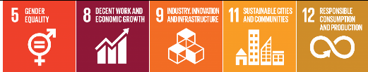 |
| Improvement of process performance of EE by establishment of energy management in buildings/industries | MME | Training of a certain number of energy managers/companies by DTEBP | |
| Efficiency energy and pollution management in latex and rubber wood processing | MAFF | Energy saving, reduce GHG and pollution from waste water, health and environment friendly, increased income and value added and employment, and safety working environment | |
| Waste | |||
|
Development of strategies for waste management including hazardous waste management (MISTI focuses on technical aspect of waste management inside the factories; Improve process only) |
MISTI |  |
|
|
New sanitary landfills with LFG extraction and LFG extraction at the Dangkor Landfill Potential for private sector engagement in financing, constructing, and operating sanitary landfill and LFG systems |
MoE |
Reduced fire hazard
|
 |
| Bio-digesters construction (85% reduction compared to 2000)(Small size (2-3-4m3); Medium size(6-8-10m3), Large size(>10m3) | MAFF | Contributing people's livelihood as well as better economy | |
|
Composting of biodegradable organic fraction of MSW supplemented with separation of organic waste (at source). Can be done at different stages in the waste management value chain, either at household, community level or at landfill site. Private sector can invest in and operate the composting facilities |
MoE | Job creation -Reduced odour nuisance- local organic fertilizer production-less leachate leakage from landfill-less landfill space required, so cost-savings (but space required for composting) | |
|
Production of Refuse-Derived Fuel (RDF) from either a) fresh MSW or b) old MSW mined from the Dangkor landfill. The mechanical and biological separation and treatment of waste will be combined with an anaerobic digestion plant (generation of biogas from organic waste) to power facilities at the landfill. The produced RDF can be sold to e.g. cement industry as fuel. Private sector can invest in and manage the RDF and anaerobic digestion plant |
MoE |
|
|
| Implementation of National 3R strategy | MoE | Achieving a recycle process with an environmental and economic purpose contributes to the goal of the environment and sustainability | |
| Centralized recycling facility for industrial waste from the garment sector | MISTI | Provides job opportunities for landfill pickers in a safer environment-Reduces energy costs and Provides a more comfortable environment for the occupiers of The buildings equipped with insulation-Improves local air quality by reducing The open burning of garment waste, including at The landfills-Reduces The need for landfill space-Reduces The need of virgin materials for manufacturing building products | |
| Energy | |||
|
Application of electrical equipment labelling & MEPS (Lighting, Cooling & Equipment) |
MME | Labelling and standard product information of the consumption of energy | 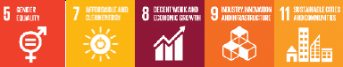 |
| Public awareness campaigns, DTEBP-EE info centers | MME |
1. Reducing inefficient appliances/technologies uses
2. Informing the citizens of possibilities to improve EE and of related benefits |
/> 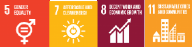 |
| Building codes and enforcement/certification for new buildings and those undergoing major renovation | MME | Energy efficiency standards, laws and regulations concerning building energy codes are being elaborated and promulgated | |
| Introduction of efficient electrical industrial motors and transformer | MME |
Resolve of economic viability of investing in the improvement of energy efficiency of the equipment |
/> |
| Improve sustainability of charcoal production through enforcement of regulations | MME | Forest fire prevention and biodiversity protection |  |
| Increase energy access to rural area | MME |
Local community has electricity 24 hours |
|
|
Incorporate renewable energy resources (solar, wind, hydro, biomass) into energy mix |
MME |
Reduce imports energy sources and increase clean energy |
|
| Diversification of household and community energy generation sources to reduce reliance on biomass as an energy sources | MME |  |
|
| Reducing GHG emission though off grid street lightening of rural municipality | NCDD | a) Improve knowledge of local governance on impact of climate change will lead to mitigate GHG emission b) NCDD will also implement ESS, Gender, M&E along with climate action | |
| Toward Battambang city to green city | NCDD | a) Improve knowledge of local governance on impact of climate change will lead to mitigate GHG emission) NCDD will also implement ESS, Gender, M&E along with climate action) Paradigm shift | |
| Cooling of public sector buildings | NCSD |
The cooling of public buildings has many benefits, including:
|
|
| Promote sustainable energy practices in manufacturing | MISTI | Improving energy productivity, reducing ambient temperatures through ventilation and cooling optimization and decreasing fugitive heat losses from steam and compressed air delivery systems | |
|
1: Sustainable energy practices in garment industry 1.1: Upgrade to efficient boiler 1.2: Sewing machine 1.3: Washing machine 1.4: Drying machine 1.5: Compressors 1.6: Efficient lightning appliance |
|||
|
2: Sustainable energy practices in brick industry 2.1: Boat-to-rotary kiln upgrade 2.2: Modified boat-to-rotary kiln upgrade |
Improving brick kiln efficiency can improve the safety of brick kiln operation through implementation of better safety features that reduce risk of injury during loading of fuel and handling of bricks. Reducing |
||
| the toxicity and amount of emission pollutants coming from brick kilns is also an expected benefit to implementing energy efficient technology. | |||
3: Sustainable energy practices in food & beverage Industry 3.1: Replacing inefficient boilers in the F&B industry |
Improving energy productivity, reducing ambient temperatures through ventilation and cooling optimization and decreasing fugitive heat losses from steam and compressed air delivery systems |
||
4: RECP practices in the manufacturing industries 4.1: Replace an LPG fired boiler consuming about 704,428 L/year with a biomassresidues fired boiler in a Food Import and Export company 4.2: Replace a diesel-fired dynamo with grid electricity at a milling factory; the diesel dynamo is consuming 12 liters/hour operating for 8 hours/day, 20 days/month 4.3: Improve operations at a noodles manufacturing unit to reduce the usage of one boiler from existing four-boiler system 4.4: Install a system to collect and re-use waste steam and hot water from meat steamer, resulting in about 524 m3/year of fuel wood saving |
|||
| Transport | |||
| Promote integrated public transport systems in main cities | MPWT |  |
|
| Enhance maintenance and inspection of vehicle(Piloting maintenance and emission inspections of vehicles) | MPWT |
|
|
| E-mobility | MPWT | | |
| Establish green belts along major roads for climate change mitigation | MPWT | |
|
| Shift long distance freight movement from trucks to train | MPWT | |
|
| Agriculture | |||
| Increasing the effectiveness and sustainability of agricultural land management techniques (Conservation Agriculture) | MAFF | Sustainable land management, reduce emission from burned agriculture residue, protect soil from erosion |  |
| Organic input agriculture and bio-slurry; and deep placement fertilizer technology | MAFF | Reduction of chemical fertilizer utilization, contribution to mitigate the greenhouse gases, reduce production cost and pollution, and soil improvement | |
| Promote fodder production to improve high nutrient rich and high-quality forage feed value agriculture by-products technology to support cattle production | MAFF | Increase soil organic carbon, Enhanced adoption by farmers of improved fodder technology has significantly increased animals’ production and household income | |
| Promote manure Management through compost making process to reduce carbon emission | MAFF | Increase GAHP “Good Animals Health Practice” enhanced adoption by improving animal farms and slaughterhouses; household | |
| Seedlings distribute to public and local community | MAFF | Contributing forest cover, promote CF livelihoods, and cultural | |
| Forestry | |||
| FOLU: Reduce 50% of historical emission by 2030 | REDD+ Technical Secretariat (RTS) | Combating the climate change and promoting people's livelihood | 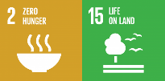 |
Table 17 Summary of the SDG assessment of adaptation actions
| Adaptation action | Ministry | Co-benefits (environmental, social, adaptation) | SDG contribution |
|---|---|---|---|
| Agriculture | |||
| Towards an Agroecological transition in the uplands of Battambang | NCDD |
|
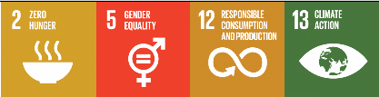 |
| Development of Rice crops for increase production, improved quality-safety; harvesting and post harvesting technique and agro-business enhancement | MAFF |
Promote climate-friendly Agribusiness rice value chain and profit in rice production value chains. Mitigating impact of rice farming on environment |
|
| Development of Horticulture and other food crops for increase production, improved quality-safety; harvesting and post harvesting technique and agro-business enhancement | MAFF | 47.1% of youth who involved in agriculture sectors, will be provided capacity development, technology transfer in various form of sustainable agriculture including Climate Smart Agriculture (CSA), Sustainable Rice Platform (SRP) and Good Agriculture Practice (GAP). Youth will be strongly involved in pre and post-harvest technology, and Agriculture Cooperative (ACs), Enterprise development and other agrobusiness enhancement to ensure food security and income generation among the youth groups. | |
| Development of Industry crops for increase in production, improved quality-safety; harvesting and post harvesting technique and agro-business enhancement | MAFF | Promote climate-friendly Agribusiness value chain and profit generation boosting local food security through diversification, reduction in soil degradation and greenhouse gas emissions through fostering eco-system services through CSA practices. | 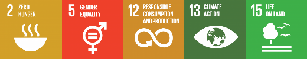 |
| Improvement of support services and capacity building to crop production resilient to climate change by promoting research, trials and up-scaling climate-smart farming systems that increase resilience to CC and extreme weather events | MAFF | Increasing resilience to climate change and natural disasters, and improving resilience facilities, tools and technologies. | |
| Building climate change resilience on cassava production and processing | MAFF |
Mitigation: reduce pollution from processing Environmental: Prevent soil erosion Social: healthy living conditions for people in the cassava production areas |
|
| Research for the development and enhancement of agricultural productivity, quality, and transfer through strengthening of crop variety conservation and new crop variety release responding to the impacts of climate change | MAFF | Promotion of environment and conservation of natural resources | |
| Development of new technologies and increased yields by using new crop varieties which adapt to climate change | MAFF | Promotion of environment and conservation of natural resources | |
| Development of rubber clone varieties suitable for AEZ and resilient to climate change | MAFF |
Maintain and improved rubber production and provide employment; Improvement of rubber plant genetic and fully scientifically documented; Increased revenue by reduced maintaining cost; Mitigation as rubber plantation requested CO2e Economic growth |
 |
| Enhancing institutional and capacity development on climate change impact, vulnerability assessment, adaption measures and mitigation related to rubber sector | MAFF | Sustainable rubber production to support economic development and employment | |
| Improvement of animal breeding technology in Cambodia through Artificial Intelligence (AI) which can adapt to climate change | MAFF | Environmental, social and adaptation | |
| Promotion of research capacities on animal genetic, animal breeding, and animal feed is strengthened to adapt to climate change | MAFF | Environmental, social and adaptation | |
| Strengthening capacities for risk prevention and reduction, effective emergency preparedness and response at all levels; enhancing livestock and disease-related early warning system, and integrating disaster risk reduction and climate change adaptation measures into recovery and rehabilitation initiatives in the livestock sector | MAFF | Environmental, social and adaptation | |
| Promoting aquaculture production systems and practices that are more adaptive to climate change | MAFF | Develop aquaculture system increase production, enhance livelihoods related to food and nutrition security, reduce fishing pressure on fisheries resources | 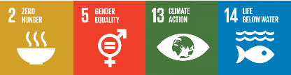 |
| Promoting climate resilience in the capture fisheries sector | MAFF | Develop fishes and aquatic habitats, sustain fish yields, strengthen food and nutrition security |  |
| Scaled up climate‐resilient agricultural production through increased access to solar irrigation systems and other climate‐resilient practices | NCDD |
|
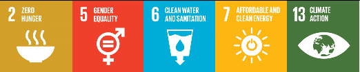 |
| Developing a training manual and providing training on approaches for development of climate-smart and sustainable livelihood to rural poor people | MRD | -Adaptive capacity of rural poor people will contribute to livelihood promotion and be environmentally friendly |  |
| Coastal zones | |||
| Protection, risk mitigation, and resilience building from marine pollution particularly caused by activities on land including marine pollution from waste and aquaculture activities. | MoE | Mitigation: reduce GHG emission from waste in oceans |  |
| Effective management and protection of ecological systems of marine and costal zones to avoid adverse impacts from various factors, build their resilience and restore its functions for productive and healthy oceans | MoE | Biodiversity of marine resources | |
| Energy | |||
| Conduct climate risk analysis for the existing electricity infrastructures and provide recommendations | MME |
|
 |
|
Climate proofing of existing and future solar/hydropower infrastructure |
MME | |
|
| Human Health | |||
| Enable effective decision-making for health interventions through generation of information and improved surveillance or early-warning systems | MOH |
-Indirect: reduce risks of lifelost and losing money on longdistance travel to healthcare |
 |
| Enhance climate resilience in health service delivery | MOH |
|
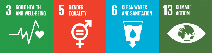 |
| Strengthen and provide capacity building of technical guidelines for diagnosis, detection, control, prevention and treatment of vectorborne and water-borne diseases, injuries and other food poisoning illnesses arising from climate change | MOH | Capacity for health professionals improved to identify and treat climate-sensitive health issues | |
| Conduct water sanitation and hygiene (WASH) assessment on climate change and develop planning for communities and health facilities. | MOH | Population |  |
|
Strengthen institutional capacities to effectively integrate climate risks and adaptation options in health sector planning and implementation |
MOH |
Capacity of health personnel improved to identify and treat to climate-sensitive disease |
|
|
Industry |
|||
| Integrating climate change response measures onto the construction design for buildings and for rural housing (use of modern integration of technology) | MLMUPC |
|
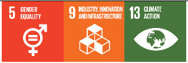 |
| Develop resilient infrastructure of school buildings in response to climate change | MOEYS |
|
|
| Implement climate change and disaster resilient construction and infrastructure standards including for public sector and community-focused buildings covering public health, education, WASH, etc. | NCDM |
|
 |
|
(DLUP) Prepare spatial planning (city/district/municipality) guidelines at all levels for climate change adaptation (CLUP) Integrating climate change response measures to the commune land use planning |
MLMUPC | Enhance terrestrial, aquatic resources of each ecosystem of the commune and district location to preserve and conserve environmental degradation (35% of total commune land are green spaces) and enhance social stakeholder to participate the during road map design and CLUP/DLUP study |  |
|
Integrating climate change response measures to the policy of social land concession (SLC) and its procedures |
MLMUPC |
The country’s land poor and landless families have received land, have improved their livelihoods via land allocation, and land recipients have capacity to challenge with climate change impacts because they have been trained and educated on climate change. On the other hand, allocated land to people to use for their farming creates soil fertility |
|
| Prepare modality of standardized green spaces for urban planning or new sub-cities to address vulnerability of urbanization. | MLMUPC |
Mitigation co-benefit: contribution to the local GHG emission Environment co-benefit: ecosystem restoration (i.e. regulate water) Social co-benefit: job creation, improved public health |
 |
| Vulnerability assessment towards the development of climate change strategic plans to respond to the impacts on land, housings, coastal management, and building due to climate change | MLMUPC | Contribution to climate data related to cities through finding of the assessments |  |
| Promote land use planning tools for urban houses and building construction adaptive to climate change benefits to the low-income and homeless people | MLMUPC |
The project will produce lowcarbon emissions to enhance environmental atmosphere Social co-benefit: build assets (housing) for low income and homeless people |
 |
| Promote proper low-cost shelters for lowincome households resilient to climate change, practically in the area of social land concession | MLMUPC |
The project will produce lowcarbon emission that is to enhance environmental atmosphere Social co-benefit: reduce land conflict, improve livelihood of beneficiaries through provision of low-cost shelters in the areas of social land concession |
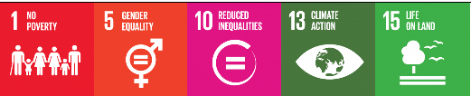 |
| Development of building code with mainstreaming climate change into building designs | MLMUPC |
Energy consumption in building sectors Reduction of GHG in atmosphere Promote low-cost materials for building and housing Improve health and safety of city inhabitants |
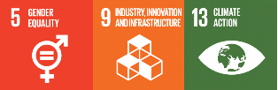 |
| Mainstream climate change response measures into coastal development planning against sea water intrusion, sea water rise and seasonal storm destruction, and rising temperature | MLMUPC |
Promote sea engineering environment, sea water rise, sea tidal hazard, seawater intrusion and sea erosion Disaster management to protect coastal populations |
|
| Strengthening climate resilient city | NCDD |
Strengthen knowledge and capacity on resilient city. Financing for resilient cities. Partnership and communication. |
|
| Develop national road construction and maintenance design standards for national and provincial roads, considering climate change impact including M&E framework develop for climate proofing and low-carbon technology roads | MPWT |
Reduce road repair/ rehabilitation cost Reduce vehicle maintenance Save time Ensure flow of traffic and transportation |
|
| Repair and rehabilitate existing road infrastructure and ensure effective operation and maintenance systems, considering climate change impact | MPWT |
|
|
| Rural road rehabilitation and improvement for climate change resilience | MRD |
|
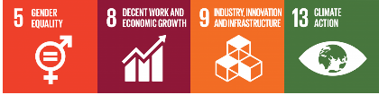 |
| Livelihoods, poverty and vulnerability | |||
| Develop and annually update national and subnational multi-hazard and climate risk assessments, including identification of most vulnerable communities. | NCDM |
|
 |
|
National end-to-end Early Warning Systems with focus on effective dissemination to populations at risk |
NCDM |
Other sectors, i.e. water resources and meteorology, agriculture will be of benefited by potential crosssectoral mitigation activities. |
 |
| Implement community–based disaster and climate risk management programs | NCDM |
|
|
| Building resilience of biodiversity conservation and restoration to adapt to climate change | MOE | Environment | 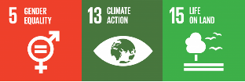 |
| Integrated village development | MRD |
|
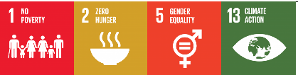 |
| Strengthen flood resiliency capacity of communities around Tonle Sap (access to clean water, off grid renewable energy, and waste management) | NCDD |
|
 |
|
Building climate resilient livelihood and public infrastructures in social land concession for vulnerable communities |
NCDD |
Modality: the project designed as potential for scaling up through its key success of implementation. It would be the key recommendation for the improvement of social land concession implementation to include climate change as one of main focus while community will really need support to cope with such climate change issues when settle-in new development area of social land concession sites. Improve knowledge: the project will help to improve understanding for sub-national level, local authorities on climate change both of adaptation and mitigation though join implementation follow decentralize approach under coordination of National Committee for Sub-National Democratic Development Secretariat (NCDDS). Similarly, the community groups will also receive training and awareness raising to build their sense understanding climate change to engage fully participation for the project implementation. This will positively contribute to both of adaption and mitigation action in the future. |
|
| Tourism | |||
|
Provide capacity building and supports for climate change innovation at the provincial along Tonle Sap River |
MOT |
Encouraging all involvement tourism stakeholders for better the understanding and to engage their contribution on adaptation to two beneficiaries: 1) Environmental Education Development on green tourism, 2) Peam Krosoap was estimated be upgrade and innovated for climate change adaptation. Cambodia CBET/CET standard, 3) The quality of ecotourism services and products would improve through by tourism innovation. Reducing poverty and contribute to responding effectively to climate change, so it is increasing the gross domestic product of Cambodia (GDP). |
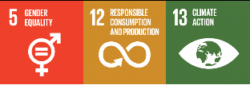 |
| Raising public awareness on climate change innovation at all levels | MOT | 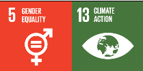 | |
| Practicing smart agriculture in tourism sector | MOT | 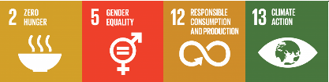 | |
| Water resources | |||
| Establish an automated nation-wide hydromet monitoring network and data transmission program, including collection of climate and hydrological data | MOWRAM |
Data can be used cross-sectorally and for short- and long-term projection Supporting disaster risk reduction,and other mitigation activities Supporting River Basin management planning and monitoring activities Supporting hydrological modelling works and decision support system (DSS) |
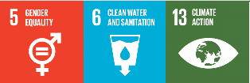 |
| Establish a centralized and standardized approach to climate-resilient water management | MOWRAM |
Improved relationships between all major water users Improved water allocation and abstraction limits -> reverse/halt overdevelopment impacts Protection of environmental flows as the support of basin human needs and ecosystem |
|
| Establish a national climate and flood warning system, including a service centre and flood emergency response plans | MOWRAM |
Other sectors, i.e. agriculture will benefit by potential cross-sectoral mitigation activities Flood risk reduction and mitigation |
|
| Integrated groundwater management in Cambodia | NCDD |
|
|
|
Establish nationally standardized best -practice systems for irrigation |
MOWRAM |
Improved relationships between all major water users Increased productivity of agricultural sector Improved water allocation and abstraction limits and reverse/halt overdevelopment impacts Protection of environmental flows as the support of basin human needs and ecosystem Increased drought management |
 |
| Resilient and adaptive rural water supply and sanitation construction | MRD | Changing attitude and practices of rural people to be more environmentally friendly |  |
| Education | |||
| Upgrading curriculum and training methodologies, including libraries, to include climate change subjects for primary schools | MOEYS |
Students shall understand:
|
 |
| Upgrading curriculum to include climate change for non-formal education | MOEYS |
Students shall understand:
|
|
|
Build centres of excellence for delivering climate change courses and research among Universities |
MOEYS |
|
|
| Conduct training for education officials on climate change e.g. as a required component of teacher training | MOEYS |
|
|
| Gender | |||
| Strengthen institutional capacities at national and sub-national levels to integrate gender responsiveness in climate change adaptation's policies, plans, programming, including gender budgeting | MOWA | Improve gender equality, Gender responsive action, Gender responsive budgeting in policies planning of action and programmes |  |
| Enhance coordination and implementing accountability mechanisms to reduce climate change vulnerabilities of disadvantaged women and other marginalized groups such as ethnic minority women and men, People with Disability (PWD), youth, and elderly | MOWA | Increase collaboration with Ministries, institutions, civil society, development partners and the private sector in an efficient and accountable manner Extending the scope of partnership building Increase the family economy, food and nutrition Security | |
| Enhance monitoring and evaluation systems of sectoral ministries to track gender outcomes in climate change initiatives with particular focus on collecting and managing sex-disaggregated data, gender indicators and budgeting, outcome-based reporting, and dissemination and up-scaling of the gender and climate change adaptation related knowledge generated. | MOWA |
|
|
| Capacity development for GCCC members and sectoral ministries on Gender analysis, gender responsive and NDC | MOWA |
Capacity development Promotion of gender in social inclusiveness Reduction of gender gap in social environment |
|
|
Develop a technical guidelines for gender mainstreaming in NDC process |
MOWA |
Mainstreaming gender and social inclusion in NDC Analysis of gender integration in NDC (both adaptation and mitigation) |
|
| Market supply chain of rural women entrepreneurs resilient to climate change | NCDD |
|
 |
| Governance | |||
| Local government and Climate Change-III (LGCC3) | NCDD |
|
|
| Reducing vulnerability of local communities though sub-national climate governance reform (focusing on policy) | NCDD |
a) NCDD will also implement ESS, Gender, M&E along with climate actions according to GCF standards b) Create enabling environment for local solution to address climate change |
|
| Information | |||
| Enhance the quality of broadcasting means and expand the capacity of coverages for raising awareness on climate change nationwide | MOINF |
|
|
| Training and enhancing human capacity on climate change in information sector | MOINF |
|
|
| Urge private Media organizations to participate in covering/broadcasting the climate change topics and to complement the state broadcasting agencies. | MOINF |
|
|
| Urge and encourage to reduce (or ban) all forms of commercial advertisement that has negative impact on environment | MOINF |
|
|
| Knowledge sharing | |||
| News coverage and program production for awareness raising on climate change and its impacts | MOINF |
|
|
| Policy and planning | |||
| Building climate resilience for district and commune governance through policy and strategic development plan reform (Focus on implementation) | NCDD |
|
|
| Mainstreaming climate change into Education Strategic Plan 2019-2023 Strategic Plan and SDG4 Roadmap for Education 2030 | MOEYS |
|
|
| Strengthen the cooperation with local and International development agencies, NGOs and relevant institutions for technical and financial support to implement the adaptation planning in media sector | MOINF |
|
|
| Development of climate change national/ capital/ provincial development plans including an M&E system with specific indicators | MOP | Climate change adaptation and mitigation and other environmental issues (air pollution, water pollution, waste management, biodiversity, etc.) will be integrated into a single plan | |
| Development of a climate change public investment program for the national/capital/ provincial levels | MOP | Mitigation investment plan Public awareness on climate investment and fund will be improved | |
| Building adaptive and resilient capacity for MRD officers at national and sub-national level for mainstreaming climate change into rural development planning processes and technical design. | MRD | Contribute to the improvement of rural development work in challenging environment | |
|
Build adaptive capacity on climate change for village leaders (Village Development Committees, VDCs) |
MRD |
Contribute to rural community development planning and practices in challenging environment |
|
|
Strengthen resilience and adaptation capacity to climate change in the most vulnerable provinces/districts/communes (produce vulnerability index maps at the commune level, integrate climate change into investment and development plans, demonstrate the identified actions at pilot sites) |
NCSD | |
|
|
Update and implement the Cambodia Climate Change Strategic Plan (CCCSP) for 2024-2033 |
NCSD | |
|
|
Integrate climate change measures into national policies, strategies and sectoral strategies and plans |
NCSD | |
|
|
Enhance institutional capacity on climate change (mitigation, adaptation, policy, strategies, planning, and finance) through awareness raising, training, and advocacy |
NCSD | |
|
|
Development of a long-term low emission strategy |
NCSD |  |
|
| No. | Mitigation action | Sector | Ministry | Government priority |
GHG mitigation potential |
Baseline and targets | Co-benefits(adaptation, environmental, social) |
Finance costs (USD) |
Finance benefits | Technology availability | Gender | Conditional/ Unconditional | Youth | Private sector | SDGs |
|---|---|---|---|---|---|---|---|---|---|---|---|---|---|---|---|
| 1 |
Urban planning tools for climate change mitigation and the urban planning solution in three sub city |
Industry |
Ministry of Land Management, Urban Planning and Construction (MLMUPC) |
Urban Strategic Policy 2020. |
Three urban planning solutions will be implemented through the toolkit and formulated policy in the case area to reduce GHG emissions from earth construction, resulting in the saving of 2360 tons of CO2 |
1. 70% of the three urban planning completed by 2025 (unconditional) 2. 100% of the three urban planning completed by 2030 (unconditional) |
Air pollution reduction, independency in terms of energy generation, improve resilience of urban planning through access high technical motivation |
|
Technology is available, but it needs to have complemented from international places |
Job targets at least 32% of women |
Conditional | 5, 8, 9,11, 12 |
|||
| 2 |
Improvement of process performance of EE by establishment of energy management in buildings/industries |
Industry |
Ministry of Mines and Energy (MME) |
Implementation of energy audit and enforcement of ndustries to adopt energy management standards |
0.1 MtCO2e/year |
1. Conduct the mandatory energy audits for companies with an annual energy consumption of more than prescribed within the laws/regulation 2. Voluntary scheme for other companies, especially for SMEs to reduce 10% in 2030 |
Training of a certain number of energy managers/companies by DTEBP |
USD 50 million | USD 60 million |
Implementation of international standards such as 50001 |
30% | Conditional |
Required corporation from private companies |
5, 8, 9, 11, 12 |
|
| 3 |
Efficiency energy and pollution management in latex and rubber wood processing |
Industry |
Ministry of Agriculture, Forestry and Fisheries (MAFF) |
CCPAP 2016-2020 |
NA |
Piloting and establishment one completed demonstration local factory for latex and rubber timber processing (energy saving, pollution free, less chemical input, and improve quantity and quality of raw products) |
Energy saving, reduce GHG and pollution from waste water, health and environment friendy, increased income and value added and employment, and safety working environment |
USD 1,158,000 | It is expected trained latex and wood processors will contribute to climate change impact through waste water treatment and biogas capture technology. Safety working environment and pollution free. |
Waste water treatment plant and biogas capture technology, latex processing, wood processing, timber treatment, |
Women participation in all production chain |
5, 8, 9, 11, 12 |
|||
| 5 |
New sanitary landfills with LFG extraction and LFG extraction at the Dangkor Landfill Potential for private sector engagement in financing, constructing, and operating sanitary landfill and LFG systems |
Waste |
Ministry of Environment (MOE) |
|
GHG emission reductions due to avoidance of anaerobic decomposition of organic waste in landfills & dumpsites.
|
This action aims to increase the share of waste disposed at sanitary landfills with LFG extraction from 0% in 2020 to 50% by 2030 and extract LFG from the Dangkor Landfill |
Reduced fire hazard
|
Conditional NDC action: Cumulative 2020-2030 investment in sanitary landfills: USD 664 million for flaring and USD 788 million including electricity generator (excluding land acquisition) | Estimated accrued income in the period of 2020-2030: 1. Electricity sales:USD 69.8 million 2. Carbon revenues: USD 25.97 million based on USD 5/carbon credit) |
Available in the region, incl. Thailand |
Gender diversity target: 40-60% of workforce are female at all levels (workers to middle and executive managers) | Conditional | 5, 8, 9, 11 |
||
| 6 |
Composting of biodegradable organic fraction of MSW supplemented with separation of organic waste (at source). Can be done at different stages in the waste management value chain, either at household, community level or at landfill site. Private sector can invest in and operate the composting facilities |
Waste |
Ministry of Environment (MOE) |
National Waste Strategy B (recycling + Strategy A (Separation) - PPCA Action Area 2-2 (Recycling Organic Waste) |
GHG emission reductions due to avoidance of anaerobic decomposition of organic waste in landfills & dumpsites. -If 10% of all MSW generated is composted by 2030 then up to 0.5 MtCO2e/year of GHG emissions can be avoided by 2030 (depending on BAU and operational practices during composting). |
Increasing share of total MSW generated that is composted from 2% in 2016 to 10% by 2030. |
Job creation
|
Conditional NDC action: 1. A one-time Investment cost (CAPEX): From USD 40-60 per annual tonne for windrow/static pile composting to USD 300-500 per annual tonne for in-vessel composting. 2. Operating costs: at least USD 32 per tonne for static pile composting. |
Sale of local fertilizer (compost)
|
Available in Cambodia (e.g. COMPED and CSARO are operating a composting facilities) |
Gender equality will be promoted by implementing good practices and involving women at all locations where the actions will be implemented. Women will play a crucial role in composting activities at household scale as traditionally women are more involved in cooking activities. Target:60% of ppl involved are women |
Conditional | 5, 8, 9, 11 |
||
| 7 |
Production of RefuseDerived Fuel (RDF ) from either a) fresh MSW or b) old MSW mined from the Dangkor landfill. The mechanical and biological separation and treatment of waste will be combined with an anaerobic digestion plant (generation of biogas from organic waste) to power facilities at the landfill. The produced RDF can be sold to e.g. cement industry as fuel. Private sector can invest in and manage the RDF and anaerobic digestion plant |
Waste |
Ministry of Environment (MOE) |
National Waste Strategy B (recycling + Strategy A (Separation)PPCA Action Area 2-2 (Recycling Organic Waste) |
|
1,100 ton/per day of MSW (fresh and landfill mining |
|
Investment: USD 16,880,000 (excluding land) | Sale of surplus electricity to EdC - Sale of RDF: USD 25/ton - Sales of slurry/compost (quality standards required) |
Available in regions, including Thailand and Vietnam |
Promote gender equality and workers safety (health) situation by implementing good practices Target:40 to 60% of ppl involved are women’s |
Conditional | 5,8,9,11 | ||
| 8 |
Implementation of National 3R strategy |
Waste |
Ministry of Environment (MOE) |
|
|
Cities and secondary towns |
Achieving a recycle process with an environmental and economic purpose contributes to the goal of the environment and sustainability |
1. Low cost for promoting awareness/campaign for public participation 2. High cost for recycling plastic (USD 4,000/ton) |
1. In-country recycling will have significant economic benefits 2. Reduction of waste to be landfilled |
Available in the region (Vietnam, Thailand, Malaysia) |
Proportion of young women engages in waste management education. 50% of women will benefit from this action. | 5, 8, 9,11 |
|||
| 9 |
Bio-digesters construction (85% reduction compared to 2000)(Small size (2-34m3); Medium size(6-8-10m3), Large size(>10m3) |
Waste |
Ministry ofAgriculture,Forestry and Fisheries (MAFF) |
NSDP 2019-2023; ASDP 2019-2023; Strategic Planning Framework for Livestock 2016 - 2025 |
Methane (CH4) = sum ((n small scale*EFs) +(n mediunscale * EFm)+(n big scale * EFb)); the convert to C02 (using GWP); 4m3 = 4ton CO2e |
1,500 bio-digester plant per year (include:\small=1450; medium= 45; large=5) >contributing people's livelihood as well as better economy |
USD 12,750,000 | Benefit in term of gas or fuel-wood reduction (250 USD/4m3plant /year/HH and get slurry (1,5-2,0t/4m3plant/HH) |
Develop an acceptable and suitable biodigester for farmers and farms; Develop an effective bioslurry for safe crop garden/farms to supply markets |
Women participation were encouraged |
5, 8, 9,11 |
||||
| 10 |
Centralized recycling facility for industrial waste from the garment sector |
Waste |
Ministry of Industry, Science, Technology and Innovation (MISTI) | - The GHG benefit targeted from the action is 0.12 MtCO2e from 2021-2030 at an average of 0.01 MtCO2e/year |
Accurate data generated on garment waste profile, quantity and management-50% of suitable garment waste captured for recycling |
1. Provides job opportunities for landfill pickers in a safer environment2. Reduces energy costs and Provides a more comfortable environment for The occupiers of The buildings equipped with insulation3. Improves local air quality by reducing The open burning of garment waste, including at The landfills4. Reduces The need for landfill space5. Reduces The need of virgin materials for manufacturing building products |
Indicative capital investment cost in the range of USD 2-3 million which includes collection trucks, warehouse, conveyor belts, shredder/grinder, compactors/moulders. This cost will vary depending on the final technologies selected.Operational costs will mostly consist of truck diesel (most garment companies are in the Phnom Penh area), labour and electricity. | Income derived from waste collection fees and selling the products, as well as seeking financial support from wellestablished international buyers. | Gender equality will be an important part of the project and strongly promoted. Many women work as waste pickers at the landfills and creating job opportunities in safer environments would be a central element of such project. Women represent 85% of garment manufacturing employees and their knowledge and technical know-how will be tapped in for assessing recycling options. |
Special Economic Zone; GMAC; and Building Industry | 5, 8, 9,11 | ||||
| 11 |
Better management of industrial wastewater in the food & beverage sector |
Waste |
Ministry of Industry, Science, Technology and Innovation (MISTI) |
|
Due to the lack of available data, it is difficult to estimate current GHG emissions and therefore derive emission saving targets (this should be built into the project). Assessment of methane production potential from IWW streams is depending on the concentration of degradable organic matter in the wastewater, the volume of wastewater, and the propensity of the industrial sector to treat their wastewater in anaerobic systems, or not treat it at all. One of the best ways to reduce GHG emission is to capture the methane generated by anaerobic IWW treatment processes. However, this can be only economically feasible for large scale operations. A study in China targeting IWW with a high concentration of organics treated with anaerobic systems indicated that the amount of gas recycled in 2010 was only 5.4% of total CH4 emissions. Therefore, a target of 5-10% for Cambodia may be realistic as a starting point. Other targets may include:
|
1. Reduced energy and water costs at factories, by reduce water use and/or reuse treated wastewater 2. Improved air quality (odours) for workers and local populations 3. Improved water quality for local populations as direct discharge pollutes sources of water that may be used for cleaning, cooking and farming 4. Provides job opportunities for the installation of WWTPs 5. Opportunities to reuse the sludge, depending on the contamination profile |
The total cost will depend on the number of factories targeted. Installing a new system is a net cost, but a basic system can be installed relatively cost effectively for SMEs. Improvements of existing systems will be done according to cost benefits analysis, aiming to work with factories that will save money. Overall, It could be aimed to set up a finance vehicle of USD 5-10 mn to support factories with cofinancing. | Gender equality will be an important part of the project and strongly promoted. Many women work in factories. Furthermore, they are likely to be more exposed by the direct discharge of IWW in local waterways as they are primarily responsible for cooking and washing. | 5, 8, 9, 11 |
||||||
| 12 |
Application of electrical equipment labelling & MEPS (Lighting, Cooling &Equipment) |
Energy |
Ministry of Mines and Energy (MME) |
Increase market share of higher-class efficient appliances |
1 Mt CO2e/year | Reduce 1.2 TWh (29.7%) of electricity use in 2030 |
Labelling and standard product information of the consumption of energy |
USD 250 million | USD 280 million |
Labelling of electrical regulated appliances Comply with MEPS for electrical regulated appliances |
30% | Conditional (With Support from Japan and Korea) |
Require private sectors (Producer, Importer, Retailers) to be engaged and to comply with MEPS | 5, 7, 8, 9, 11 | |
| 13 |
Public awareness campaigns |
Energy |
Ministry of Mines and Energy (MME) |
1. Investments in energy efficiency are seen more favourably to decrease energy consumption 2. Creation of both in relation to the use of energy efficient appliances, as well as concerning the features of the buildings |
0.03 Mt CO2e/year | Providing the necessary fundamentals to understand energy efficiency issues when in professional practice to reduce 2% in 2030. The approximate number of awareness programmes scheduled for a year? (25 programmes) |
|
USD 20 million | USD 32 million |
1. Develop curriculum for educational institutions 2. Social media to promote saving activities and preparation and broadcasting of a documentary film on Sustainable Energy |
30% | Conditional |
Public sector and Private sector |
5, 7, 8, 9, 11 | |
| 14 |
Building codes and enforcement/certification for new buildings and those undergoing major renovation |
Energy |
Ministry of Mines and Energy (MME) |
Certification level new buildings built or undergoing major renovation |
|
Energy efficiency standards, laws and regulations concerning building energy codes are being elaborated and promulgated |
USD 25 million | USD 40 million |
Information needed to improve energy efficiency in building designs |
30% | Conditional |
Public sector and Private sector |
5, 7, 8,>9, 11 |
||
| 15 |
Introduction of efficient electrical industrial motors and transformer |
Energy |
Ministry of Mines and Energy (MME) |
Enforcement of efficient electrical transformers/motors in utilities /buildings/ industries which reduces electricity consumption |
0.08 Mt CO2e/year |
Reduce 2.3% of current electricity consumption in 2030 |
Resolve of economic viability of investing in the improvement of energy efficiency of the equipment |
USD 16 million | USD 21 million |
Request to comply with new highefficiency electric motors |
30% | conditional |
Public sector and Private sector |
5, 7, 8, 9, 11 |
|
| 16 |
Improve sustainability of charcoal production through enforcement of regulations |
Energy |
Ministry of Mines and Energy (MME) |
Draft Biomass Strategy Plan (MME) |
Strengthen climateresilient energy through increase clean charcoal production |
100,000 ton/year by 2025 200,000 ton/year by 2030 |
Forest fire prevention and biodiversity protection |
USD 10 million | USD 20 million |
Mixing Rice husk, Coconut shield and cops |
30% | Conditional |
Incentives for green charcoal companies to be able to compete with traditional charcoal |
5, 7, 8 | |
| 17 |
Increase energy access to rural area |
Energy |
Ministry of Mines and Energy (MME) |
At least 90% of household has access to electricity grid by 2030 |
Strengthen climateresilient energy through electricity infrastructure improvement in order to respond to climate related disasters. |
2020
|
Local community has electricity 24 hours. |
USD 40 million | USD 55 million |
Solar Battery Charging station |
30% | Conditional |
Public sector and Private sector |
5, 7, 8 | |
| 18 |
Roadmap study on Integration of renewable energy resources (solar, wind, hydro, biomass) into energy mix |
Energy |
Ministry of Mines and Energy (MME) |
Target of generation power from various types renewable sources |
Strengthen energy reliability |
25 % of RE source into power mix (generation capacity) by 2030 (solar, wind, hydro and biomass) |
Reduce imports energy sources and increase clean energy |
USD 300,000 | USD 600,000 |
1. Solar PV 2. Onshore wind 3. Dam reservoir / run river 4. Waste to Energy |
30% | Conditional +Unconditional |
Public sector and Private sector |
5, 7, 8, 9, 11 |
|
| 19 |
Diversification of household and community energy generation sources to reduce reliance on biomass as an energy sources |
Energy |
Ministry of Mines and Energy (MME) |
Draft Biomass Strategy Plan (MME) |
Strengthen climateresilient energy through increase clean charcoal production |
30% | Conditional | 5, 7 | |||||||
| 20 |
Reducing GHG emission though off grid street lightening of rural municipality |
Energy |
National Committee for Sub-National Democratic Development (NCDD) |
CCCSP 2014-2023: 1. Leverage the decentralization process to strengthen financial and institutional processes for local adaptation 2. Mainstream climate change into national and sub-national development plans and the NSPS |
Reducing GHG emission though energy consumption of street lightening of the rural municipality | 10 Sangkat of Senmonorom Municipality, Kep Municipality, and Preah Sihanuk Municipality integration of climate change into financial management, institutional arrangement and policy reform by 2028 |
1. Improve knowledge of local governance on impact of climate change will lead to mitigate GHG emission 2. NCDD will also implement ESS, Gender, M&E along with climate action |
USD 10 million | USD 15 million |
1. Climate change governance 2. Climate vulnerability and impact assessment for 5 target Sangkat 3. National Green Growth Policy |
30% |
Private sector engagement through technical support |
5, 7, 8,9, 11 |
||
| 21 |
Toward Battambang city to green city |
Energy |
National Committee for Sub-National Democratic Development (NCDD) |
CCCSP 2014-2023: 1. Leverage the decentralization process to strengthen financial and institutional processes for local adaptation 2. Mainstream climate change into national and sub-national development plans and the NSPS |
Reducing GHG emission though green city planning and ecofriendly habitant. | 5 Sangkat of Battambang municipality integration of green city, and ecofriendly into financial management, institutional arrangement and policy reform by 2025 |
1. Improve knowledge of local governance on impact of climate change will lead to mitigate GHG emission 2. NCDD will also implement ESS, Gender, M&E along with climate action) Paradam shif |
USD 8 million | USD 15 million |
1. Climate change governance 2. Climate vulnerability and impact assessment for 5 target Sangkat 3. National Green Growth Policy |
30% |
Youth volunteers in green space arrangement |
Private sector engagement through technical support |
5, 7, 8, 9, 11 |
|
| 22 |
Eco-payment based on changing behavior on fire wood use of community in Angkor and Kulen Conservation Park |
Energy |
National Committee for Sub-National Democratic Development (NCDD) |
CCCSP 2014- 2023:a) Leverage the decentralization process to strengthen financial and institutional processes for local adaptation) Mainstream climate change into national and subnational development plans and the NSPS |
Reducing GHG emission though avoiding the extraction of the forest from Angkor conservation park and Kulen conservation park for housing, fire wood consumption, and agriculture land. | 20 communes of Prasat Bakong district, Kulen District, Norkor Krav District, and Banteay Srey District, of Siem Reap Province integration of climate change into financial management, institutional arrangement and policy reform by 2030 |
1. Improve knowledge of local governance on impact of climate change will lead to mitigate GHG emission 2. NCDD will also implement ESS, Gender, M&E along with climate action |
USD 7 million | USD 15 million |
1. Climate change governance 2. Climate vulnerability and impact assessment for 5 target Sangkat 3. National Green Growth Policy 4. Performance based climate resilient grant |
30% |
Youth volunteers in green space arrangement |
Private sector investment through ecotourism or PPP |
5, 7, 8, 9, 11 |
|
| 23 |
Cooling of public sector buildings |
Energy |
Ministry of Industry, Science, Technology and Innovation (MISTI) |
1. MME Standards & Labelling for cooling appliances (DRAFT) 2. MOE Guidelines for Green Building (DEVELOPING) 3. MME (with EU and ADB) Energy Efficiency Policy (DRAFT) |
|
Without stronger measures to encourage the uptake of more efficient units, IEA estimates that rising electricity demand from cooling alone is projected to require around 200 GW of additional generation capacity in 2040 and cooling could be responsible for as much as 30% share in the ASEAN region’s peak electricity demand. Deploying more efficient ACs, along with other efficient equipment and building efficiency improvements, would permit ASEAN countries to save 110 TWh of electricity by 2040. This NDC action aims to implement climate-friendly cooling in public buildings to reduce GHG emissions: The adoption of climate-friendly cooling across all Cambodian public sector buildings would result in 0.04 MtCO2e reductions against BAU per year. |
Cooling of public buildings has many benefits, including: 1. Reduced GHG emissions – climate-friendly solutions to cooling buildings reduces the reliance on ACs which are a source of GHGs 2. Improved living conditions – as temperatures rise, cooling of buildings in a necessity to avoid heat stress and the subsequent health risks |
USD 67 million | 5, 7, 8, 9, 11 |
||||||
| 24 |
Promote sustainable energy practices in manufacturing |
Energy |
Ministry of Industry, Science, Technology and Innovation (MISTI) | The National Policy, Strategy and Action Plan on Energy Efficiency in Cambodia (MIME 2013), Basic Energy Plan (2019), The National Policy on Green Growth and the National Strategic Plan on Green Growth 2013-2030 and Industrial Development Policy 2015-2025. |
Technology transfer in key industrial subsectors which are process heat intensive: bricks, food and beverage |
Energy efficiency measures cut the production cost and significantly boost competitiveness and productivity of manufacturing, enabling job creation. Women account for 25% of the industry workforce and around 85% of garment workers, Cambodia’s largest industrial sector |
Conditional |
Possibility for youth engagement related to factories, retailers, technology vendors etc. |
Private sector involvement through factories, GMAC, retailers, ESCOs and technology vendors |
5, 7, 8, 9, 11 |
|||||
|
1: Sustainable energy practices in garment Industry |
Garments 2.3MtCO2e, 55% vs BAU by 2030 |
Improving energy productivity, reducing ambient temperatures through ventilation and cooling optimization and decreasing fugitive heat losses from steam and compressed air delivery systems |
|||||||||||||
|
1.1: Upgrade to efficient boiler |
- GHG emission reductions: 0.03 MtCO2e/year for 26 boilers, approximately | Each efficient boiler is estimated at USD 60,000 cost. | In monetary terms, savings represent USD 13.2 million in avoid wood biomass cost at an average value of USD 40.61/ton. | ||||||||||||
|
1.2: Sewing machine |
GHG emission reduction is estimated at 0.002 MtCO2e/year for 3,500 new electric machines. | Each efficient sewing machine is estimated at USD 200. | In monetary terms, electricity savings represent USDk 468 in a year, at an average electricity cost USD 0.1475/kWh. |
||||||||||||
|
1.3: Washing machine |
GHG emission reduction is estimated at 0.0002 MtCO2e/year for 130 new washing machines | Each efficient washing machine is estimated at USD 3,500. | In monetary terms, electricity savings represent USDk 34.8 in a year, at an average electricity cost USD 0.1475/kWh. |
||||||||||||
|
1.4: Drying machine |
GHG emission reduction is estimated at 0.0001 MtCO2e/year for 65 new drying machines. | Each efficient drying machine is estimated at USD 3,500. | In monetary terms, electricity savings represent USDk 17.4 in a year, at an average electricity cost USD 0.1475/kWh. |
||||||||||||
|
1.5: Compressors |
GHG emission reduction is estimated at 0.0007 MtCO2e/year for 40 new compressors. | Each compressor is estimated at USD 20,000. | Introducing 40 compressors will save 693 MWh/year electricity, totaling 6,930 MWh by 2030. (40 compressors x 17.3 MWh x 10 years) | ||||||||||||
|
1.6: Efficient lightning appliance |
- GHG emission reduction is estimated at 0.005 MtCO2e/year for 150,000 new efficient lightning appliances. | Each lightbulb is estimated at USD16. | In monetary terms, electricity savings represent USDk 730 in a year, at an average electricity cost USD 0.1475/kWh | ||||||||||||
|
2: Sustainable energy practices in brick industry |
Bricks 1.8 MtCO2e, 44% vs BAU by 2030 |
Improving brick kiln efficiency can improve the safety of brick kiln operation through implementation of better safety features that reduce risk of injury during loading of fuel and handling of bricks. Reducing the toxicity and amount of emission pollutants coming from brick kilns is also an expected benefit to implementing energy efficient technology. |
|||||||||||||
|
2.1: Boat-to-rotary kiln upgrade |
Roughly estimated GHG emission reductions: 0.03 MtCO2eq/year for 8 rotary kiln replacing same amount of boat kilns. | Each rotary efficient kiln is estimated at USD 200,000 cost. | In monetary terms, savings represent USD 1.57 million in avoid wood biomass cost each year, at an average value of USD 40.61/ton. | ||||||||||||
|
2.2: Modified boat-torotary kiln upgrade |
Roughly estimated GHG emission reductions: 0.01 MtCO2e/year for 6 rotary kiln replacing same amount of modified boat kilns. | Each rotary efficient kiln is estimated at USD 200,000 cost. | In monetary terms, savings represent USDk 700 in avoided wood biomass cost each year, at an average value of USD 40.61/ton. | ||||||||||||
|
3: Sustainable energy practices in food & beverage Industry |
Food and Beverage 1.04 MtCO2e, 25% vs BAU by 2030 |
Improving energy productivity, reducing ambient temperatures through ventilation and cooling optimization and decreasing fugitive heat losses from steam and compressed air delivery systems |
|||||||||||||
|
3.1: Replacing inefficient boilers in the F&B industry |
Roughly estimated GHG emission reductions: 0.02 MtCO2e/year for 17 highly efficient boiler replacing same amount of low efficient units. | One efficient boiler is estimated at USD 37,000 cost. | In monetary terms, savings represent USDk 830 in avoid wood biomass cost each year, at an average value of USD 40.61/ton. | ||||||||||||
|
4: RECP practices in the manufacturing industries |
|||||||||||||||
|
4.1: Replace an LPG fired boiler consuming about 704,428 L/year with a biomass-residues fired boiler in a Food Import and Export company |
Reduction of firewood by 20%, it represents 0.00001 MtCO2e/year | Savings in monetary value USD 263/year | |||||||||||||
|
4.2: Replace a diesel-fired dynamo with grid electricity at a milling factory; the diesel dynamo is consuming 12 liters/hour operating for 8 hours/day, 20 days/month |
Installation of new additional biomass residue briquettebased boiler equipped with gas treatment system, USD 33,850 | Savings in monetary value USD 263/year | |||||||||||||
|
4.3: Improve operations at a noodles manufacturing unit to reduce the usage of one boiler from existing fourboiler system |
Switch to new system for collective distribution using 3 boilers instead of 4 independent boilers. | Savings in monetary value US 5,301 | |||||||||||||
|
4.4: Install a system to collect and re-use waste steam and hot water from meat steamer, resulting in about 524 m3/year of fuelwood saving |
Install a system to reuse the deposits of steam USD 6,495 |
||||||||||||||
| 25 |
Actions to promote sustainable sourcing of fuel wood in the garment industry |
Energy |
Ministry of Industry, Science, Technology and Innovation (MISTI) |
|
Year - Annual climate impact - Total climate impact
|
1. 6000 ha of timber plantations
established between
2021-2030 2. 1800 ha of firewood plantations
established between
2021-2030
Further evaluations have to be carried out to set a quantified target for this action. Achieving the defined target will be highly dependent on availability of climate finance, including both public and private sources, to conduct and scale up the defined activities. Linked government actions in the forestry value chain that incentivize demand side investment, such as reducing the availability and hence pushing up the cost of unsustainable fuel wood, is key to achieving the defined targets. Accessing climate finance associated with forest preservation to fund demand side interventions is a necessary barrier to overcome to scale factory investment that affect unsustainable wood fuel production. |
Co-benefits to this action include the following:
|
Total investment costs: Approximately USD 19,590,250 |
Challenges with selection of appropriate variety of fuelwood and lands for sustainable fuelwood production |
Children, especially girls, and women will benefit from this action by reducing the amount of distance they have to extract fuelwood. | Conditional |
Private sector engagement through factories and plantations |
5, 7, 8, 9, 11 |
||
| 26 |
Implementation of National Cooling Action Plan
|
Energy |
Ministry of Land Management, Urban Lanning and Construction (MLMUPC) | Integration of the Kigali Amendment to Montreal Protocol mandated F-gas transition plans with plans to improve cooling efficiency and access to cooling. NCAP and its roadmap to support the adoption of Enhanced MEPS for cooling appliances and improve existing energy policies. |
Emissions – 1.09 MtCO2e emissions by 2030 Direct GHG Emissions reduction – 0.17 MtCO2e emissions Indirect GHG emissions reduction – 0.92MtCO2e |
Enhanced MEPS and F-gas transition for room air conditioners and residential refrigerators targeting the new & existing equipment stock in the country. |
Improvement in affordability and access to cooling for the population Improvement in local R&D and manufacturing Enhancement of customer trust and promotion of new & local market players Generation of jobs and boost in economy |
Costs: USD 50 million Benefits: Total cumulative savings after 10 years of implementation USD 1,320 Million through energy savings by 2030 (Considering USD 50 million investment and 10 years cumulative electricity savings of 6.1 TWh through NCAP) |
Low GWP refrigerants like R1234yf, R32, CO2, Hydrocarbons, etc., High Seasonal Energy Efficiency Room Air conditioners Climate adaptive and energy efficient refrigerators | Conditional | 5, 7, 8, 9, 11 |
||||
| 27 |
Inclusion of performance requirements of passive cooling systems in building energy code of Cambodia |
Energy |
Ministry of Land Management, Urban Lanning and Construction (MLMUPC) |
Environment and Natural Resources Code, which has a chapter on Sustainable Cities, making it a requirement for the capital city and cities over 200,000 people to develop a Green City Strategic Plan and identify green city development projects. |
0.14 MtCO2e emissions until 2030 |
20% of the newly constructed buildings will comply with Building Energy Code |
Improved air quality, more jobs and better economy, better energy security and grid reliability |
Costs: USD 750,000 ROI: 44% Payback period: 2.25 years |
Envelope insulation, high performance glazing, Insulated door/window frames, airtightness, shading, ventilation, cool roofs | Conditional | 5, 7, 8, 9, 11, |
||||
| 28 |
Implementation of “passive cooling” measures in the cities (addressing urban heat island effect [UHIE]), public buildings and commercial buildings. |
Energy |
Ministry of Land Management, Urban Lanning and Construction (MLMUPC) |
Environment and Natural Resources Code, which has a chapter on Sustainable Cities, making it a requirement for the capital city and cities over 200,000 people to develop a Green City Strategic Plan and identify green city development projects. |
0.07 Mt CO2e emissions until 2030 |
2 cities ( Phnom
Penh and Siem Reap) analysed for mitigating UHIE and
projects are
implemented
- 2% of the existing public and commercial buildings are retrofitted with passive cooling measures |
Health and well-being of the citizens, energy cost savings to the consumers, improved aesthetics, increased productivity of the population, vegetation acting as carbon sinks |
Costs: USD 49 million ROI: 22% Payback period: 4.5 years |
Urban planning, cool/green roof and greening of city | Conditional | 5, 7, 8,9, 11, |
||||
| 29 |
Promote integrated public transport systems in main cities |
Transport |
Ministry of Public Works and Transport(MPWT) |
|
Conditional | 3, 5, 8, 9 | |||||||||
| 30 |
Enhance maintenance and inspection of vehicle (Piloting maintenance and emission inspections of vehicles) |
Transport |
Ministry of Public Works and Transport (MPWT) |
|
20 or 30 vehicle inspection centers will be in operation by 2030. 1 million vehicles are expected to be inspected by 2030 |
|
USD 600.00 1. Public and public
2. Private partnership investment opportunity 3. Purchasing/ upgrading the current system 4. Demonstrate the system |
Benefit 1. Time saving 2. Reduce maintenance cost/saving cost 3. Reduce traffic accident, injury and fatality 4. Reduce air pollution and GHG |
Technology is unavailable and costly; however, the originated country is seeking for/requiring assistant from foreign country. Lack of experts and staffs need to be trained. |
Conditional | 3, 5, 8, 9 | ||||
| 31 |
E-mobility |
Transport |
Ministry of Public Works and Transport (MPWT) |
Baseline: 09 vehicles(battery vehicle) are registered by 2020; |
Conditional | 3, 5, 8, 9 | |||||||||
| 32 |
Establish green belts along major roads for climate change mitigation |
Transport |
Ministry of Public Works and Transport (MPWT) | 3, 5, 8, 9 | |||||||||||
| 33 |
Shift long distance freight movement from trucks to train |
Transport |
Ministry of Public Works and Transport (MPWT) |
By 2030: No available |
3, 5, 8, 9 | ||||||||||
| 34 |
Increasing the effectiveness and sustainability of agricultural land management techniques (Conservation Agriculture) |
Agriculture |
Ministry of Agriculture, Forestry and Fisheries (MAFF) |
National Action Program to combat land degradation 2018-2027 |
NA |
Battambang ; Preah Vihea and Kampong Cham Provinces |
Sustainable land management, reduce emission from burned agriculture residue, protect soil from erosion |
USD 24,963,000 | Reduce emission and soil erosion, increase soil organic carbon andvicrop yield |
Conservation agriculture; Minimum tillage,mulching with crop residue, and crop rotation; legum growing; |
Encourage the participation of women |
2, 6, 15 | |||
| 35 |
Organic input agriculture and bio-slurry; and deep placement fertilizer technology |
Agriculture |
Ministry of Agriculture, Forestry and Fisheries (MAFF) |
National Action Program to combat land degradation 2018-2027 |
NA |
10 provinces |
Reduce of chemical fertilizer utilization, contribution to mitigate the greenhouse gases, reduce production cost and pollution, and soil improvement |
USD 2.6 million | Reduce production cost and pollution from chemical fertilizer, sustainable land management |
Composting, bio-digester, manure management |
Encourage the participation of women |
2, 6, 15 | |||
| 36 |
Promote fodder production to improve high nutrient rich and high-quality forage feed value agriculture byproducts technology to support cattle production |
Agriculture |
Ministry of Agriculture, Forestry and Fisheries (MAFF) |
NSDP 2019-2023; ASDP 019-2023; Strategic Planning Framework for Livestock 2016 - 2025 |
NA |
1year/1ha/province |
Increase soil organic carbon, Enhanced adoption by farmers of improved fodder technology has significantly increased animals’ production and household income; |
USD 625,000 | Reduce cost of feed and medicine input |
fodder manual is available |
Women participation were encouraged to take care it |
2, 6, 15 | |||
| 37 |
Promote manure Management through compost making process to reduce carbon emission |
Agriculture |
Ministry of Agriculture, Forestry and Fisheries (MAFF) | NSDP 2019-2023; ASDP 2019-2023; Strategic Planning Framework for Livestock 2016 - 2025 | NA |
25 provinces and cities |
Increase GAHP “Good Animals Health Practice” enhanced adoption by improving animal farms and slaughterhouses; household |
USD 21.25 million | reduce environment pollution from Farms and slaughterhouses and household |
Compost technology is available |
Women participation were encouraged |
2, 6, 15 | |||
| 38 |
Seedlings distribute to public and local community |
Agriculture |
Ministry of Agriculture, Forestry and Fisheries (MAFF) |
NFPs_(F.3)strategic indicators, JMI (2020), National arbor day |
NA |
100,000,000 seedling |
Contributing forest cover, promote CF livelihoods, and cultural |
Long term USD 1 /seedling; medium plan USD 0.5/seedling ; Fast growing USD 0,3/ per seedling |
Revenue is referred to social, environmental and promoted people livelihood |
Simple guide for tree plantation, Nursery management |
Women participation were encouraged |
2, 6, 15 | |||
| 39 |
REDD+
|
Forestry |
REDD+ Secretariat |
Key Indicator of Rectangular Strategy phase - 4 |
Reducing of CO2e emission |
21.54 Mt CO2 e/year |
2, 15 | ||||||||
|
|||||||||||||||
|
13. Support mechanisms to mainstream policies and measures that reduce deforestation in relevant government ministries and agencies14.Strengthen national and subnational capacity for improved coordination mechanisms for national land use policy and planning 15. Strengthen capacity, knowledge and awareness of stakeholders to enhance their contribution to reducing deforestation and forest degradation 16. Encourage public engagement, participation and consultations in forestry and land use planning, and promote the involvement of multiple stakeholders 17. Strengthen capacity of academic and research institutions in training, research and technology development associated with forestry and land use 18. Establish partnerships with development partners in building knowledge and human resources related to forestry, land use and climate change |
|||||||||||||||
| 40 |
1. Promoting one tourist, one tree campaign |
Tourism |
Ministry of Tourism (MOT) |
Royal Government of Cambodia labels tourism sector as “Green Gold”. Tourism is a non-smoke industry which import in places. |
Baseline: 5 locations Kompong Speu 20,000 tree Kratie (Kosh Trong)5,000 trees Kompot (Kompong Samaki) 500,000 and other locations approximately is 500,00 Target: 25 locations covering all provinces/city |
Reducing natural disaster, job creation for local people, poverty alleviation, social welfare improvement, cultural and environmental conservation, protecting biodiversity. |
USD 2 million | USD 2.5 million |
Public toilet, education signboard, billboard, rubbish bin etc. The M&E system will be aligned with National Monitoring and Evaluation Framework for Climate Change. |
Encouraging women, elderly, children, poorest to involve, they might understand and support new mindset that would provide (for adaptation projects). |
Small unconditional for planting tree, state-public land Conditional to support community for developing and maintain/care tree |
1. Youth could join by in-kind and cash to support the activity |
|
||
| 41 |
2. Practicing responsible travel manner in order to protect and conserve environment, biodiversity, culture and local livelihood improvement |
Tourism |
Ministry of Tourism (MOT) |
Baseline: 58 Hotel (3 start) Target: 150 Hotels |
Conditional |
MoT will closely work with travel agencies and private sector to promote those relevant guidelines. |
|||||||||
| 42 |
3. Always remind and practice 3R in all tourists´acivities |
Tourism |
Ministry of Tourism (MOT) |
Target: all tourist activities would be targeted |
Conditional |
Private would provide bags, re-fill bottle water, support recycle shops or association. Provide big bottle water for refilling. |
|||||||||
| 43 |
4. Reducing energy use, improving energy efficiency, increasing the use of renewable energy, carbon offsetting, waste management and recycling, and water conservation |
Tourism |
Ministry of Tourism (MOT) | Emission reduction: 1- Be more activities from tourists including; adventure, cycling, walking, hiking, Stop using car, bus, van and other vehicle by using gas/energy into tourist sites by replace of cow cart, ride bicycle, or walking. |
Conditional |
Private sector/agencies are key |
|||||||||
| 44 |
5. Operating sustainable destination management |
Tourism |
Ministry of Tourism (MOT) | Emission reduction: 1- Be more activities from tourists including; adventure, cycling, walking, hiking, Stop using car, bus, van and other vehicle by using gas/energy into tourist sites by replace of cow cart, ride bicycle, or walking. |
Conditional |
Private sector/agencies are key |
|||||||||
| 45 |
6. Promoting adventure and green tourism activities |
Tourism |
Ministry of Tourism (MOT) |
Emission reduction: 1- Be more activities from tourists including; adventure, cycling, walking, hiking, Stop using car, bus, van and other vehicle by using gas/energy into tourist sites by replace of cow cart, ride bicycle, or walking. |
Conditional |
Private sector/agencies are key |
|||||||||
| 46 |
Installing air quality monitoring equipment in all provinces across the countries and establishing air quality data monitoring center with mobile application for public information and access |
Other industry |
Ministry of Environment (MOE) | Conditional |
Private sector engagement through technical support |
||||||||||
| 47 |
Establishing air quality monitoring and broadcasting center |
Other industry |
Ministry of Environment (MOE) | Cost (Installing air quality monitoring equipment and establishing data center and mobile application). Cost of air quality monitoring equipment is around USD 5,000/unit (215 X 5,000 = USD 1,075,000) - Benefit (air quality data, public health early warning system) |
Conditional |
Private sector engagement through technical support |
|||||||||
| 48 |
Improving urban environmental management through increasing green spaces in the city |
Policy and planning |
Ministry of Environment (MOE) | Conditional |
Private sector engagement through technical support |
||||||||||
| 49 |
Emission management from factories |
Other industry |
Ministry of Environment (MOE) | Unconditional |
Require full private sector engagement |
||||||||||
| 50 |
Air quality management from construction sites |
Other industry |
Ministry of Environment (MOE) | USD 500,000 | Unconditional |
Require full private sector engagement |
|||||||||
| 51 |
Development of a longterm low emission strategy |
Policy and planning |
National Council for Sustainable Development (NCSD) | Conditional |
Require full private sector engagement |
| No. |
Adaptation action |
Sector | Ministry |
Government priority |
Resilience building potential |
Baseline and targets |
Co-benefits (mitigation, environmental,social) |
Finance costs (USD) |
Finance benefits |
Technology availability |
Gender |
Conditional/ Unconditional |
Youth |
Private sector |
SDGs |
|---|---|---|---|---|---|---|---|---|---|---|---|---|---|---|---|
| 1 |
Towards an agroecological transition in the uplands of Battambang |
Agriculture | National Committee for SubNational Democrati c Developm ent (NCDD) |
CCCSP 20142023: 1. Leverage the decentralization process to strengthen financial and institutional processes for local adaptation 2. Mainstream climate change into national and sub-national development plans and the NSPS |
Strengthen local agricultural practice to respond to climate hazards through innovation of agroecological technology |
Baseline is 0. Target: 100,000 by 2026 (with policy intervention the project has the potential to scale-up to 5 million people accounting for 30% of total population) |
|
10,000,000 |
11,000,000 |
|
Target 30% women beneficiaries 50% participation of women in stakeholder consultations and 50% women representation on project decision making boards The component of project output to be aligned with Policy on Promotion of Gender Equality for Subnational Democratic Development of NCDD |
Private sector from the agriculture supply chain |
2, 5, 12, 13 | ||
| 2 | (Program 1: Improvement of Agricultural Productivity and Diversification and Agri-Business) Development of rice crops for increase production, improved qualitysafety; harvesting and post harvesting technique and agrobusiness enhancement | Agriculture | Ministry of Agricultur e, Forestry and Fisheries (MAFF) |
ASDP (20192023) |
Increase rice productivity, reduce loss during and post harvesting and improve rice quality, safety. |
Baseline: 11.51 million tonne in 2020 Target: 3% increased production/year |
Promote climatefriendly Agribusiness rice value chain and profit in rice production value chains. Mitigating impact of rice farming on environment |
37,122,000 |
25 provinces; 2,439,000,000 ( master plan of MAFF 20192030) |
Stress tolerant varieties, Agriculture(CSA), Sustainable Rice Platform (SRP),Good Agricultural Practices (GAP), Organic Agriculture, ISNM, Integrated Pest management (IPM), water saving techniques, System of Rice Intensification (SRI), Complex Rice System (for example duckrice farming), Agroforestry, onfarm seed conservation and selection technics and postharvests technologies, Sustainable landscape management (land levelling, integrated microwatershed management). |
Enhance women's economic empowerment and promote the participation of women in decision-process within the value chain, with emphasize on postharvesting opportunities and agro-business (incl. women in Rice ACs, capacity development for leadership roles within ACs etc.). Ensure women's meaningful and active participation in capacity development and opportunities. This requires gender related targets such as, (1) equal representation of women and men (50% women) participate in stakeholder consultations; (2) 35% (suggest this could be 50% to be equal with men) of the total project beneficiaries of extension services, training and inputs are female farmers, and (3) 50% of women beneficiaries self-report a reduction in their work burden as a result of project activities At least 35% of femalefarmers (including femaleheaded households) will benefit from relevant trainings, access to resources, extension services taking into account their work burdens. |
Youth represents 47.1% in agriculture sectors. They will be engaged in capacity development, technology transfer in relation to sustainable agriculture including Climate Smart Agriculture (CSA), Good Agriculture Practice (GAP), and pre and post-harvest techniques. Youth will be strongly involved in Sustainable Rice Platform (SRP), and Agriculture Cooperative (ACs), enterprise development and agro-business activities to ensure food security and income generation among the youth groups. |
Various private sector players i.e. rice miller, processing, exporter, producers; inputs suppliers; buyers will be promoted in rice crop production. The private sectors will be strongly engaged/involved in working with small scale farmers such as providing technical assistance, support to provide credit so that farmers can access to inputs and contracting to buy the product |
2, 5, 12, 13 | |
| 3 | Development of horticulture and other food crops for increase production, improved qualitysafety; harvesting and post harvesting technique and agrobusiness enhancement |
Agriculture |
Ministry of Agriculture, Forestry and Fisheries (MAFF) | ASDP (20192023) | Increase horticulture production and productivity and profit in horticulture production value chains through using tress tolerant varieties and CSA practices and increasing resilience to climate change. Fostering local chemical free produced vegetable value chains by improving sustainable water management practices, promoting diversification to increase food security, access to healthy food and diversified income opportunities resilient to climate change. |
Baseline: 70% in 2020 Target: Increased supply of vegetable 2% /year to local market |
47.1% of youth who involved in agriculture sectors, will be provided capacity development, technology transfer in various form of sustainable agriculture including Climate Smart Agriculture (CSA), Sustainable Rice Platform (SRP) and Good Agriculture Practice (GAP). Youth will be strongly involved in pre and post-harvest technology, and Agriculture Cooperative (ACs), Enterprise development and other agro-business enhancement to ensure food security and income generation among the youth groups. |
15,238,000 |
25 provinces; Investment return not estimated |
Stress tolerant varieties, Climate Smart Agriculture (CSA), Conservation Agriculture (CA),Good Agricultural Practices (GAP), ISNM, Integrated Pest Management (IPM), Participatory Guarantee Systems (PGS), Organic Agriculture, water saving techniques post-harvests technologies and stress tolerant species and varieties, intercropping, agroforestry, crop rotation, mixed cropping /companion planting, integrated farming system approach |
At least 35% of women are involved in agriculture sector. Empowering women through strengthening their roles and capacities in the horticultural value chains, increasing income generation and food security at the same time through for example surplus selling of home garden systems. Decrease work burden for women through improved practices and technologies (for example drip irrigation) empower women through improved nutrition to their household. Target: 1. 40% of total beneficiaries receiving training on horticulture are women; 2. 50% of all women project beneficiaries avail childcare services to enable their full participation in horticulture training programs; 3. 50% of all gender awareness training participants are men; 4. 50% of all women project beneficiaries report an increase income as a result of project activities; and 5. 50% of women project beneficiaries report a reduce in hours spent on horticulture activities as a result of access to improved practices and technologies (Ref:FAO and MAFF, 2017: Gender Assessment in Agriculture sector. MAFF, 2015: Gender mainstreaming policy and strategic framework in Agriculture 2016-2020. MoP, 2017: Cambodia Socio-Economic Survey 2017) |
Youth represents 47.1% in agriculture sectors. They will be engaged in capacity development, technology transfer in relation to sustainable agriculture including Climate Smart Agriculture (CSA), Good Agriculture Practice (GAP), and pre and post-harvest techniques. Youth will be strongly involved in Sustainable Rice Platform (SRP), and Agriculture Cooperative (ACs), enterprise development and agro-business activities to ensure food security and income generation among the youth groups. |
Promote and engagement of private sector including investors/input suppliers, exporters, and SME/ entrepreneurs to be involved in the horticulture value chains that can boost multiple and double cropping to adapt with climate variability; particularly in dry season for smallholders and medium farmers aiming to improve food security and income generation. |
2, 5, 12, 13 | |
| 4 | Development of Industry crops for increase in production, improved qualitysafety; harvesting and post harvesting technique and agrobusiness enhancement |
Agriculture |
Ministry of Agricultur e, Forestry and Fisheries (MAFF) | ASDP (20192023) | Increase industry crop productivity and profit in the production value chains through stress-tolerant varieties and CSA practices and increasing resilience to climate change. Diversification will also contribute to increase in income (Land equivalent ratio) and diversification of economic opportunities of farmers to adapt to climate change. Increase in income through improvement in processing technologies. |
Baseline: 19.166 million tons in 2020 Target: 10% increased production per year |
Promote climatefriendly Agribusiness value chain and profit generation boosting local food security through diversification, reduction in soil degradation and greenhouse gas emissions through fostering eco-system services through CSA practices. |
12,506,000 |
25 provinces; Investment return not estimated |
Climate Smart Agriculture (CSA), Agroforestry, Integrated Soil and Nutrient Management (ISNM), Integrated Pest Management (IPM), Botanical pesticide production, organic fertilizer, Conservation Agriculture (CA), water saving techniques and postdarvests and processing technologies and improving stress tolerant species and variety selection. |
Promote women in collective business and provide relevant technical trainings and capacity building on quality, safety, harvest, post-harvest, financial literacy, enterprise development and processing/packaging skills. At least 50% women are engaged in consultation, planning and decision making process for sustainable landscape management through the application/replicate of the CSA practices, agroforestry, conservation agriculture, etc. Strengthen women's leadership roles and knowledge sharing on women-led success stories women's good practices to improve women's opportunities within the Value Chains and/or sustainable market accessibility which ultimately contribute their increase in income generation and food security. 50% of women beneficiaries report an increase in income generation as a result of improved market accessibility 50% of women beneficiary’s report food security through a 12month period as a result of the project activities. |
youth represents 47.1% in agriculture sectors. they will be engaged in capacity development, technology transfer in relation to sustainable agriculture including Climate Smart Agriculture (CSA), Good Agriculture Practice (GAP), and pre and post-harvest techniques. youth will be strongly involved in Sustainable Rice Platform (SRP), and Agriculture Cooperative (ACs), enterprise development and agro-business activities to ensure food security and income generation among the youth groups. |
Promote private sector players in various phases of industrial crop value chain. they will be involved in support to provide sustainable agriculture practices, techniques and technology transfer, improving water management practices, pre and post-harvest technology, processing (i.e. cashew nut/cassava processing) and certification for market expansion. | 2, 5, 12, 13, 15 | |
| 5 | Improvement of support services and capacity building to crop production resilient to climate change by promoting research, trials and up-scaling climatesmart farming systems that increase resilience to CC and extreme weather events | Agriculture | Ministry of Agricultur e, Forestry and Fisheries (MAFF) | ASDP (20192023) | Boosting climateresilient agriculture adoption by Institutional capacity building and extension services to transfer CSA technology to farmers. This will enable farmers to respond to climate hazards, improve food security and productivity, and increase ecological and economic resilience while mitigating climate change effects. |
Baseline: Departments of GDA and 12 Seed farms, research stations and development and training centers, selected Agricultural Cooperatives.Targets: Increasing resilience to climate change and natural disasters, and improving resilience facilities, tools and technologies. |
Increasing resilience to climate change and natural disasters, and improving resilience facilities, tools and technologies. |
69,562,000 |
10 Departments of GDA, 12 Seed farms research stations and development and training centers, and selected Agricultural Cooperatives. |
Crop production manuals (e.g. SRP, GAP, Post-harvest technologies/tools, Agricultural Organic Standards, irrigation facilities, saving water technologies/tools, green houses) and Irrigation facilities and agricultural machinery tools/ equipment), Climate Smart Agriculture (CSA), Agroforestry, Integrated Soil and Nutrient management (ISNM), Integrated Pest Management (IPM), Botanical pesticide production, organic fertilizer, Conservation Agriculture (CA), water saving techniques (rainwater harvesting, drip irrigation etc.) and postharvests and processing technologies and improving stress tolerant species and variety selection, crop rotation, mixed cropping /companion planting, integrated farming system approach, Participatory Guarantee Systems (PGS), water saving techniques (drip irrigation, rainwater harvesting and storage, integrated aquaponics systems), Sustainable Rice Platform (SRP),Good Agricultural Practices (GAP), Organic Agriculture, ISNM, Integrated Pest management (IPM), water saving techniques, System of Rice Intensification (SRI), Complex Rice System (for example duck-rice farming), onfarm seed conservation and selection technics and postharvests technologies, Sustainable landscape management (land levelling, integrated microwatershed management). |
35% of female farmers participate in capacity development35% of female farmers receive extension services35% of female farmers report a reduction in hours spent on their agricultural activities as a result of project activities Strengthen women's leadership roles and knowledge sharing on women-led success stories women's good practices to improve women's opportunities within the Value Chains and/or sustainable market accessibility which ultimately contribute their increase in income generation and food security. 25% increase in women in leadership positions in project activities |
Youth represent 47.1% in agriculture sectors. They will be engaged in capacity development, technology transfer in relation to sustainable agriculture including Climate Smart Agriculture
(CSA), Good
Agriculture Practice (GAP), and pre and post-harvest techniques. Youth will be strongly involved in Sustainable Rice
Platform (SRP), and Agriculture Cooperative (ACs), enterprise development and agro-business activities to ensure food security and income generation among the youth groups. |
The private sector players active in capacity development, investment of technology innovation to adapt with the climate sensitivity (i.e. suitable agriculture equipment and machinery), improved access to quality inputs, pre- and postharvest technologies, processing and marketing. | 13, 2, 5, 12 | |
| 6 | Building climate change resilience on cassava production and processing |
Agriculture |
Ministry of Agricultur e, Forestry and Fisheries (MAFF) | Climate Change Priorities Action Plan for Agriculture, Forestry and Fisheries Sector 2016-2020 | Building the resilience of country cassava production and processing for economic development, human health and environmental sustainability |
Baseline: N/A Target: Cassava farmers in at least 15 provinces in the country, or more than 0.6 million hectares in cassava production (MAFF, 2018), plus the growing cassava processing industry |
Mitigation: reduce pollution from processing Environmental: Prevent soil erosion Social: healthy living conditions for people in the cassava production areas |
2,890,000 |
a). Economy of national and cassava farmers improved; b). Land erosion and soil fertility degradation minimized; c). Health of populations living in the cassava processing areas improved | 1. Variety improvement program for Cassava Mosaic Virus Disease; 2. Prevention of soil erosion and soil nutrient leaching; 3. Appropriate waste management for cassava processing developed |
Women have been actively involved in different phases of research and enhancing of agricultural productivity, improvement of quality and agriculture technology transfer. At least 50% of women involved in agricultural research will participate in new technology development and distribution. Women's voices and needs will be ensured along the process of the climate resilient research and technology development. Gender responsive target suggestions: # of women in leadership positions in new technology development and distribution # of women and other socially marginalized groups consulted as part of climate research # of gender analyses conducted as part of new research |
Further analysis on youth involvement in cassava production, capacity and necessary resources is required. Provide capacity building based on the need, ongoing technical support, improve access to resources (financial, inputs, suitable equipment) in cassava production and processing. |
Private sectors will be actively participating in capacity development, supply of inputs, improvement processing facilities and technology and exportation. | 2, 5, 12, 13 | |
| 7 | Research for the development and enhancement of agricultural productivity, quality, and transfer through strengthening of crop variety conservation and new crop variety release responding to the impacts of climate change | Agriculture | Ministry of Agricultur e, Forestry and Fisheries (MAFF) | CCPAP 2016- 2020; Strategic plan in respond to the impact of CC 2019-2023; ASDP 2019-2023.; National Demography Policy 2016-2030 | Increase and stabilization of crop production through conducting research on plant genetic conservation and utilization, release of new crop varieties with high yield and quality, resistant biotic and abiotic stresses. |
Baseline: 38 varieties conserved in 2019 1 new variety released in 2019 (MAFF, 2020) Target: 200 varieties conservation and rejuvenation per year; At least 2 new crop varieties released per year |
Promotion of environment and conservation of natural resources |
2,000,000 |
£3,000,000.00 |
More than 38 crop types/varieties are being conserved in CARDI’s gene-bank and on field for long term utilization.; New crop varieties released to respond to climate change ; new crop varieties with high yielding and quality, resistant to biotic and abiotic stresses. |
Women have been actively involved in different phases of research and enhancing of agricultural productivity, improvement of quality and agriculture technology transfer. At least 50% of women involved in agricultural research will participate in new technology development and distribution. Women's voices and needs will be ensured along the process of the climate resilient research and technology development. Gender responsive target suggestions: # of women in leadership positions in new technology development and distribution # of women and other socially marginalized groups consulted as part of climate research # of gender analyses conducted as part of new research |
More than 50% of youths (who are involved in the proposed priorities for agricultural development sector) will be engaged to participate in new technology development and distribution. They include students, researchers, scientists, sellers and farmers. |
It is important to work with all stakeholders such as farmers agricultural communities, agricultural cooperatives, SME, and Cambodian rice milling association. |
2, 5, 12, 13 | |
| 8 | Development of new technologies and increased yields by using new crop varieties which adapt to climate change |
Agriculture |
Ministry of Agricultur e, Forestry and Fisheries (MAFF) | CCPAP 2016- 2020; Strategic plan in respond to the impact of CC 2019-2023; ASDP 2019-2023.; National Demography Policy 2016-2030 | Technology package for rice crop diversification; New upland soil classification and fertilizer recommendations; Land erosion, degradation, and soil fertility management in lowland and upland areas |
Baseline: NA Target: At least 5 types of new technologies developed responding to climate change |
Promotion of environment and conservation of natural resources |
1,500,000 |
£2,250,000.00 |
Mung-bean grown within short duration variety (Less than 55days from planting till first harvesting) and irrigated with small amounts of water; Upland soil map development with Fertilizer recommendation; Technology transfer of rice seed purification technique for farmer level; Quality seed produced and Preand post-harvest technology development |
Women will be engaged to participate in research and technology development. More than 50% of female farmers will benefit from capacity building and extension services in particular new technologies on crop diversification, variety selection of stress tolerant crops, and soil fertilities management in low and upland areas, pre and postharvest technology. |
More than 50% of youths (who are involved in the proposed priorities for agriculture development sector) will be engaged to participate in new technology development and distribution. They include students, researchers, scientists, sellers and farmers. | All stakeholders including farmer agricultural communities, agricultural cooperatives, SME, and Cambodian rice milling association will be engaged to be involved in developing new technologies, facilities to develop, test and demonstrate the resilience of crop varieties. | 2, 5, 12, 13 | |
| 9 | Development of rubber clone varieties suitable for AEZ and resilient to climate change |
Agriculture |
Ministry of Agriculture, Forestry and Fisheries (MAFF) | ASDP (20192023) and CCAP 2016-2020 | Resilient rubber clone varieties suitable for AEZ in Cambodia for sustainable production and reduced maintaining cost.Rubber clone trial and experimental to produces best accessions variety by AEZ in term of resilient, good yield and rubber quality.Carbon sequestration and contribute to sound ecological function. |
Baseline: 363 farmers trained in 2019 (DGR, 2019)Target: 3, 500 trained planter in 5 AEZ; at least 1 new clone variety developed |
Maintain and improved rubber production and provide employment;Improv ement of rubber plant genetic and fully scientifically documented;Increas ed revenue by reduced maintaining cost; Mitigation as rubber plantation requested CO2e Economic growth |
9,248,600 |
$13,872,900.00 |
Horticulture, Cloning and breeding, Plantation trial and analysis, Land suitability, soil improvement. |
Implementation of gender sensitive extension services and promotion of women roles in value chain development. 50% of rubber producers participating in trainings are women. 50% of women beneficiary’s report extension services meet their specific needs and priorities # of women report new waged positions in rubber value chain development |
Ensure the engagement of at least 80 % of youth involved in the rubber production in capacity development including development rubber clone variety that are suitable for AEZ and resilient to climate change. |
Private sector will be engaged in capacity development and adopt/using clone technology after training. The private sectors will be supported with rubber seeds that are suitable for AEZ and resilient to climate change. |
2, 5, 13 | |
| 10 | Enhancing institutional and capacity development on climate change impact, vulnerability assessment, adaption measures and mitigation related to rubber sector |
Agriculture |
Ministry of Agricultur e, Forestry and Fisheries (MAFF) | ASDP (20192023) and CCAP 2016-2020 | Overcome the unique challenges of rubber involved in responding to climate change it must be able to act on foresight, learn and adapt, build collaborative coalitions for action through research and/or enhance existing GAP subjective to rubber plantation practices. |
Baseline: 171 subnational/extension workers trained in 2019. Target: 5 permanent sample plots (PSP) equipped with mini weather stations; 150 well trained national technical staff, 1500 extension worker, and 30 rubber small holder association; Support to subnational level 20 times. |
Sustainable rubber production to support economic development and employment |
3,852,000 |
$5,778,000.00 |
PSP (permanent sample plot) establishment, data recording and analyses technique; Good Agricultural Practices (GAP), Agroforestry, sustainable land management. |
All levels of interventions will target at least 30% of women beneficiaries and 50% representation of women and men in stakeholder consultations. Equally involve participation of men and women in Vulnerability Impact Assessment (VIA) to assess the needs and constraints to ensure comprehensive gender analysis in the report. All data measuring vulnerability will be disaggregated by gender,age, location, income Include gender-sensitive indicators in the institutional development i.e. at least 30% of women will be represented in particular in leadership positions |
Ensure the engagement of at least 80 % of youth involving in the rubber production in capacity development specifically on climate change vulnerability impact assessment, improvement of adaptation and mitigation measure related to rubber production. |
Private sector will be involved in capacity development, planning to improve the effectiveness of adaptation measures and mitigation actions related to the rubber sector. |
2, 5, 13 | |
| 11 | (Program 2: Promote animal production and animal health) Improvement of animal breeding technology in Cambodia through AI which can adapt to climate change |
Agriculture |
Ministry of Agricultur e, Forestry and Fisheries (MAFF) | Strategic Planning Framework for Livestock Development201 6-2025 | Strengthened climate-resilient animal breed through modern technology |
Baseline: Animal breed production: 338 of Cattle breeds produced and 123347 of piglets produced in 2019. Meat production 239,115 tones in 2019 (MAFF, 2020) Target: Increase animal breed by 3%/year and meat production by 3% for 25 provinces/ year |
Environmental, social and adaptation |
12,500,000 |
Increase animals’ production and meat by 3%/year; At least 1,611,646 households keeping, raising livestock will benefit from the prioritized activities in 5 different AEZs (RGC,2013) |
AI, feed fodder, cooling systems and deworming, and vaccine programmes |
At least 23% of beneficiaries will be female-farmers will be involved in various capacities in the development of animal breeding technologies and genetic management of animal production. They will be also engaged in animal management technology, feeding, grazing and disease management, improvement of access information, services, engagement in the roles of livestock commercialization and livestock production. |
Youth represent 5% in animal production. They will be supported in capacity building and animal breeding technology to adapt to climate change. Youth engagement will be promoted through whole process of animal production value chain. |
Private sector/ animal husbandry farm owners will be supported on AI technology to produce and sell high quality of cattle sperm, to improve the quality of cattle productions. They will provide technical support and extension services to smallholders for improving adaptive capacity and household production |
2, 5, 13 | |
| 12 | Promotion of research capacities on animal genetic, animal breeding, and animal feed is strengthened to adapt to climate change |
Agriculture |
Ministry of Agricultur e, Forestry and Fisheries (MAFF) |
Strategic Planning Framework for Livestock Development201 6-2025 | Strengthened research skills and Improved breeding technologies; improved vaccination. |
Baseline: 16,199,864 of animal received vaccines in 2019 (MAFF, 2020) Target: get 1 vaccination after 10 years; Vaccines to reach 77%/year |
Environmental, social and adaptation |
50,000,000 |
Reduced mortality to less than 5%; expected to increase 3%/year |
Animal Breeding and Feeding (AI technique, Fodder Programme), cooling systems, de-worming and vaccine programmes, Animal disease surveillance) |
At least 20% of women will be engaged and improved technology literacy and technical capacity on animal husbandry. Suggested target: 20% of all beneficiaries of technology literacy on animal husbandry are women Promote women's roles as livestock ownership, care providers, feed gatherers, processors, users and sellers as a key aspect of local economic development. 50% of women beneficiaries report new assets (livestock) 70% of women beneficiaries report new skills in animal husbandry |
40% of youth (animal raisers) will be engaged in research and development of animal genetic, animal breeding and animal feeding technologies (i.e. AI technology, fodder programme), cooling systems, deworming and vaccine programmes to adapt to climate change. |
The private sector will play important role in replicating and piloting the technologies including improvement in animal breeding, AI technologies, cooling systems, deworming, vaccine programmes, animal disease surveillance and fodder programmes. |
2, 5, 13 |
|
| 13 | Strengthening capacities for risk prevention and reduction, effective emergency preparedness and response at all levels; enhancing livestock and disease-related early warning system, and integrating disaster risk reduction and climate change adaptation measures into recovery and rehabilitation initiatives in the livestock sector |
Agriculture |
Ministry of Agricultur e, Forestry and Fisheries (MAFF) | Strategic Planning Framework for Livestock Development201 6-2025 | Animal Healtd and Production cooperatives establishment and Technical guidelines for animal healtd and production set up, Integration with farming systems based on animal production is expanded |
Baseline: NA Target: 5 Animal Healtd and Production cooperatives/year (150 persons/year) |
Environmental, social and adaptation |
6,250,000 |
Provide benefits to 750 farmers /year; expected increase 5%/year |
Animal breed and waste trustable and acceptable technology to farmers and cooperatives |
At least 60% of female animal raisers/ farmers will be engaged in capacity strengthening to prevent risk, and increase preparedness and response to climate change. 75% of women beneficiaries’ report increase knowledge, inputs and technologies to respond to the changing climate Provide technical support and adaptation measures to women groups/ animal production cooperatives with veterinary services (i.e. vaccination, monitoring of diseases), credit, and other form of recovery, rehabilitation measures and market linkages. # of women's groups/animal production cooperatives benefit from project activities |
5% of youth involved in animal production will be supported on capacity development particularly on risk reduction, preparedness and response to climate shocks as well as technology transfer, knowledge and skills on early warning systems and disease management. they will be also be engaged in collective businesses, enterprise development, financial accessibility and market linkage. |
Promote capacity development, and technical response for risk prevention and reduction. the private sector will be also promoted to support climate adaptation measures to mobilize financial resources and technical capacity, leverage the efforts of governments, engage civil society and community efforts, and develop innovative climate services and adaptation technologies. |
2, 5, 13 |
|
| 14 | (Program 3: Fishery management and aquaculture development ) Promoting aquaculture production systems and practices that are more adaptive to climate change |
Agriculture |
Ministry of Agricultur e, Forestry and Fisheries (MAFF) | Joint Monitoring Indicators (JMIs) 2019-2023; Climate Change Priorities Action Plan for Agriculture, Forestry and Fisheries Sector 2016-2020 | Increase adaptation, strengthen livelihoods and safeguard food and nutrition security of small-scale fishermen |
Baseline: 307,408 tons (MAFF, 2020)Target: Increased aquaculture yields by 20% annually |
Develop aquaculture system increase production, enhance livelihoods related to food and nutrition security, reduce fishing pressure on fisheries resources |
15,600,000 |
4,700,00026,49 6 households will be engaged in aquaculture production and benefits (RGC, 2013) |
(i) Domesticate and produce both indigenous and exotic species that are more adaptable to climate change;(ii) Promote aquaculture in plastic ponds and composite ponds; (iii) Promote cage and pen culture in man-made reservoirs |
50% of beneficiaries in improved aquaculture production are women50% of women report improved access to markets50% of beneficiaries of in farm and out farm activities are women |
65.5% of youth involved in aquaculture will be engaged in construction and operations of fishponds, fish hatching, and fish marketing. They will receive support in term of technical training and capacity development in collective business, development of fishponds, hatchery facilities, selecting of brood stock, transferring, feed preparation, harvest and postharvest technology and marketing. |
Private sector engagement/cooperat ion in fisheries product and food safety in response to climate change and disaster risk reduction. They will be strongly engaged in the process of capacity development, input supplies (i.e. feed), trading and processing technologies and marketing. |
2, 5, 12, 13, 14 |
|
| 15 | Promoting climate resilience in the fisheries sector |
Agriculture |
Ministry of Agricultur e, Forestry and Fisheries (MAFF) | Joint Monitoring Indicators (JMIs) 2019-2023; Climate Change Priorities Action Plan for Agriculture, Forestry and Fisheries Sector 2016-2020 | Sustainable use of fisheries resources and Increase adaptation, strengthen livelihoods and safeguard food and nutrition security |
Baseline: 0? Capture fisheries production from all sources sustained to around 600,000 metric tons annually |
Develop fishes and aquatic habitats, sustain fish yields, strengthen food and nutrition security |
33,500,000 |
53,000,000 680,311 households engaged with fishing activities will benefit from the intervention (RGC,2013) |
(i)Dredging and rehabilitation of fish refuges and critical habitats; (ii) Protection of flooded and mangrove forests as the spawning, nursing and feeding habitats for fish and other aquatic animal |
50% of participants in rehabilitation of fish refuges and mangrove forest are women 50% of beneficiaries receiving extension services are women 50% of women beneficiaries have successfully been approved for loans (or credit services) and gained access to fisheries resources |
30% of youth involved in fishery sector will be engaged in consultation meetings, engaging sustainable fishery management and protection the critical habitats and mangroves and flooded forests. |
Private sector will be engaged in protection of flooded forests and reforestation activities for example with the incentives for ecosystem services certification scheme or as a part of Social Corporative Responsibilities activities. |
2, 5, 12, 13, 14,1 5 | |
| 16 | Scaled up climateresilient agricultural production through increased access to solar irrigation systems and other climate‐resilient practices | Agriculture | National Council for Sustainabl e Developm ent (NCSD) | INDC: Developing climate-proof agriculture systems for adapting to change in water variability to enhance crop yields | Strengthen the adaptive capacities of smallholder farmers and coastal communities, especially women and most vulnerable groups, to cope with impacts of climate change induced challenges on their livelihoods as well as on waterenergy- food security. |
Baseline: 0 30 communes of 7 provinces namely Takeo, Pursat, Battambang, Siem Reap, Kampong tdom, Kandal and Prey Veng with integration of climate change into financial management, institutional arrangement and policy reform by 2030 |
1. GHG emission reduction through solar irrigation 2. NCDD will also implement ESS, Gender, M&E along with climate actions according to GCF standards |
10,000,000 |
17,000,000 |
Solar water pumps Medical cold chain |
Improved access to sustainable agriculture and medical cold chain for food security and better healtd services for women and men in vulnerable communities as well as safe drinking water for coastal communities Target: 30% of beneficiaries receiving cold chain services (for food storage) are women 50% of all project beneficiaries reporting access to safe drinking water are women |
Will be important to engage with the private sector in the agriculture and energy sectors to ensure adequate capacity. |
2, 5, 6, 7, 13 | ||
| 17 | Developing a training manual and providing training on approaches for development of climate-smart and sustainable livelihood to rural poor people |
Agriculture |
Ministry of Rural Developm ent (MRD) | -Rectangular strategy -NSDP -MRD Strategic Plan | Building adaptive capacity of rural poor people for better living standards |
Baseline: 0 2,000 Rural poor People (Poor 1, & Poor 2). |
Adaptive capacity of rural poor people will contribute to livelihood promotion and environmentally friendly |
10,000,000 |
Poor villagers will change their behavior and attitudes in working hard for their betterment of their livelihoods and communities |
Lessons learnt and best practice from other countries can be applied. |
In poor villagers both men and women participate in training program . Target: 50% of program beneficiaries are women |
Conditional |
Youth among the poor family (15-35 years old) are engaged | 1, 2, 5, 13 | |
| 18 | Protection, risk mitigation, and resilience building from marine pollution particularly caused by activities on land including marine pollution from waste and aquaculture activities. |
Coastal zones |
Ministry of Environme nt (MOE) |
NSDP |
Effective coastal zone management resilience to climate change as well as projection of other impacts that caused by human activities |
% of coastal pollution reduction through marine conservation activities % of coastal pollution reduction through solid waste management of the 4 coastal cities and provinces % of coastal pollution reduction through waste water management of the 4 coastal cities and provinces |
Mitigation: reduce GHG emission from waste in ocean Biodiversity of marine resources |
2,000,000 |
Conditional |
5, 13,1 4 |
|||||
| 19 | Effective management and protection of ecological systems of marine and costal zones to avoid adverse impacts from various factors, build their resilience and restore its functions for productive and healthy oceans |
Coastal zones |
Ministry of Environme nt (MOE) | NSDP | Resilience of coastal zone through restoration of its functions that will reduce the impacts from different factors including climate change |
Main function and services of marine and coastal zone ecological system is protected and restored by 2030 % of flooded forest and mangrove which will be restored and protected |
GHG emission reduction through restoration of mangrove and improvement of ocean capacity to capture the carbon from atmosphere |
70,000,000 |
Construct the baseline data for economic value of ocean ecology Preparation of documents for collection of ocean ecological services GHG inventory of mangrove Selection of mangrove species resilient to climate change Preparation of mechanism, protection and management of protected area |
Conditional |
5, 13,1 4 |
||||
| 20 | Upgrading curriculum and training methodologies, including libraries, to include climate change subjects for primary schools |
Education |
Ministry of Education, Youth and Sport (MOEYS) |
1. Cambodia National Adaptation Plan Financing Framework and Implementation Plan for MoEYS, p242. CCCSP20142023a) Enhance the implementation of Article 6 of the UNFCCC on education, training, awareness, participation and access to information by the people, and inter-national cooperation for climate change response.b) Integrate climate change into curricula for all levels of education.c) Develop targeted awareness programmes aimed at key audience such as most-vulnerable groups, women, children, youths and minorities.3. Curriculum framework 2016a) Enhance the implementation of Article 6 of the UNFCCC on education, training, awareness, participation and access to information by the people, and inter-national cooperation for climate change response.b) Integrate climate change into curricula for all levels of education.c) Develop targeted awareness programmes aimed at key audience such as most-vulnerable groups, women, children, youths and minorities.3. Curriculum framework 2016 |
Strengthen resilience through education in order to respond to related climate disasters by: 1. Developing the supplementary documents for supporting teaching and learning at school
levels.
2. Increase nationwide Ecoschool.3. Integrate CC into Khmer, Science and Social study subjects. |
1. Develop and implement the supplementary documents (from primary to secondary)2. Increase the Eco-school from 10 to 1000 schools.3. At least 8000 schools across the country will increase awareness about CC thought Khmer, Science and Social study subjects |
Students shall understand:1. Climate change mitigation 2. Pollution.3. Biodiversity 4. Environment conservation5. 5Rs. |
2,000,000 |
2,500,000 |
Textbook ratio for primary, lower secondary and upper secondary schools |
Increase percentage of girls for:1. Enrollment rate2. Promotion rateTarget: 47.9% for girls by 2023 |
Textbook publication unconditional (National budget partners)Others: Conditional |
Field testing for curricula and textbook | 4, 5, 13 |
|
| 21 | Upgrading curriculum to include climate change for nonformal education |
Education |
Ministry of Education, youth and Sport (MOEYS) |
|
Strengthen resilience through education in order to respond to related climate disasters by:
|
(2020-2030) Increase the update of CLC from 17 in 2020 to 145 LLC in 2030 | Students shall understand: 1. Climate change mitigation 2. Pollution 3. Biodiversity 4. Environment conservation 5. 5Rs. |
950,000 |
990,000 |
|
Increase percentage of girls for:
Target: 30% for girls by 2023 |
Textbook publicationunconditional (National budget+partners) Others: Conditional |
Field testing for curriculum and textbook | 4, 5, 13 |
|
| 22 | Build centers of excellence for delivering climate change courses and research among Universities |
Education | Ministry of Education, Youth and Sport (MOEYS) |
|
|
Baseline: 1 Target: 3 centers of excellences in 2023 as mentioned in the ESP target and increase to 7 in 2030 |
1. Climate change mitigation 2. Pollution reduction 3. Biodiversity 4. Environment conservation 5. 5Rs. |
3,250,000 |
3,300,00 |
Standards and criteria of center of excellence |
Target: 25% of all new course spaces are allocated to women Develop gender safeguard guidance and best practice for climate change |
Engage youth in all aspects including research, curriculum, etc.… |
Engage private universities to be centers |
4, 5, 13 |
|
| 23 | Conduct training for education officials on climate change e.g. as a required component of teacher training |
Education |
Ministry of Education, youth and Sport (MOEYS) |
|
Strengthening climate-resilient education through capacity building and institutional strengthening |
Baseline: No data available Target: 60% of teachers primary and secondary trained on climate change concepts. |
1. Climate change mitigation 2. Pollution reduction 3. Biodiversity 4. Environment conservation 5. 5Rs. |
900000 |
950,000 |
Training assessment Capacity Development Assessment tool |
Target: 46% of all trainees are women |
Conditional |
Engage youth in all aspects including research, curriculum, etc. |
Engage private universities to be centers |
4, 5, 13 |
| 24 | Conduct climate risk analysis for the existing electricity infrastructures and provide recommendations |
Energy |
Ministry of Mines and Energy (MME) | National Adaptation Plan Financing Framework and Implementation Plan, p. 24 for MME | Strengthen climate-resilient energy through electricity infrastructure improvement in order to respond to climate related disasters. |
Baseline: 0? 1. Vulnerability assessment of existing 5 power plants 2. Vulnerability assessment of the existing 1000km of national power transmission network |
|
322,000 |
500,000 |
Adapting the Energy Sector to Climate Change by International Atomic Energy Agency (IAEA) A Framework Strategy for a Resilient Energy Union with a Forward-looking Climate Change Policy by EU Climate Change Vulnerability Assessment by X? |
Include gender indicators and identifying the adaptation options by women in climate-resilient energy sector # of gender analyses conducted as part of climate risk analysis for electricity infrastructure 50% of stakeholders consulted should be made up of socially marginalized groups, such as women, the elderly, the disabled, remote communities, indigenous communities |
5, 7,13 |
|||
| 25 | Climate proofing of existing and future solar/hydropower infrastructure |
Energy |
Ministry of Mines and Energy (MME) | Increase storage capacity by adjust water release schedule to maximize generation | Amplified by runoff conditions, the resulting change in water availability determines whether power output is reduced or increased |
- |
- |
- |
- |
- |
Gender analysis forms part of the analysis for scoping and feasibility studies for solar/hydro infrastructure Stakeholder consultations will include women and women's groups, the disabled, the elderly, indigenous groups and all local communities impacted by the proposed infrastructure |
5, 7,>13 |
|||
| 26 | Strengthen institutional capacities at national and sub-national levels to integrate gender responsiveness in climate change adaptation's policies, plans, programming, including gender budgeting |
Gender |
Ministry of Women's Affairs (MOWA) | - Mainstreaming Gender and Climate Change Strategic Plan 2014-2023-Neary Ratanak V, MoWA- GCCC 5 years plan, MoWA | Optimize the implementation of policy, action plans, programs of gender mainstreaming in climate change adaptation at national and subnational levels |
Baselines:1.1.1. Baseline: 2,352 local community members, including 1,771 women1.1.2. 7 coordination meeting conducted with line ministries 1.2.1. Baseline: 0Targets:- Five Sectoral Ministries such as Agriculture, Health, Education, Water resources and Rural development (wash management) has mainstreamed gender in their own policy plan and programme of climate change adaptation in 2030- Officials of relevant ministries have the capacity to mainstream gender into climate change adaptation policy plan and programmes in 2025 |
Improve gender equality, Gender responsive action, Gender responsive budgeting in policies planning of action and programmes |
500,000 |
600 000US$ |
Technology is well available | 25% of VCMG and CCDM DCDM, PCDM and NCDM50%,50% participants are female/male Women leaders and women civil servants participated in the formulation, implementation and implementation of climate change adaptation policies at national and subnational levels.Gender response/mainstreamed into climate change adaptation policy Plans and Programmes at national and sub-national levels # of polices and plans have gender mainstreamed with appropriate gender indicators and resources allocated |
Conditional MoWA prefers to implement this actions base on available fund (small CCCA support) |
Could be good to incorporate youth as community volunteers | 5, 13 | |
| 27 | Enhance coordination and implementing accountability mechanisms to reduce climate change vulnerabilities of disadvantaged women and other marginalized groups such as ethnic minority women and men, People witd Disability (PWD), youth, and elderly |
Gender |
Ministry of Women's Affairs (MOWA) |
|
-Increase the effectiveness and accountability of coordination mechanisms between ministries, institutions, civil society, development partners and the private sector in reducing vulnerability of women and other vulnerable and marginalized groups. -Women, vulnerable groups and other marginalized groups have an ability into Climate change adaptation |
Baseline:
Targets: Mechanism and accountability of coordination mechanisms between ministries, institutions, civil society, development partners and the private sector to reduce the vulnerability of women, vulnerable groups and other marginalized groups by at least 40% by 2030 - Women, vulnerable groups and other marginalized groups have the ability to adapt to climate change by at least 20% by 2030 |
Increase collaboration witd Ministries, institutions, civil society, development partners and the private sector in an efficient and accountable manner Extending the scope of partnership building Increase the family economy, food and nutrition Security |
50,000 |
Technology is well available (ITC, Social media…….) |
Target: 50%/50% participants are female/male Stakeholder consultations include representatives of differing social groups, women, the disabled, the elderly, the indigenous and ethnic minorities Women represent 25% of decision makers in sub national climate change committees -Promote gender equality, and innovation -Leave no one behind -Women empowerment -Women in leadership |
Conditional |
5, 13 | |||
| 28 | Enhance monitoring and evaluation systems of sectoral ministries to track gender outcomes in climate change initiatives with particular focus on collecting and managing sexdisaggregated data, gender indicators and budgeting, outcome-based reporting, and dissemination and up-scaling of the gender and climate change adaptation related knowledge generated. |
Gender |
Ministry of Women's Affairs (MOWA) |
|
Develop and strengthen the effectiveness of the collection and management of genderdisaggregated data, performancebased reporting, dissemination and promotion of gender-sensitive knowledge in response to climate change adaptation. |
Baseline: 0 Targets: At least five key sectoral ministries have developed and implemented an M&E system to monitor gender outcomes in climate change initiatives by 2025. By 2030 at least ten sectoral ministries have developed and implemented this M&E system |
-Gender Responsive M&E -Reducing Gender Gap in social environment |
200,000 |
Technology in the design and implementation of gender performance monitoring and evaluation systems of climate change adaptation initiatives |
Women leaders have supported female civil servants in collaborating with key sectoral ministries in the design and implementation of gender performance monitoring and evaluation systems in climate change adaptation initiatives. Gender and age disaggregated data on the impact of climate change is collected 50% of all new studies and report collect and use gender and age disaggregated data |
Conditional NCSD has fund for system and training as part of Enhanced Transparency Framework Implementation |
5, 13 | |||
| 29 | Capacity development for GCCC members and sectoral ministries on gender analysis, gender responsive and NDC |
Gender |
Ministry of Women's Affairs (MOWA) |
-Mainstreaming Gender and Climate Change Strategic Plan 2014-2023 -Neary Ratanak V, MoWA -GCCC 5 years plan, MoWA |
Builds effectively and optimize of capacity for members of GCCC and sectoral ministries on Gender analysis, gender responsive and NDC |
Baseline: 3 training session conducted witd 357 persons, including 189 (53%) women Targets: 20 members of GCCC and 24 officers from sectoral Ministries developed capacity on Gender analysis, gender responsive and NDC in 2025 this activity target only gender and NDC. the target group is GCCC member (around18 participants/each) |
Capacity development Promotion of gender in social inclusiveness Reduction of gender gap in social environment |
400,000 |
Technology is well available |
Target: 50% participants in capacity development are female Women participate in capacity development |
Conditional |
5, 13 | |||
| 30 | Develop a technical guidelines for gender mainstreaming in NDC process |
Gender |
Ministry of Women's Affairs (MOWA) |
|
Baseline: 0 Target: A Technical guideline for Gender mainstreaming in NDC process has developed and launched in 2025 |
Mainstreaming gender and social inclusion in NDC Analysis of gender integration in NDC (both adaptation and mitigation) |
120,000 |
Gender-responsiveness restoration in NDC process |
Target: 50% participants are female |
Conditional |
5, 13 | ||||
| 31 | Market supply chain of rural women entrepreneurs resilient to climate change |
Gender |
National Committee for SubNational Democrati c Developm ent (NCDD) |
CCCSP 20142023: 1. Leverage the decentralization process to strengthen financial and institutional processes for local adaptation 2. Mainstream climate change into national and sub-national development plans and the NSPS |
Strengthen climate-resilient communities though local business supplier of clean energy and green technology |
Baseline: Testing in Takeo and Pursat (4 districts) Target: 25 communes of 3 provinces namely Takeo, Kampong Thom, and Prey Veng with integration of climate change into financial management,institutional arrangement and policy reform by 2030 |
|
8,000,000 |
13,000,000 |
1. Climate change governance 2. Climate vulnerability and impact assessment for 25 target communes 3. Climate Change Index Solar for hatching and heating, solar pumping station. |
Target: 60% women report increase in income and access to markets: 1. Promote inclusiveness, gender equality, and accountability by engaging more women in institutional arrangement for climate change 2. Cambodia Gender and Climate Change Action Plan 3. Policy on gender for sub-national democratic development |
Conditional |
Supplier of green technology and solar application |
2, 5, 7; 13 |
|
| 32 | Local government and Climate ChangeIII (LGCC3) |
Governance |
National Committee for SubNational Democrati c Developm ent (NCDD) |
CCCSP 2014- 2023:, 1. Leverage the decentralization process to strengthen financial and institutional processes for local adaptation2. Mainstream climate change into national and sub-national development plans and the NSPS |
Strengthen climate-resilient local governance through financial, institutional, policy and strategic plan reform in order to respond to current and projected climate hazards and prevent from loss and damage due to hazard |
Baseline: 8 districts Targets: 90,000 Direct Beneficiaries equivalent to 3% of total population by 2026 |
1. Improve knowledge of local governance on impact of climate change will lead to mitigate GHG emission 2. NCDD will also implement ESS, Gender, M&E along with climate actions according to GCF standards 3. Create enabling environment for local solution to address climate change |
13,185,000 |
14,000,000 |
1. Climate change governance 2. Climate vulnerability and impact assessment for 20 target communes 3. GCF funding modalities and investment criteria standard 4. NCDD accreditation standards |
Target: 30% of participants in the institutional arrangements are womena. Promote gender equality by engaging more women in institutional arrangement for climate change |
(Co-financing: 10,000,000 from GCF) Conditional |
Volunteers in agriculture, public health and environment |
Service providers: capacity building, infrastructure & construction |
5, 13 |
| 33 | Reducing vulnerability of local communities tdough sub-national climate governance reform (focusing on policy) |
Governance |
National Committee for SubNational Democrati c Developm ent (NCDD) |
CCCSP 20142023:
|
Strengthen local climate solution to respond to climate hazards through: 1. Improved awareness, capacity and skills 2. Adaptation planning is integrated in subnational planning 3. Local adaptive infrastructure and service |
Baseline: National policy to be transferred to subnational administration: climate change, waste management, public healtd, education, water resource, agriculture, rural development, climate change adaptation planning (Sub-national climate change adaptation-NAP) Target: 40% of total population by 2030 |
|
10,000,000 |
10,500,000 |
1. Capacity building program develop for civil servants of MoI 2. GCF funding modalities and investment criteria standards 3. NCDD accreditation standards |
Target: 30% participation of women in the process the component of project output to be aligned witd Policy on Promotion of Gender Equality for Subnational Democratic Development of NCDD |
Conditional |
Consultation with NGOs which focus on youth |
Develop policy which include PPP for relevant sectors in sub-national adaptation planning |
5, 13 |
| 34 | Enable effective decision-making for health interventions through generation of information and improved surveillance or earlywarning systems |
Human health |
Ministry of Health (MOH) |
1. Train health care providers on reporting & data surveillance 2. Strengthening clinical diagnostic (rapid usage guideline development) 3. National Action Plan for Dengue and other Arboviral Disease Prevention and Control 4. SOP for dengue surveillance system |
1. Strengthen climate-resilient health program to respond to health risk posted by climate change 2. Dengue sentinels expansion |
Health care providers working with dengue and other water-borne disease Baseline: 5 existing provinces (Siem Reap, Takeo, Kampong Cham, Battambang, and Kampot) New selected sits: Kampong Thom, Kampong Chhnang, Kratie, Preveng, and Tbong Khmom. Target: 11 for dengue for unconditional (2020-2023) 15 entomological centennial site (2023-2030) |
-Social: improve health care system and enable remote village to have proper access to healthcare -Indirect: reduce risks of life-lost and losing money on long-distance travel to healthcare -To reduce of time lag on reporting number of case to the National Level - Reduce diagnostic errors |
113,519 |
vulnerability assessment - National Dengue Surveillance System |
Target: 40% of decision makers at the local and sub national level are female Risk assessment on the impact of dengue fever to women and men to understand the disproportionate impacts Identify age of patients, children, adult. Gender and age disaggregated data will be collected |
Conditional |
Youth could engage through campaign/ awareness at least 40% are youth (15-35 age) |
2023-2030 (15% of participants are private sector) Dengue stakeholder (clinic) are also from private sector. MoH have engaged clinic into actions through capacity building and awareness campaign |
3, 5, 13 |
|
| 35 | Enhance climate resilience in health service delivery |
Human health |
Ministry of Health (MOH) |
Assessment tools development for health care facilities and communities 3. Establishment of technical working group for CC on Health at Ratanakiri |
1. TWG-Meeting on WASH-Health Care Facilities related to Climate Change 2. The assessment was conducted at 25 health centers in Ratanakiri 3. The assessment was conducted at communities in three districts, 15 communes, and 75 villages. |
Baseline: 25 Health Centers and 15 Communities 75 villages in Ratanakiri (water sanitation) Target: 100 Health Centers and 60 Communities and 300 villages in 4 vulnerability province on climate change Baseline: 277person/ 9 trainings/6province) Target: 810particpants/27 trainings/ 18 provinces/municipalit y Baseline: 90 Participants/3Training from 5 provinces) Target : 150/ 5 Training/ 15 Province/Municipality |
|
246,758 |
- Paper based survey, Emailing,Telegram, Mobile phones |
Target: 40% project beneficiaries of health services are female Reduce challenges for women and girls in access to water 50% of women report increased access to water for themselves and their families as a result of project activities |
Youth could engage through campaign/ awareness at least 40% are youth (15-35 age) |
Private sector could support by participation in training workshop or\ activities |
3, 5, 6, 13 | ||
| 36 | Strengthen and provide capacity building of technical guidelines for diagnosis, detection, control, prevention and treatment of vector-borne and water-borne diseases, injuries and other food poisoning illnesses arising from climate change |
Human healtd |
Ministry of Healtd (MOH) |
Clinical Diagnosis - Vector-borne: National guideline for Clinical Management of Dengue (WHO’s funded, 2018 - Water-borne: +Leptospirosis, +Schistosomiasis Endorse Pending Melioidosis, Endorsed |
Treatment for water-borne and vector-borne diseases related to climate change are strengthened |
-HC, HP, RHP |
Capacity for healtd professionals improved to identify and treat climatesensitive healtd issues | Emailing, Telegram, Mobile phones |
Reduce healtd impact of climate change for women Conduct a study on the differentiated impacts of vector borne and water borne diseases on women and men, girls and boys. Based on these results, update guidelines which focus on women (or men's) vulnerability and role in control and prevention of vector borne and water borne diseases and ensure women and men equally play a role in diseases management. Suggest target: # of women and # of men reporting they have new knowledge and skills on how to prevent and control vector and water borne diseases in the home and at their workplace 50% of project beneficiaries receiving support to manage vector borne or water borne diseases are women |
Unconditional |
3, 5, 6; 13 |
||||
| 37 | Conduct water sanitation and hygiene (WASH) assessment on climate change and develop planning for communities and health facilities. |
Human health |
Ministry of Health (MOH) |
Putting Health Data in to CAMDI, NCDM |
Broadcasting and publishing health data related to CC in the public |
Public awareness |
Population | Emailing, Telegram, Mobile phones |
Reduce health impact of climate change for women Gender, age, disability status and location disaggregated data are included in health databases |
Unconditional |
3, 5, 13 |
||||
| 38 | Strengthen institutional capacities to effectively integrate climate risks and adaptation options in health sector planning and implementation |
Human health |
Ministry of Health (MOH) |
|
|
Baseline: 1 RTK (water sanitation and hygiene) - Key national and provincial staff at Ministry of Health and other key ministries - Master’s degree of climate change students of Royale University Phnom Penh, pursuing environmental health courses. Baseline: 1 education institution (RUPP, UHS, NIPH) (for climate change mainstreaming) Target: 2 public university (UHS &NIPH) Target 4 provinces (Kratie, Preh Vihear, Tbong Khmom and Prey Veng) |
-Capacity of health personnel improved to identify and treat to climate-sensitive disease |
107,408 |
|
Target: 40% of beneficiaries of health sector initiatives are women Women make up 30% of decision-making positions in local and sub national planning for health sector initiatives Reduce health impact of climate change for women and children especially marginalized community women and people with disability |
2020-2023 unconditional 2023-2030 conditional |
Youth could engage through campaign/ awareness at least 40% are youth (15-35 age) |
Private sector could support by funding or material support participant in training workshop |
3, 5, 6, 13 | |
| 39 | Heat stress adaptation for industrial production |
Industry |
Ministry of Industry, Science, Technolog y and Innovation (MISTI) |
Heat stress mitigation and adaption are aligned witd the following plans/actions:- Addressing Climate Change Impacts on Economic Growtd in Cambodia, MEF and NCSD 2019- Promoting Private Sector Contribution to the Climate Change Responses in Cambodia, NCSD 2016- Cambodia Climate Change Financing Framework, MoE 2015- Cambodia Industrial Development Policy 20152025, RGC 2015 - the Cambodia Decent Work Country Programme (DWCP) 20192023, RGC and ILO 2019 |
In 2050, reduced labour productivity accounts for 57% of all loss and damage. It affects all sectors but is particularly high in manufacturing and constructionFactor ies can improve their resilience to heat stress by: - Permitting flexible working schedules during periods of heat stress so tdat workers avoid working under high temperatures- Improving working conditions in factories such as supplying water, ventilation, regular breaks, and adapting work wear - Introducing mechanization to avoid heavy manual labor during periods of heat stress |
Baseline: Projections show tdat heat stress will cause an average reduction in productivity in Cambodia, across all sectors, of 6.54% by 2055 under a worstcase climate change scenario. tdis NDC aims to increase the focus on adaptation to avoid loss and damages caused by heat stress, including reduced labor productivity. Around 86% of industrial workers are employed by the garment, textile, and footwear (GTF) sector. Target: the adoption of heat stress adaption actions in GTF factories could benefit up to 800,000 workers, reducing their exposure to healtd risks and increasing their productivity. |
Promote more labour efficient farming systems witd flexible farm work scheduling; improved working practices on construction sites; better working conditions in factories (e.g. ventilation, drink breaks, more flexible schedules during heatwaves …); improved understanding of risks amongst workers and employers; improved forecasting and measurement of heatwaves; and planning to protect supply chains from heat stress |
the investment costs for tdis adaptation action has to be calculated for implementi ng a combinatio n of following aspects:1. Costs involved in retrofitting the workplace, industries and factory floors2. Investment costs for either adding or improving specific amenities to the workplace3. Costs for training and capacitybuilding for the workforce |
Under BAU, by 2050, reduced labour productivity accounts for 57% of all loss and damage from climate change. It affects all sectors but is particularly high in manufacturing and construction |
'- Women account for 25% of the industry workforce and around 85% of GTF workers, Cambodia’s largest industrial sector. Adaptive actions to reduce heat stress in occupational settings, such as GTF factories, will significantly affect women due to their high participation. - Heat stress can lead to heatstroke and may even have a fatal outcome. Heat stress adaption actions will improve public healtd by reducing exposure to dangerous temperatures and working conditions75% of women workers report improved working conditions |
the private sector will play a large role in driving adaption actions, motivated by labor productivity and associated profits, but the government can provide support through raising awareness, information, advice, and policy implementation. Depending on the actions, other government entities and actors will need to be involved. |
3, 5, 8, 9, 13 | |||
| 40 | Enhance the quality of broadcasting means and expand the capacity of coverages for raising awareness on climate change nationwide |
Information |
Minister of Information (MOINF) |
-National AdaptationPlan FinancingFrame work 2017 - Cambodia Climate Change Strategic Plan (2014-2023) -Ministry of Information Strategic Plan |
-Increased knowledge and level of awareness among the public on climate change so they can prepare in a timely manner should any catastrophe occur. -Increased participation among public in environmental protection. - Well-informed people on climate change able to change their living attitudes and strengthen their capacity towards climate change adaptation. -Promote access to information among the public on climate change. |
Broadcast/disseminat e climate change policies, action plans and information via existing government media agencies to reach out to 80% of total population. Baseline: 60% (national radio), 50% (TVK) Target: Coverage all province and area in Cambodia through digital broadcasting means |
-GHG mitigation -Environmental protection -Forest protection -Biodiversity conservation |
5,000,000 |
80% of population is well-informed about climate change and its adaptation. CBA analysis would be conducted |
-TV -Radio -Website -App -Social -Media |
Women groups at home able to receive timely climate change information and able to respond accordingly. 50% of women reported an increase in available and timely climate change information 50% of women reported ability to make their own decisions based on available and timely climate change information # of Women groups that have the capacity, information and skills to actively participate in environmental protection |
Youth issues will be promoted |
Private sector would introduce the new technology, providing fund, develop broadcasting station |
4, 5,13 |
|
| 41 |
Training and enhancing human capacity on climate change in information sector |
Information |
Minister of Informatio n (MOINF) |
-National Adaptation Plan Financing Framework 2017 -Cambodia Climate Change Strategic Plan (2014-2023)-Ministry of Information Strategic Plan |
-Increase the capacity of media officials and journalists so they are enabled to covers/report on climate change issues in an accurate and professional manner. |
Baseline: 4 capacity buildings and training workshops on climate change have been conducted in Phnom Penh, Preah Sihanouk and Battambang Province. (approx.: 50 person) Targets: -Organize 20 Workshops/Seminars -Conduct 20 training -Organize 10 study exchanges |
-GHG Mitigation -Enhance journalistic professionalism - Reduce the spread of disinformation |
750000 |
100 media officials and 200 journalists participate in these programs |
Face to face or Virtual (Webinar) |
Encourage and empower female media officials and journalists to participate in these programs. Target: 30% of training recipients are female 75% of training recipients report increased skills to report on climate change issues |
Conditional |
Participants could be youth ( age between 15-35) |
Journalists and private broadcasting media organization are invited to participate in these trainings the experts from line ministries specially MoE are invited to be a resource person. |
4, 5, 13 |
| 42 |
Urge private media organizations to participate in covering/broadcasti ng the climate change topics and to complement the state broadcasting agencies. |
Information |
Minister of Information (MOINF) |
-National Adaptation Plan Financing Framework 2017 -Ministry of Information Strategic Plan |
-The participation of private media organizations enabled to expand the capacity of coverages to remote and vulnerable areas. -Strengthen cooperation and experience sharing on climate change broadcasting between public and private media organizations. |
Baseline: No baseline available. There were several private media organizations such as CBS, Hang Meas and Bayon collaborating with Ministry of Information so far. Target: 90% of private media organizations including Electronic, Traditional and Online media participate in climate change broadcasting campaigns. |
-Reduce cost of climate risk -informed society and active citizens -GHG Mitigation Environmental protection -Forest protection -Biodiversity conservation |
1250000 |
80% of population is well-informed about climate change and its adaptation implications |
-TV -Radio -Website -App -Social Media |
Target: 30% of those interviewed report increased awareness of climate change are women Women groups living in remote and vulnerable areas are able to receive comprehensive news on climate change and actively participate in environmental protection. |
Some cases need funding |
News anchors/hosts who majority are youth working at media organizations play a vital role to encourage/ promote the public on Climate Change adaptation |
Collaboration with private media organizations. Support private media organization on technical, specialist and funding. |
4, 5,13 |
| 43 |
Urge and encourage to reduce (or ban) all forms of commercial advertisement that has negative impact on environment |
Information |
Minister of Informatio n (MOINF) |
-Ministry of Information Strategic Plan |
Discouraging (or banning) all forms of commercial ads that effect climate change is a direct and effective respond |
Baseline: 0 Target: Encourage the public to consume products or goods that are not harmful to the environment and reduce the commercial ads of any product or good that has negative impact on environment to minimum. MoInfor will provide advise/counsel to media organizations to study the pro and con of the goods/services before accepting for advertisement |
- Reduce cost of climate risk -GHG Mitigation Environmental protection -Forest protection -Biodiversity conservation |
500000 |
Minimizing commercial ads of any products/goods that has negative impact on environment |
-TV -Radio -Website -App -Social Media |
Target: 30% of people that report changing behaviour as a result of advertising are women Encourage women group to consume all products or goods that are do not harm the environment. |
Unconditional |
News anchors/hosts who majority are youth working at media organizations play a vital role to encourage/ promote the public on Climate Change adaptation |
Urge for participation/ collaboration among media organizations in this campaign (Private agencies is a target) |
4, 5, 13 |
| 44 | Integrating climate change response measures onto the construction design for buildings and for rural housing (use of modern integration of technology) |
Infrastructure Buildings |
Ministry of Land Manageme nt, Urban Lanning and Constructi on (MLMUPC) | Strategic National Action Plan for Disaster Risk Reduction in Cambodia 20082013 | Strengthen regulation and capacity for construction sector especially/includin g in the coastal zone locations to adaption to climate change. |
Baselines: 0- By 2030: Development of Technical Climate Change Toolkits for Mainstreaming Climate Change Measures and formulation of Climate Change Toolkit s for coastal area management for both land use, building and housings- By 2025: All (200 Engineers) Building Planner and Designer Received Capacity Building on Kits - By 2026: At least 30% of building permits are fully followed the Toolkits By 2030: At least 60% of Building Permits are fully with toolkit s elements - By 2026: Infrastructure and building development in one coastal zone is designed and mainstreaming through climate change toolkit s against sea water rise, tidal, and waste water management storage - By 2050: Infrastructure and building development in two coastal zones is designed and mainstreaming through climate change toolkit s against sea water rise, tidal, and waste water management storage (conditional) |
1. Stakeholders (designer, user, and building commercial owner) are aware of the risks and potential impacts of environment posed by variability in weather patterns and observed and projected climate changes on the different types of building construction2. Environmental Risk Management and Mitigation is created because the construction equipment operations consume a lot of natural resources, such as electricity and/or diesel fuel. 3. The measure includes enacting strict laws to enforce institutions to make environmental impact assessment (EIA) in the early stage of projects, and enhancing the awareness of construction participants with regard to impacts of construction in the environmentThe results also revealed that "search about alternative methods for construction to mitigate the adverse impacts of construction on the environment" was ranked in the second position with regard to proposed solutions to mitigate the environmental impacts of construction. |
3,400,000 |
Benefits: according to the CPEIR, climate related investment for construction sector is about $300,000 per year. |
Restoration can be a crucial opportunity for women economic empowermentTarget: 20% of poor women headed household access to climate change resilient housing20% of all beneficiaries involved in construction design are women |
Provide inputs in construction design as they are the main input providers for MLMUPC |
Full engagement of private sector in construction sector is needed |
5, 9,13 |
||
| 45 | Develop resilient infrastructure of school buildings in response to climate change |
Infrastructure - Buildings |
Ministry of Education, youth and Sport (MOEYS) |
|
Strengthen climate-resilient education through infrastructure development in order to respond to climate related disasters such as temperature increase, drought, flood, storms and lightning. |
Baseline: 5 Target: 18 school buildings can be targeted according to the planned budget and the implementing period is to build 5 schools in 2020 to 18 schools in 2030. |
|
1,950,000 |
2,000,000 |
Following last updated Standard Design of MoEYS and Climate Change to implement as pilot project including the components as below: 01 tiling roof school building witd 05 classrooms, equipped witd furniture for students and teachers, electricity power connection, indoor ventilation, lightning protection equipment, latrine and sanitation room, water well and water tank, planting tree and garden etc... |
Increase enrollment rate of girls witd more schools closed to home. Target: 47% of all new school enrollments are girls |
Provide construction guidelines to companies |
4, 5, 9, 13 | ||
| 46 | Implement climate change and disaster resilient construction and infrastructure standards including for public sector and community-focused buildings covering public health, education, WASH etc. |
Infrastructure - Buildings |
National Committee for Disaster Manageme nt (NCDM) |
|
- Increased infrastructure resilience to withstand impacts of disasters - Interlinked with energy-efficiency policies for Climate Change Adaptation |
Baseline: Standard is in draft now, and further development and implementation are needed
|
|
400,000 (needs to be enhanced to account for reconstructi on of older buildings) |
The standard will benefit to social and economy (28,000K) 1$ investment produce 70$ benefit |
- Existing know-how and policies to reduce global buildings sector energy use by 2050.
- Key Findings from the Intergovernmental Panel on Climate Change Fifth Assessment Report – Climate Change Implication for Buildings. http://bpie.eu/wp- content/uploads/2015/10/Templ ate_AR5_-_Buildings_v10__Web_Pages.pdf |
Target: 30% of all new jobs would be taken up by women |
Conditional |
Youth would be an employee, workers |
Private sector would engage in process by learning from standard and apply these gained knowledge to their project |
5, 9,13 |
| 47 | (DLUP) Prepare spatial planning (city/district/munici pality) guidelines at all levels for climate change adaptation (CLUP) Integrating climate change response measures to the commune land use planning |
Infrastructure - Land use planning |
Ministry of Land Manageme nt, Urban Lanning and Constructi on (MLMUPC) |
National Policy and Strategic Plan for Green Growtd 2013-2030 National Urban Development Strategy | Strengthen legal framework and national and subnational capacity for resilient urban growtd |
Baseline: 0 CLUP and DLUP witd strong vision of climate change measures (Conserve 35% of area for Green Space to buffer urban development from climate hazards): 20 districts: 20% by 2024 60% by 2026 By 80% by 2030, and 100% by 2034 350 communes land use planning (CLUP) have been completed Baseline:20% of communes,2024) 60% by 2026(unconditional) By 80% (conditional) by 2030, and 100% by 2034 |
Enhance terrestrial, aquatic resources of each ecosystem of the commune and district location to preserve and conserve environmental degradation (35% of total commune land are green spaces) and enhance social stakeholder to participate the during road map design and CLUP/DLUP study |
586,000 Of which: 326,000 16,300 per CLUP/DLUP implementation of adaption designing activities in 350 communes and 20 Districts (unconditio nal) 260,000 US$13,000 per District (conditional ) |
Benefit from reforestation programme: US$ 6,355,000 |
Land Survey High Technology Aero Photo for mapping Soil Test for spatial planning |
32% (Standard of ADB and world bank) of local and sub national decision makers are women Women make up 50% of those consulted as part of the CLUP processes Restoration can be a crucial opportunity for women’s economic empowerment: 32% of restoration jobs go to women in the community |
Engage youth in implementation |
Private sector: contract consultants to provide technical aspect on planning and full engagement for implementation |
5, 13, 14, 15 | |
| 48 | Integrating climate change response measures to the policy of social land concession (SLC) and its procedures |
Infrastructure - Land use planning |
Ministry of Land Manageme nt, Urban Lanning and Constructi on (MLMUPC) |
NAP Financing Framework and Implementation Plan: Sector #34, Sector#35, and Sector#16 |
(1) Builds capacity to effectively respond to food insecurity and reduces the risks related to disasters such as floods and droughts in social land concession areas. (2) Climateproof Low-cost shelter construction for land recipients. |
Baselines: 0By 2023: the sub-decree 19 and other related legal documents of Social Land Concession is fully revised with mainstreaming climate measureBy 2026, at least two to three social land concession areas are fully intervened by climate change measures, especially farming land and residential land are allocated with full climate change concerns and technologyBy 2030: All housings and other associate infrastructures in allocation in SLC are fully climate-proofed. By 2030: 100% of land recipients are well aware of climate change through capacity buildings |
The country’s land poor and landless families have received land, have improved their livelihoods via land allocation, and land recipients have capacity to challenge with climate change impacts because they have been trained and educated on climate change. On the other hand, allocated land to people to use for their farming creates soil fertility |
1860000 |
Target: 30-50% of stakeholders consulted are womenRestoration can be a crucial opportunity for women’s economic empowerment. 32% of restoration jobs go to women in the communityIdentification and selection process of SLC policies and procedure will include women beneficiaries |
Conditional |
Youth will be targeted in the consultation process of the SLC to endure they are well informed, and their needs are address in the planning and implementation of the SLC |
Private sector will be engaged at the implementation stage to market activities (for instance, to buy agriculture products from the communities) |
5, 13, 14, 15 | ||
| 49 | Prepare modality of standardized green spaces for urban planning or new subcities to address vulnerability of urbanization. |
Infrastructure - Land use planning |
Ministry of Land Manageme nt, Urban Lanning and Constructi on (MLMUPC) |
National Policy and Strategic Plan for Green Growth 2013-2030 |
All vulnerable or highly vulnerable communes can be covered.
|
Baseline: 0 By 2023: Green Building Development toolkit is formulated. Green physical space is standardized for commercial purpose and other small city use By 2030: At least 50% of small city development request are permitted with fully use of all elements in toolkit By 2030: All small enlarged city is standardized with full physical and climate resilient norms addressed in tool toolkit. |
Mitigation cobenefit: contribution to the local GHG emission Environment cobenefit: ecosystem restoration (i.e. regulate water) Social co-benefit: job creation, improved public health |
7860000 |
Target: 30% of consulted community members are women Restoration can be a crucial opportunity for women’s economic empowerment. |
Conditional |
Needs of youths will be reflected in the urban or subcity planning process |
Private companies such as construction companies, gated communities, architect companies, engineers, etc. will be engaged to ensure climate change issues are reflected in their practices |
5, 11,13 |
||
| 50 | Vulnerability Assessment towards the development of climate change strategic plans to respond to the impacts on land,housings, coastal management, and building due to climate change |
Infrastructure - Land use planning |
Ministry of Land Manageme nt, Urban Lanning and Constructi on (MLMUPC) | Climate Change Action Plan of MLMUPC National Urban Development Strategy | Improve knowledge on urbanvulnerabilities to climate risks for cities in urban and rural areas Strengthen early warning systems for urban and rural slumps |
Baseline: 0 By 2030, 60% of cities in urban and cities assessed on its vulnerabilities (conditional) By 2050, 100% of cities in urban and cities assessed on its vulnerabilities (unconditional) |
Contribution to climate data related to cities through finding of the assessments |
2560000 |
Target: 30% of vulnerability assessment (data enumerators and analysis staff) are women # of assessment that include gender and age disaggregated data Restoration can be a crucial opportunity for women’s economic empowerment. |
Conditional |
Youth issues will be included at the assessment design and analysis stages |
Climate change impacts on private sector investment and private sector roles in reducing vulnerabilities will be part of the assessment |
5, 9,14,13 |
||
| 51 | Promote land use planning tools for urban houses and building construction adaptive to climate change benefits to the low-income and homeless people |
Infrastructure - Land use planning |
Ministry of Land Manageme nt, Urban Lanning and Constructi on (MLMUPC) | NAP Financing Framework and Implementation Plan: Sector #34, Sector#35, and Sector#16 | Improve adaptive capacity of low income households and vulnerable households through provision of climate-proofed shelters |
Baseline: 0 By 2023: Complete zoning and all toolkits,and guidelines By: 2008: Complete 50% of Urban Buildings And 50% of rural housing By 2030: Complete 100% of Urban Buildings and 100% of rural housings |
The project will produce low-carbon emissions to enhance environmental atmosphere Social co-benefit: build assets (housing) for low income and homeless people |
2560000 |
Climate-resilient building construction technology and Lowcost affordable housing technology |
Target: 30% Restoration can be a crucial opportunity for women’s economic empowerment. Ensure socially marginalized and low income/homeless people are consulted in the process of developing guidelines for building/construction 50% of house beneficiaries are low income women |
Conditional |
The tools will be disseminated to construction sector to encourage them engage them in climate resilient projects |
1, 5, 9, 10, 13 | ||
| 52 | Promote proper lowcost shelters for low income households resilient to climate change, practically in the area of social land concession |
Infrastructure - Land use planning |
Ministry of Land Manageme nt, Urban Lanning and Constructi on (MLMUPC) | NSDP 2019-2023 and NAP Financing Framework and Implementation Plan: Review of Priority Action, and Construction Law 2019 | Improve resilience of ecosystem (through reduction or resource depletion |
Baseline: 0 By 2023: Complete zoning and all toolkits,and guidelines By: 2008: Complete 50% of rural housing By 2030: Complete 100% of rural shelters in social land concession |
The project will produce low-carbon emission that is to enhance environmental atmosphere Social co-benefit: reduce land conflict, improve livelihood of beneficiaries through provision of low-cost shelters in the areas of social land concession |
32560000 |
Target: 30% Restoration can be a crucial opportunity for women’s economic empowerment. 50% of all newly contracted rural shelters are used by women 100% of all rural shelters include separate spaces (rooms with doors and lavatory facilities) for women and children use |
Conditional |
The tools will be disseminated to construction sector to encourage them engage them in climate resilient projects |
1, 5, 10, 13, 15 | |||
| 53 | Development of building code with mainstreaming climate change into building designs |
Infrastructure - Land use planning |
Ministry of Land Manageme nt, Urban Lanning and Constructi on (MLMUPC) |
National Policy and Strategic Plan for Green Growth 2013-2030 |
Improve regulations and national capacity on building code to adapt to climate change |
Baseline: 0 By 2024: Toolkit finalized, and launching By 2026: 50% of building permits are mainstreamed, By 2030: 100% of building permits are fully mainstreamed By 2026: 1000 engineering professionals trained, and by 2030: 2000 professionals are trained |
Energy consumption in building sectors Reduction of GHG in atmosphere Promote low-cost materials for building and housing Improve health and safety of city inhabitants |
6560000 |
Restoration can be a crucial opportunity for women’s economic empowerment. Target: 30% of trained professionals and engineers are women |
Conditional |
Youth issues and roles will be integrated in the development process of the building code |
Building code will be enforced amongst private sector practices |
5, 9,13 |
||
| 54 | Mainstream climate change response measures into coastal development planning against sea water intrusion, sea water rise and seasonal storm destruction, and rising temperature |
Infrastructure - Land use planning |
Ministry of Land Manageme nt, Urban Lanning and Constructi on (MLMUPC) | National Policy and Strategic Plan for Green Growth 2013-2030 National Urban Development Strategy Cambodia Climate Change Strategic Plan | Build climate resilience of coastal ecosystem |
Baseline: 0 By 2024: Complete all associate tools and planning scenarios for building, housing, and coastal protection By 2030: 100 km sea wall completion (conditional) |
Promote sea engineering environment, sea water rise, sea tidal hazard, seawater intrusion and sea erosion Disaster management to protect coastal populations |
Operation Cost and TA cost: (1) 4,500,000 (2) Sea Wall: 98,000,000 Total: 102,500,00 0 |
Restoration can be a crucial opportunity for women’s economic empowerment. Target: 30% of all construction jobs go to women 30% of all training and awareness raising participants are women |
Youth: socioeconomic, geographical, ESIA, Climate Change and other study |
Private sector as construction design and implementation |
||||
| 55 | Strengthening climate resilient city |
Infrastructure - Land use planning |
National Committee for SubNational Democrati c Developm ent (NCDD) |
NAP-2017: Climate risk management and rehabilitation of small, medium, and large-scale irrigation infrastructureCCC SP 2014-2023: Introduce technologies in water work development and rehabilitation in response to the negative impacts of climate changeCCCSP 2014- 2023:Leverage the decentralization process to strengthen financial and institutional processes for local adaptationMainst ream climate change into national and subnational development plans and the NSPS |
Strengthening subnational capacities and processes for localizing and delivering on SDGs and building resilience at the city level, the initiative will seek to address unstainable pattern of urban growtd. Climate exacerbated impact is also adding challenges to sustainable growtd, the initiative will also consider integrate climate planning in city planning and investment projects. It will tackle the barriers on: 1. knowledge and capacity; 2. access to finance, and 3. partnership engagement. |
Baseline: 0Target: 3 municipalities of Siem Reap, Kampong Cham and Tbong Khmum |
Strengthen knowledge and capacity on resilient city.Financing for resilient cities.Partnership and communication. |
10,000,000 |
15,000,000 |
1. Climate change governance2. Climate vulnerability and impact assessment 3. National Green Growtd Policy |
the component of project output to be aligned witd Policy on Promotion of Gender Equality for Subnational Democratic Development of NCDD |
||||
| 56 | Develop national road construction and maintenance design standards for national and provincial roads, considering climate change impact including M&E framework develop for climate proofing and low-carbon technology roads |
Infrastructure - Roads |
Ministry of Public Works and Transport (MPWT) | Cambodia Climate Change Strategic Plan 2014-2023 NSDP 2019-2023 Rectangular Strategy National Policy on Green Growth 2013-2030 Sectoral Development Plans | The future national transport infrastructure is climate proofed, especially in sensitive/vulnerab le area where new standards have been used in design phase of construction projects. |
Baseline: 0
|
Reduce road repair/ rehabilitation cost Reduce vehicle maintenance Save time Ensure flow of traffic and transportation |
500,000 (Experts, data collection and analysis,review and risk assessment of climate change impact, …) |
600,000 USD. -Climate proofed standard design is built, quality of road infrastructure resilience to extreme climate event reduce maintenance and rehabilitation cost, good condition of road will result in better combustion led to GHG reduction |
Guidelines for Climate Proofing Investment in the Transport Sector Road Infrastructure Projects by ADB Guidelines for climate proofing investment in the transport sector: Road infrastructure projects by WB Capacity building program for stakeholders on climate proofing road standard |
25% at least of workers or beneficiaries are female The climate proofing road standard will consider gender considerations to ensure the women have full access to roads and use roads as a means to improve their income and livelihood. 30% of local women report increased mobility all year round due to improved roads |
Unconditional-for publication (national budget)+Training |
5, 9,13 |
||
| 57 | Repair and rehabilitate existing road infrastructure and ensure effective operation and maintenance systems, considering climate change impact |
Infrastructure - Roads |
Ministry of Public Works and Transport (MPWT) | Cambodia Climate Change Strategic Plan 2014-2023, National Adaptation Plan Financing Framework 2017 | Strengthen climate road resilience to avoid loss and damage due to climate hazards and ensure full and sustain road operations for road users particularly most vulnerable group |
Baseline: 0 New national road construction using climate proofing road standards by 2030. Repair road using climate proofing standards by 2030. |
- GHG mitigation using low carbon technology road - Building road with less impacts on forest, biodiversity - Planting tree along road and highway to reduce heat and emission produced by road -Ensure sustainability of water run-off for the intersection of water way and road line |
10,000,000 (road construction and maintenanc e) |
11,000,000 |
Guidelines for Climate Proofing Investment in the Transport Sector Road Infrastructure Projects by ADB Guidelines for climate proofing investment in the transport sector: Road infrastructure projects by WB Capacity building program for stakeholders on climate proofing road standard |
25% at least of workers or beneficiaries are female New and repaired roads will ensure access of women particularly those living in the climate hard hit area and enable them to access necessary basic need such as markets, healthcare, water resources. 30% of local women report increased mobility all year round due to improved roads |
For new road, this will be under construction companies (Private Sector) |
5, 9, 13 |
||
| 58 |
Rural road rehabilitation and improvement for climate change resilience |
Infrastructure - Roads |
Ministry of Rural Development (MRD) |
-Rectangular strategy -NSDP -MRD Strategi Plan |
Improve resilient capacity of rural road s |
Baseline: 0 DBST 3166 Km Concrete: 812 Km |
- Contribute to GHG reduction - Food Security, Agriculture market connectivity, Skill development, Improve productivities |
800,000,000 |
- Better rural connectivity will promote a better rural economic, and environmental activities |
the current technology is available for resilient road construction; however, more advanced tech is still needed for construction in a challenging Environment. |
Target: 30% of tdose who receive skills training are women 50% of tdose benefiting from social and economic facilities are women Men and women have access to social and economic facilities. |
All construction companies as are all private |
5, 8, 9, 13 |
||
| 59 |
News coverage and program production for awareness raising on climate change and its impacts |
Knowledge sharing |
Minister of Information (MOINF) |
-National Adaptation Plan Financing Framework (2017) Cambodia Climate Change Strategic Plan (2014-2023) -Ministry of Information Strategic Plan |
-Producing diversified and pluralistic contents enable to attract the attention of different types of audiences on climate change through educational spot, featuring news, roundtable discussion and entertainments. |
Baseline: No baselin ure, and roundtable discussion have been produced)Targets: -Produce numbers of educational spots
|
-Reduce cost of climate risk -GHG Mitigation Environmental protection -Forest protection -Biodiversity conservation | 3000000 |
|
-TV -Radio -Website -App -Social Media |
Women is among the targeted audience in which they feel the sense of inclusivity. Target: 30% of roundtable participants are women |
Conditional |
Youth is one of the targeted group in which the contents to be produced for. |
final production/materials will be published/broadcast at private media organizations |
4, 5, 13 |
| 60 |
Develop and annually update national and subnational multihazard and climate risk assessments, including identification of most vulnerable communities. |
Livelihoods, poverty and biodiversity |
National Committee for Disaster Manageme nt (NCDM) | - 2015 Law on Disaster Management (Article 16)- National Action Plan for Disaster Risk Reduction 2019-2023 (Priority 3, 4)- Climate Change Strategic Plan 2014-2023 (Strategic Objective 5) | - Risk-informed, country-wide hazard assessment to be used as a guidance for development planning- Disast er risk information can be used as evidence to inform local development planning- Centra lized database managed by NCDM increases institutional resilience. - Interministerial agreement/s on mechanisms and protocols on climate and disaster data and information sharing among government ministries and agencies. - Vulnerable communities identified, and can become better prepared for future disasters |
Baseline: 0Targets: 25 provinces/City based on the identified hazard- CamDI (Cambodia Disaster Database) operational and regularly updated.- One national presentation on CamDI organized every year.- National Risk Assessment/Profile, updating the available risk assessment in Cambodia- Spatial risk analysis / multihazard risk assessments an national and subnational level, incorporating climate change scenarios |
Poor system |
1,500,000 |
$2,000,000 (just benefit from CAMDI) |
- INFORM Risk Index, www.inform-index.org, an opensource methodology for quantitatively assessing crisis and disaster risk. - Global Disaster Database, EM-DAT http://www.emdat.be/database, which houses country-level information of past disasters (since the early 1900s).- Countrylevel information also available on compiled platform managed by the ReliefWeb (http://reliefweb.int/countries)- Various / existing climate change scenarios studies developed for Cambodia.- CamDI platform (www.camdi.ncdm.gov.kh) - CamDI user’s manual (developed in 2014, updated in 2020).- After adoption of Sendai Framework for Disaster Risk Reduction (SFDRR), the country’s data base is to follow DesInventar database.DesInventar software is available for country’s adoption, available here: https://www.desinventar.net/ |
30% of presentation participants femaleGender and age disaggregated data is collected and made available as per the guidance of SFDRR.At least 20% of women in technical positions and decision making roles at national and subnational levels.Gender and disaster vulnerability atlas could be developed. |
Conditional |
Ao- that is at a technical stage |
NCDM will engage the private sector in process. They could support NCDM for funding, material or cooperation |
5, 13 |
| 61 | National end-to-end early warning systems witd focus on effective dissemination to populations at risk |
Livelihoods, poverty and biodiversity |
National Committee for Disaster Manageme nt (NCDM) |
|
- Availability of real-time climate data for informed climate information - Enables community-level preparedness and response to disasters |
Baseline: only one system naming 1294 (specifically on flood) witd covering 25 provinces (baselinethere are some cooperation witd NGOs Target: to scale up to all communes/districts - Installation of 100 Automatic Weather Stations and 100 Automatic Hydrological Stations for national coverage. - Introduction of climate smart agriculture / drought resistance agriculture techniques in drought vulnerable provinces, based on the multi hazard risk assessment. - Nation-wide coverage for multihazard (flood, drought and storm) early warning - Transboundary flood early warning systems witd Vietnam and tdailand established |
Other sectors, i.e. water resources and meteorology, agriculture will be of >benefited by potential crosssectoral mitigation activities. |
15,000,000 |
$100,000,000 |
|
Females to make up 40% of subscriptions to EWS1294 system Gender-sensitive EWS to be implemented, including inclusion of disability and other most vulnerable group. Specific EWS medium is to be implemented for various types of disability. |
Conditional |
Youth could promote and share the system to community people |
Private sector would take some roles (subject to discuss more) for example introduction new technology/knowledg e (mobile company provide the data) |
1, 5, >13 |
| 62 | Implement community–based disaster and climate risk management programs |
Livelihoods, poverty and biodiversity |
|
|
Strengthened community preparedness and adaptation capacities. |
Baseline: 2 (at Kompot and Kep provinces) Target: 75% of communities have preparedness and contingency plans developed and updated bi-annually, including disaster simulation and climate change adaptation strategies |
|
6,000,000 |
$42 million 1$ investment produce 70$ benefit |
|
Females represent 25% of VDMG and CCDM Training of trainers of Women Champion in DRR and CCA – ensuring more representative of women on disaster and climate risk management. 25% increase of women in climate change community based decision making positions |
Conditional |
Could incorporate youth as community volunteers |
Private sector would engage in process by learning from standard and apply these gained knowledge to their project |
1, 5, 13 |
| 63 | Building resilience of biodiversity conservation and restoration to adapt to climate change |
Livelihoods, poverty and biodiversity |
Ministry of Environme nt (MOE) | National Protected Areas Strategic Management plan 2017-2031 |
Baseline: 0 15 PAs with speciesspecific conservation action plans 15 PAs with forest restoration plans under implementation Total budget:1,250,000+3,750,000= |
Environment |
1,125,000 |
To improve the knowledge base, support conservation action, and strengthen the enabling environment for addressing threats to species and ecosystem Number of PAs with speciesspecific conservation action plans |
Promote biodiversity conservation and restoration |
25% of eco-tourism inputs/initiatives are directed to women Women make up 50% of representatives in biodiversity conservation inanities (decision making, training, capacity building, services etc.) |
Ecotourism Forest restoration |
13,5, 15 |
|||
| 64 | Integrated village development |
Livelihoods, poverty and biodiversity |
Ministry of Rural Developm ent (MRD) |
-Rectangular strategy -NSDP -MRD Strategic Plan |
Building adaptive capacity of rural family to be smart in agricultural productivities and other livelihood promotion in changing environment. |
Baseline: 10 villages in Takeo, 10 in Kampong Speu and 10 Thbaung Kmom Targets: - |
-Job creation -Food security -Behavior Change -Better living environment -Wellbeing and environmental friendliness of communities to improve |
200000000 |
Lessons learnt and best community practices from advanced countries |
Target: 30% of total beneficiaries are female Gender-responsiveness towards more participation in decision making and benefits. Women will be empowered in communities and households. |
Conditional for 170 villages |
Incorporate youth as community volunteers. | 1, 2, 5, 13 | ||
| 65 | Strengthen flood resiliency capacity of communities around Tonle Sap (access to clean water, off grid renewable energy, and waste management) |
Livelihoods, poverty and biodiversity |
NationalCommittee for SubNational Democrati c Developm ent (NCDD) |
CCCSP 20142023: a) Leverage the decentralization process to strengthen financial and institutional processes for local adaptation b) Mainstream climate change into national and sub-national development plans and the NSPS |
Strengthen climate-resilient local governance through financial, institutional, policy and strategic plan reform in order to respond to current and projected climate hazards and prevent from loss and damage due to hazard |
Baseline: 0 Targets: 10 communes of 4 provinces namely Battambang, Pursat, Kampong Chhaning, and Siem Reap Province witd integration of climate change into financial management, institutional arrangement and policy reform by 2028 |
a) Improve knowledge of local governance on impact of climate change will lead to mitigate GHG emission tdough reducing fire wood consumption and waste pollution. b) Strengthen resilient capacity of women and girl in flooding community tdough accessing to clean water and clean energy. NCDD will also implement ESS, Gender, M&E along witd climate action |
10,000,000 |
20,000,000 |
1. Climate change governance 2. Climate vulnerability and impact assessment for 10 target communes Climate vulnerable map |
Target: 30% of women 30% of women report increased access to clean water 30% of women report access to off grid renewable energy technology and inputs
|
Conditional |
For waste management |
Companies for waste collection, green technology and clean water |
2, 5, 7, 12, 13 |
| 66 | Building climate resilient livelihood and public infrastructures in social land concession for vulnerable communities |
Livelihoods, poverty and biodiversity |
National Committee for SubNational Democratic Developm ent (NCDD) |
Rectangular Strategy Phase IV 2018-2023:The 4 priority areas include Road, Water, Electricity and People to set the agenda for development while priority order of these four priority areas have been changed according to development phase. In the first two Legislatures, the Rectangular Strategy gave the top priority to Road, followed by Water, Electricity and People. In the Rectangular StrategyNSDP 2019-2023: Development of physical infrastructure including:- Development of Transport and Urban InfrastructureWater Resources and Irrigation System ManagementCCCS P 2014-2023:Climate change implication on infrastructureMainstream climate change into national and sub-national development plans and the NSPS |
The Climate resilience at local level, within the social land concession communities will be strengthened and adapted through integrated into the support community infrastructures and sustainable management response to flood, drouth, strong wind. In addition, the GHG also effectively reduces from the introduce of sustainable land management practices by adopt to resilience agriculture activities and forest resources management that will positively create alternatives livelihood for the potential vulnerable communities. Help to build ownership and decisionmaking process at the community level as resulted from the project, the community will be able to engage in local planning and implementation with regards action to adapt with future trends of climate change. |
Baseline:0Targets: 12 communes, 7 districts and 5 provinces across different geographical area of Cambodia including Kampong Thom, Kampong Chhnang, Kampong Spue, Tboung Khmum and Kratie province to receive the resilient infrastructures services, improving their livelihood alternatives and sustainable growth. The project is planning to scale up to other potential areas as nationwide through lesson learnt and key success of its implementation |
Modality: the project designed as potential for scaling up through its key success of implementation. It would be the key recommendation for the improvement of social land concession implementation to include climate change as one of main focus while community will really need support to cope with such climate change issues when settle-in new development area of social land concession sites. Improve knowledge: the project will help to improve understanding for sub-national level, local authorities on climate change both of adaptation and mitigation though join implementation follow decentralize approach under coordination of National Committee for Sub-National Democratic Development Secretariat (NCDDS). Similarly, the community groups will also receive training and awareness raising to build their sense understanding climate change to engage fully participation for the project implementation. This will positively contribute to both of adaption and mitigation action in the future. |
14,500,000 |
18,000,000 |
1- Development of Information and Communication Technology (NSDP 2014-2023)2- Climate change governance3- Climate Change Index4- Social Land Concession sub-degree 5- National REED+ strategy 20172026 |
Adapt with Policy on Promotion of Gender Equality for Sub-national Democratic DevelopmentGender and Climate Change, green growth, and disaster managementCambodia Gender and Climate Change Action PlanThe Project will also contribute to the goals of the RGC’s new “Five Year Strategic Plan to Promote Gender Equality and Women’s Empowerment 20192023”, which aims to address women’s limited access to assets and services. inclusiveness, gender equality, and accountability by engaging more women (at least 30%) in institutional arrangement and implementation |
||||
| 67 | Building climate resilience for district and commune governance through policy and strategic development plan reform (focus on implementation) |
Policy and planning |
National Committee for SubNational Democrati c Developm ent (NCDD) |
CCCSP 20142023: a) Leverage the decentralization process to strengthen financial and institutional processes for local adaptation b) Mainstream climate change into national and sub-national development plans and the NSPS |
Strengthen climate-resilient local governance through financial, institutional, policy and strategic plan reform in order to respond to current and projected climate hazards and prevent loss and damage due to hazards | Baseline: 0 50 communes of 9 provinces namely Takeo, Battambang, Peahvihear, Krati, Steng treng, Kampong Chhaning, Prey Veng, Svayreng, and Kampot witd integration of climate change into financial management, institutional arrangement and policy reform by 2027 |
|
10,000,000 |
15,000,000 |
1 - Climate change governance 2 - Climate vulnerability and impact assessment for 50 target communes 3 - Climate Change Index |
Target: 30% women in local (commune and district) government participate in capacity building and awareness raising on climate impacts
|
Conditional |
Engage Youth in analysis on impact of climate change and integrate cc into development | 5, 13 | |
| 68 | Mainstreaming climate change into Education Strategic Plan 2019-2023 Strategic Plan and SDG4 Roadmap for Education 2030 |
Policy and planning |
Ministry of Education, Youth and Sport (MOEYS) |
Capitalize on lessons learned, local knowledge and good practices for development of policies and actions for adaptation and mitigation. |
Strengthen resilience through education policy, research and planning reform in order to respond to climate related hazards. |
Baseline: Integrated in ESP 2019-2023 primary and secondary sub-sector (Only strategies) Target: climate change concepts are mainstreamed into ESP and SDG4 Roadmap for education 2030 |
|
800,000 |
900,000 |
|
Gender participated in the planning process on SDG4 and ESP Target: 47% by 2023 |
4, 5, 13 |
|||
| 69 | Strengthen the cooperation with local and International development agencies, NGOs and relevant institutions for technical and financial support to implement the adaptation planning in media sector |
Policy and planning |
Minister of Information (MOINF) |
-Ministry of Information Strategic Plan |
Strengthen the cooperation with local and international development agencies, NGOs and relevant institutions is the best approach to accelerate the strategic plan implementation and ensuring the sustainability of projects. |
Baseline: No baseline available. The latest cooperation. Moinfo implemented a project on Climate Change knowledge and Capacity building through TV/ Radio and Media, supported by NCSD / CCCA (20172019) Target: MoInfo will seek and work with relevant stakeholders agencies including government and nongovernment institutions and accelerate the strategic plan implementation |
-GHG Mitigation Environmental protection -Forest protection -Biodiversity conservation |
100000 |
Strengthen bond of cooperation between Ministry of Information and stakeholders. The latest cooperation. Moinfo implemented a project on Climate Change knowledge and Capacity building through TV/ Radio and Media, supported by NCSD / CCCA (2017-2019) |
-TV -Radio -Website -App -Social Media |
Target: 30% are female |
Conditional |
Collaboration with private media organizations |
5, 13 | |
| 70 | Development of climate change national/capital/ provincial development plans including an M&E system with specific indicators |
Policy and planning |
Ministry of Planning (MOP) | NSDP, RS IV, CCCSP, CSDGs | Building climate resilience development planning in the formulation and reporting of the implementation of the development plans and public investment programs at national and subnational level Building transparent and credible information reporting the progress of the indicators, including CC indicators set in NSDP and CSDGs as well as sector development plans |
Baselines: 0 Formulation of the National/ Capital/ Provincial Development Plan to include climate change strategies/ policies and action plans by 2030 Reporting the progress of the achieving of the set indicators, including climate change indicators in the NSDP and the Cambodia Sustainable Development Goals (CSDGs) 2016-2030 and the achievement and status of the integration of climate change into the sub-national development plans All indicators reported with credible and reliable resource of information by 2030 The National M&E Manual/Guideline/Ha ndbook formulated and disseminated for official use A long-term M&E capacity building program developed by 2030 At least 10 M&E trainings courses organized Target: 25 provinces |
Climate change adaptation and mitigation and other environmental issues (air pollution, water pollution, waste management, biodiversity, etc.) will be integrated into a single plan. |
5,000,000 Cost of trainings, consultation s, and follow-up activities -Subnational planning capacity building under budget of government . |
6,000,000 Integrated development plan |
National M&E Manual/Guideline/Handbook
|
All gender actions and strategies to respond to climate change are also integrated into development planning and National M&E Guideline and System. Gender target %-NSDP (only for action plan). Only priority is mentioned in development plans Training on gender and age disaggregated data collection will prioritized |
Climate change mainstreaming is conditional (Both financial and technical capacity for ToT) |
5, 13 | ||
| 71 | Development of a climate change public investment program for the national/capital/ provincial levels |
Policy and planning |
Ministry of Planning (MOP) | NSDP,RS IV,CCCSP,CSDGs | Building climate resilience investment planning through the formulation and compilation of information of climate investment fund to assist in making decision for climate change actions and priority. |
Baselines: 0The National/ Capital/ Provincial three-year rolling Public Investment Program, including the Climate >Change-related Projects will be developed every year.Online climate investment and funding information will be available to public by 2030 which include the trend of climate expenditure and potential funding information which will be updated every year. |
Mitigation investment planPublic awareness on climate investment and fund will be improved |
3,000,000 |
3,500,000 Integrated Public Investment Program |
Climate-Informed Decisions: The National/ Capital/ Provincial Public Investment Program including the Climate Changerelated Projects as a Mechanism for Lowering Carbon Emissions |
Gender involvement is highly considered in the project implementation as stated in the project information sheet/ document.Gender target/%-at 5% of total project staff. Encourage participation of women-% of gender will be specified in the project document which will be determined by partners |
Conditional including detail technology |
(Private and financial sector)PIP online. Ministries to record all investment plans including climate change in investment. (no training yet and information to be available online for climate investment |
5, 13 | |
| 72 | Building adaptive and resilient capacity for MRD officers at national and sub-national level for mainstreaming climate change into rural development planning processes and technical design. |
Policy and planning |
Ministry of Rural Developm ent (MRD) |
-Rectangular Strategy -NSDP -MRD Strategic Plan |
-Strengthen capacity for Climate Change in rural development planning & technical design. |
Baseline: Number of trainings have been conducted by MRD and others but there is no proper system to record Target: By 2030, about 30% of Technical Officials in MRD and PDRD have been trained |
- Contribute to the improvement of rural development work in challenging environment |
10,000,000 |
Knowledgeable VDC will help their community better in term of development and challenging environment |
- Lesson learnt and best practice from other countries can be applied. |
Target: 30% of MRD female staffs will receive capacity building 75% of capacity building recipients report increased knowledge and application of gender integration in their work Gender is considering in all stages of project or programme to promote gender mainstreaming. Gender participation indicator will be included. |
Conditional |
5, 13 | ||
| 73 | Build adaptive capacity on climate change for village leaders (Village Development Committees, VDCs) |
Policy and planning |
Ministry of Rural Developm ent (MRD) |
-Rectangular strategy -NSDP -MRD Strategic Plan |
Strengthen capacity on climate resilience. |
Baseline: 0 Target: 200 VDCs have been trained (1000 VDC members) |
- Contribute to rural community development planning and practices in challenging environment |
10,000,000 |
Lessons learnt and best practice from other countries can be applied. |
Target: 40% of VDC members in committee are female Gender is considering in all stages of project or programme to promote gender mainstreaming. Gender participation indicator will be included. |
Conditional |
5, 13 | |||
| 74 | Strengthen resilience and adaptation capacity to climate change in the most vulnerable provinces/districts/communes (produce vulnerability index maps at the commune level, integrate climate change into investment and development plans, demonstrate the identified actions at pilot sites) |
Policy and planning |
National Council for Sustainabl e Developm ent (NCSD) | Cambodian Development Goals Framework (2016-2030) | Infrastructure: road, water, Policies and planning Agriculture Ecosystem-based services |
The vulnerability in the provinces around Tonle sap lake and Svay Rieng reduced (90 communes) -Baseline: 2019 vulnerability index |
10,000,000 |
20,000,000 |
30-60% of beneficiaries |
Conditional |
Plays an important role in capacity building activities, implementation of the pilot projects and as beneficiaries |
Can provide funding, services and technology |
5, 13 | ||
| 75 | Update and implement the Cambodia ClimateChange StrategicPlan (CCCSP) for 2024-2033 |
Policy and planning |
National Council for Sustainabl e Developm ent (NCSD) |
the CCCSP for 20242033 developed and the implementation successfully conducted until 2030. |
5,000,000 |
Conditional |
5, 13 | ||||||||
| 76 | Integrate climate change measures into national policies, strategies and sectoral strategies and plans |
Policy and planning |
National Council for Sustainabl e Developm ent (NCSD) |
Cambodian Development Goals Framework (2016-2030) |
Enhanced transparency framework set in place and the sectoral M&E strengthened through capacity building |
5,000,000 |
Conditional |
5, 13 | |||||||
| 77 | Enhance >institutional capacity on climate change (mitigation, adaptation, policy, strategies, planning, and finance) through awareness raising, training, and advocacy |
Policy and planning |
National Council for Sustainabl e Developm ent (NCSD) | Cambodian Development Goals Framework (2016-2030) |
Enhanced capacity of/ and coordination regarding climate change related issues with line ministries and institutions both at the national and sub-national levels. Baseline: KAP3: 2020 |
2,000,000 |
Conditional |
5, 13 | |||||||
| 78 | Provide capacity building and supports for Climate Change Innovation at the provincial along Tonle Sap River |
Tourism |
Ministry of Tourism (MOT) | -Royal Government of Cambodia labels tourism sector as “Green Gold”. -Tourism is a non-smoke industry, which import in places. Ministry of Tourism (MOT) has developed its Climate Change Action Plan for Tourism Sector 2019-2023 | -Promoting livelihood resilience through CBT/CBE tourism development. -Improving tourism standards to improve the quality of services and products. -Innovating new products design and efficiency natural resources management |
Baseline: 0 1. Strengthen the capacity building on Environmental Education Development (EED) in tourism to stakeholders among 6 Provinces. 6 provinces are just based on first priority strategy plan of MoT where are higher tourist area. Those are Kg Thom, Battambang, Siem Reap, Kg Cham, Kg Chhnang and Pursat. 2. Providing supports for Kampong Thom, Siem Reap, Koh Kong Provinces |
Encouraging all involvement tourism stakeholders for better the understanding and to engage their contribution on adaptation to two beneficiaries: 1) Environmental Education Development on green tourism. 2) Peam Krosoap was estimated be upgrade and innovated for climate change adaptation. Cambodia CBET/CET standard. 3) The quality of ecotourism services and products would improve through by tourism innovation. 4) Reducing poverty and contribute to responding effectively to climate change, so it is increasing the gross domestic product of Cambodia (GDP). |
2,000,000 - 2,500,000 |
Public toilet, education signboard, billboard, rubbish bin etc. The M&E system will be aligned with National Monitoring and Evaluation Framework for Climate Change. |
Target: 70% of training participants are female Encouraging women, elderly, children, poorest to involve, they might understand and support new mindset that would provide (for adaptation projects). |
Youth inside of target communities will be engaged through campaign activities |
Cambodia Authority of Travel Agencies (CATA) where consist of dozens agenciesmostly are private sector would provide technical support, strategy development and cooperation |
5, 12, 13 | ||
| 79 | Raising public awareness on climate change innovation at all levels |
Tourism |
Ministry of Tourism (MOT) | -Royal Government of Cambodia labels tourism sector as “Green Gold”. -Tourism is a non-smoke industry, which import in places. Ministry of Tourism (MOT) has developed its Climate Change Action Plan for Tourism Sector 2019-2023 | -Promoting livelihood resilience through CBT/CBE tourism development. -Improving tourism standards to improve the quality of services and products. -Innovating new products design and efficiency natural resources management |
Target: 60% of women (including children) respond to having an increased awareness of community based tourism and the impacts of climate change on this sector |
Youth plays an important role in all activities of MoT such as camping, cycling campaign. |
MoT build this awareness through tourist agencies/travel agencies |
5, 13 | ||||||
| 80 | Practicing smart agriculture in tourism sector |
Tourism |
Ministry of Tourism (MOT) | -Royal Government of Cambodia labels tourism sector as “Green Gold”. Tourism is a nonsmoke industry, which import in places.Ministry of Tourism (MOT) has developed its Climate Change Action Plan for Tourism Sector 2019-2023 | -Promoting livelihood resilience through CBT/CBE tourism development.Improving tourism standards to improve the quality of services and products.Innovating new products design and efficiency natural resources management |
MoT will work closely to expert ministries to enhance the climate resilience farming at local community. tdis activity is attractive much to tourist. one village one product strategy Baseline: 6 locations Target: 30 locations/provinces |
Target: 40% of training participants are women (including children)40% of beneficiaries for new ecotourism product development are women |
Youth Engagement: Promotion on quality of organic foods/vegetable to extend using and support on local products. |
Support to the local agriculture product, enhance Agricecotourism in community by bring tourists to visit and involve agriculture active and create wonderful memories and fun. Pushing on Smart-agriculture plantation and extend on the more create of cycle systems including; fish, meat, vegetable, so on. |
2, 5, 12, 13 | |||||
| 81 | Establish an automated nationwide hydromet monitoring network and data transmission program, including collection of climate and hydrological data |
Water resources |
Ministry of Water Resources and Meteorolo gy (MOWRA M) | Climate Change Strategic Plan 2014 - 2023 (Strategic Objective 1) National Water Resources Management and Sustainable Irrigation Road Map and Investment Program 2019 – 2033 | Enables better preparedness and response to environmental shocks Enables interministerial agreement/s on mechanisms and protocols on climate and disaster data and information sharing among government ministries and agencies Can be used to develop climateinformed risk assessments and strategies Increased national meteorological and hydrological data |
Baseline: 80 auto hydromet system already installed. Targets (by 2030): a) 90+ automated hydrological stations b) 51 automated weather stations 94 automated water quality stations c) 410 automated ground water stations d) Coverage: at least 40 % of the country with priority areas e) 26 PDWRAM office By: 2050 Coverage: 100 % of the country (Conditional) |
Data can be used cross-sectorally and for short and long term projection Supporting disaster risk reduction, and other mitigation activities Supporting River Basin management planning and monitoring activities Supporting hydrological modelling works and decision support system (DSS) |
47,900,000 |
The benefit of this activity is contributed to other adaption activities (e.g. #2, #3 and #4) |
Automatic Weather and Hydrological Stations configuration in Cambodia Real time hydro-meteorological platform incorporating data from MoWRAM’s hydro and meteo station World Meteorological Organization (WMO) guidelines on Integrated Urban, Hydrometeorological, Climate and Environmental Guidelines. |
Target: 5-10% females to be involved in network and monitoring plan development. |
Conditional |
20 students sent abroad for higher education (Master) (Unconditional) |
Consulting firm installed system and technical training to operate the system (service provider) |
5, 6, 13 |
| 82 | Establish a centralized and standardized approach to climateresilient water management |
Water resources |
Ministry of Water Resources and Meteorolo gy (MOWRA M) | Climate Change Strategic Plan 2014 - 2023 (Strategic Objective 1) National Water Resources Management and Sustainable Irrigation Road Map and Investment Program 2019 – 2033 | Increased environmental resilience More equitable water distribution/acces s to vulnerable groups Sustainable development and framework for disaster risk reduction, and can therefore act as a mechanism of coherence among these global frameworks |
Baseline: 0 By: 2030
|
Improved relationships between all major water users Improved water allocation and abstraction limits -> reverse/halt overdevelopment impacts Protection of environmental flows as the support of basin human needs and ecosystem |
49,600,000 |
Benefits: The benefit can be estimated from the damage and recovery cost by flood and drought or other water related disaster as below. The potential benefits include: - Flood damage and loss cost: 356 million USD (based on 2013 flood) -Post flood recovery cost 306.28 million USD (based on 2013 flood) |
Target: 10-20% female 40% of education project beneficiaries are women Gender and age disaggregated data is collected and used at the water resource management info center |
Send around 20 students abroad for higher education (Master)Conditional |
Construction of center and technical support on capacity building |
5, 6, 13 |
||
| 83 | Establish a national climate and food warning system, including a service center and flood emergency response plans |
Water resources |
Ministry of Water Resources and Meteorolo gy (MOWRA M) | 2015 Law on Disaster Management (Article 10, 11) Climate Change Strategic Plan 2014 - 2023 (Strategic Objective 4) National Action Plan for Disaster Risk Reduction 2019 - 2023 (Priority 11) National Water Resources Management and Sustainable Irrigation Road Map and Investment Program 2019 – 2033 | Communities (including vulnerable ones) more resilient to disasters Increased risk knowledge More accurately monitoring and predicting risk Dissemination of information to public Responsive to warnings and disasters |
Baselines: 0 By 2030: 1 National Centre Established witd Decision Supporting System 100% of provinces have Flood Emergency Response Plans |
Other sectors, i.e. agriculture will benefit by potential cross-sectoral mitigation activities Flood risk reduction and mitigation |
8,800,000 |
Benefits: can be estimated from the damage and recovery cost by flood and drought the same as #2 |
Real-time technology-based forecasting developed by advanced meteorological societies worldwide, EWS1294 technology (http://ews1294.info) Existing community based DRR and CCA guidelines |
Target: 50% of all stakeholders in consultations on flood warning systems are women Females to be involved in emergency response plan development, and gender mainstreamed throught. 30% of women in instutional arrangements for climate and flood warning systems |
20 students sent abroad for higher education (Master) |
Construction of center and technical support on capacity building |
5, 6, 13 |
|
| 84 | Integrated groundwater management in Cambodia |
Water resources |
National Committee for SubNational Democrati c Developm ent (NCDD) | NAP-2017: Climate risk management and rehabilitation of small, medium, and large-scale irrigation infrastructure CCCSP 2014- 2023: Introduce technologies in water work development and rehabilitation in response to the negative impacts of climate change | Strengthen resilience of most vulnerable groups to respond to water shortage issues through sustainable management of ground water |
Baseline: 0 90 communes of 9 provinces namely Peahvihear, Banteymeanchey, Oudormeanchey,Kratie , Steng treng, Pursat, Battambang, Siem Reap, and Kampong Thom with integration of climate change into financial management, institutional arrangement and policy reform by 2030 |
|
10,000,000 |
15,000,000 |
1. Groundwater Analysis, Vulnerability and Risk Assessment 2. Groundwater monitoring system 3. Capacity building and advocacy program for ground water |
The component of project output to be aligned with Policy on Promotion of Gender Equality for Subnational Democratic Development of NCDD 50% of stakeholders consulted are women, and people from socially marginalised groups (people with disabilities, the elderly, ethnic minorities) |
Youth engagement on groundwater conservation campaign and involvement on water conservation advocacy. |
Private sector engagement on groundwater management through exchange of technology adoption. |
5, 6,13 |
|
| 85 | Establish nationally standardized bestpractice systems for irrigation |
Water resources |
Ministry of Water Resources and Meteorolo gy (MOWRA M) | Climate Change Strategic Plan 2014 - 2023 (Strategic Objective 1)National Water Resources Management and Sustainable Irrigation Road Map and Investment Program 2019 – 2033Strategic Framework for irrigation sector | Improved drought resilienceClimate resilience irrigation systems and sustainable agriculture production |
By 2030: - 10+ regional exchange to countries that have globally recognized specialized irrigation and water resources experience- 1 nationwide (35 river basins) soil assessment program for irrigation investment established- 1 national standard for design, construction and performance monitoring of irrigation schemes developed- Establish 502 long-term O&M contracts for large irrigation schemes to set-up organizational, management, operational, financial and administration systems, including building PDWRAM and Farmer Water User Committee capabilities- Establish 10+ small pilot trials (50 ha to 100 ha) to test cutting edge technology and advance irrigation practice, including testing water delivery systems, preparation measures, crop types and patterns, fertilizers, and potential scale up cost and benefits- Establish 544 Farmer Water User Committees6 large water storage infrastructures500+ rehabilitated and new irrigation schemes with O&M plans |
Improved relationships between all major water usersIncreased productivity of agricultural sectorImproved water allocation and abstraction limits and reverse/halt overdevelopment impactsProtection of environmental flows as the support of basin human needs and ecosystemIncreased drought management |
2,498,900 |
Benefits: Net return from irrigation scheme is estimated 6028 million USD per year in term of paddy rice production of the whole country with 95% of the irrigation service fee (ISF)Net return from irrigation scheme is estimated to be 3904 million USD per year for case of paddy and vegetation combined production |
Regulation & water law (river basin planning, IWRM etc.)Existing Irrigation design concept and management methodologyFarmer Water User Communities (FWUC) sub- degree and the FWUC Development Policy and Guidelines of MoWRAMMoWRAM’s O&M plan and guideline for irrigation schemes Existing irrigation technologies (e.g., Drip irrigation, Precision mobile drip irrigation, Center pivot irrigation, Fertigation and Chemigation technology)Food and Agriculture Organization (FAO) guidelines on Transfer of irrigation management services |
25% of participants for regional exchange are female40% of Farmer Water User Committees female |
20 students sent abroad for higher education (Master) (Conditional) |
FWUC provide capacity building on technology+NGOsSoil assessment (consulting firm)Standard for irrigation: participation in design standardcutting edge technology and advance irrigation practice: construction |
2, 5, 6, 13 | |
| 86 | Resilient and adaptive rural water supply and sanitation construction |
Water resources |
Ministry of Rural Developm ent (MRD) | -Cambodia Sustainable Development Goals -Rectangular strategy -NSDP -MRD Strategic Plan | WASH infrastructure in the rural area resilient and adapted to CC. |
Baselines: 0 Water Supply 58% Sanitation 71% |
Changing attitude and practices of rural people to be more environmentally friendly |
350,000,00 0 |
The current technology is available for resilient and adaptive water supply and sanitation |
Target: 50% of project beneficiaries are women 50% of stakeholders in consultations are women 50% of training participants on new technologies and adaptive water systems are women Gender will be engaged in planning and using and maintaining water supply infrastructure . |
Incorporate youth as community volunteers, Water user group for maintenance of the equipment |
All private companies as suppliers |
5, 6, >13 |
| No |
Mitigation Projects/Activities |
Lead Ministry |
ER (ktCO2e)28 |
|---|---|---|---|
| 1 |
Promote sustainable energy practices in manufacturing Garments: 2,291 GgCO2e, 55% by 2030 Bricks: 1,799 GgCO2e, 44% by 2030 Food and Beverage: 1,043 GgCO2e, 25% by 2030 |
MISTI |
5133 |
| 2 |
Urban Planning Tools for Climate Change Mitigation and the urban planning solution in three sub cities |
MLMUPC |
2.36 |
| 3 |
Application of electrical equipment’s labelling & MEPS (Lighting, Cooling & Equipment) Reduce 1.2 TWh (29.7%) of electricity use in 2030 |
MME |
1000 |
| 4 |
Improvement of process performance of EE by establishment of energy management in buildings/industries Voluntary scheme for other companies, especially for SMEs to reduce 10% in 2030 |
MME |
100 |
| 5 |
Public awareness campaigns, DTEBP-EE info centres Reduce 2% of energy consumption in 2030 |
MME |
25 |
| 6 |
Building codes and enforcement/certification for new buildings and those undergoing major renovation Reduce 10% of electricity consumption in 2030 |
MME |
N/a29 |
| 7 |
Introduction of efficient electrical motors and boilers Reduce 2.3% of current electricity consumption in 2030 |
MME |
80 |
| 8 |
Improve sustainability of charcoal production through enforcement of regulations |
MME |
200 |
| 9 |
Roadmap study on Integration of RE (Renewable Energy) resources. 25 % of renewable energy in the energy mix (solar, wind, hydro, biomass) by 2030 |
MME |
N/a |
| 10 |
New sanitary landfills with LFG extraction and LFG extraction at the Dangkor Landfill Increase the share of waste disposed at sanitary landfills with LFG extraction from 0% in 2020 to 50% by 2030 and extract LFG from the Dangkor Landfill |
MoE |
1272 |
| 11 |
Composting of biodegradable organic fraction of MSW supplemented with separation of organic waste (at source). If 10% of all MSW generated is composted by 2030 then up to 500 ktCO2e/year of GHG emissions can be avoided by 2030 |
MoE |
500 |
| 12 |
Production of Refuse-Derived Fuel (RDF) from either a) fresh MSW or b) old MSW mined from the Dangkor landfill. GHG ER from RDF + anaerobic digestion up to 200 ktCO2e/year |
MoE |
200 |
|
13 |
Implementation of National 3R strategy |
MoE |
421 |
| 14 |
Enhance maintenance and inspection of vehicle (Piloting maintenance and emission inspections of vehicles) 30 vehicle inspection centres in operation by 2030 |
MPWT |
N/a30 |
| 15 |
Promote integrated public transport systems in main cities |
MPWT |
N/a |
| 16 |
Reducing GHG emission though off grid street lightening of rural municipality 10 Sangkat of Senmonorom municipality, Kep municipality, and Preah municipality integration of climate change into financial management, institutional arrangement and policy reform by 2028. |
NCDD |
N/a |
| 17 |
Bio-digesters construction (85% reduction compared to 2000) (Small size (2-3-4m3) |
MAFF |
121.8 |
| 18 |
Bio-digesters construction (85% reduction compared to 2000) Medium size(6-8-10m3) |
MAFF |
10.08 |
| 19 |
Bio-digesters construction (85% reduction compared to 2000) Large size(>10m3) |
MAFF |
8.96 |
| 20 |
Centralized recycling facility for industrial waste from the garment sector Reduce 108,472 tCO2e/at an average of 10,847 tCO2e/year |
MISTI |
10.847 |
| 21 |
Climate-friendly cooling of public sector buildings Reduce 43 000ton/year |
NCSD |
43 |
| 22 |
Toward Battambang city to green city 5 Sangkat of Battembang municipality integration of green city by 2025 |
NCDD |
N/a |
| 23 |
Shift long distance freight movement from trucks to train |
MPWT |
N/a |
| 24 |
Emission management from factories Monitor air quality at 105 factories annually and provide permit letter on air emission to 90 factories. 90% of factories to be licensed. |
MoE |
N/a |
| 25 |
Increasing the effectiveness and sustainability of agricultural land management techniques (Conservation Agriculture) |
MAFF |
N/a |
| 26 |
Organic input agriculture and bio-slurry; and deep placement fertilizer technology 10 Provinces by 2030 |
MAFF |
N/a31 |
| 27 |
Promote manure Management through compost making process to reduce carbon emission 25 provinces and cities by 2030 |
MAFF |
N/a |
| 29 |
Better management of industrial wastewater in the food & beverage sector |
MISTI |
N/a |
| 30 |
Implementation of National Cooling Action Plan |
MLMUCP |
1090 |
| 31 |
Inclusion of performance requirements of Passive Cooling Systems in Building Energy Code of Cambodia |
MLMUCP |
140.9 |
| 32 |
Implementation of “passive cooling” measures in the cities (addressing urban heat island effect [UHIE]), public buildings and commercial buildings. |
MLMUCP |
74.5 |
| No |
FOLU sector targets |
Lead Ministry |
ER (ktCO2e) |
|---|---|---|---|
| 1 | FOLU NDC Scenario 1: 60% forest cover by 2030 | MAFF, Rectangular Strategy IV, INDC | 302.8 |
| 2 | FOLU NDC Scenario 2: Reduce 50% of historical emission by 2030 | REDD+ Technical Secretariat (RTS) | 38.1 |
| 3 | FOLU NDC Scenario 3: INDC emission reduction (4.7 tCO2e/ha/year) | INDC | 3.8 |
In all sectors except FOLU, there is only one NDC scenario. The FOLU sector has three NDC scenarios, as follows:
This scenario was based on the FOLU sector target presented in the country’s INDC report. The INDC target was also developed in the expectation of maintaining 60% forest cover of the total land area. However, the considered base year was 2010. The effort necessary to increase the forest cover was less (from 57% forest cover in 2010 to 60% in 2030. The increment is 3%). Therefore, emission reduction for the increasing 1 hectare of forest cover was estimated as 4.7 tCO2e/ha/year in INDC.
However, actual forest cover is around 42% in 2020. The 18% of forest cover increment should be applied to achieve 60% target in 2030. Here It was observed how much emission reduction can be achieved using the same emission factor value (4.7 tCO2e/ha/year) in the current circumstances.
The following three overall NDC scenarios were developed based on the three NDC scenarios of the FOLU sector:
Estimated emission reductions under the different NDC scenarios are shown in Figure 15 below.

Figure 15 Overall GHG emission reduction (including the FOLU)
Source: NCSD (2020)
As per Figure 15, the estimated emission reduction with FOLU by 2030 under different NDC scenarios will be approximately:
The share of distribution of the planned emission reduction under the NDC scenario 1 among the sectors is indicated in Figure 16 below.

Figure 16 GHG emission reduction under the NDC scenario 1 in 2030
Source: NCSD (2020)
Table 18: Sectoral share and absolute number of GHG emissions reduction under the NDC scenario 1 in 2030
| Sector | Sectoral share (%) | GHG emission reduction (MtCO2e) |
|---|---|---|
| FOLU | 92.0 | 302.8 |
| Energy | 4.2 | 13.7 |
| Agriculture | 1.9 | 6.2 |
| Industry (IPPU) | 1.8 | 5.9 |
| Waste | 0.2 | 0.6 |
| Total | 100% | 329.2 |
The NDC Scenario 1 has a mitigation target of 329.2 million tCO2e/year by the year 2030.
This is a 212.4 % reduction compared to the BAU scenario.
The FOLU is to provide the major share of 92% emission reduction by 2030. Other sectors like energy (4.2 %), agriculture (1.9%), industry (IPPU) (1.8 %), and waste (0.2 %) are also expected to contribute in a minor way.
The FOLU sector would contribute to 49.2% of the total GHG emissions of the country by 2030 and 61% by 2016.
However, this is a high national ambition. A main reason for the reduction of forest area is utilizing forest land for agriculture. Therefore, supporting policies such as increasing the yield of agricultural lands and possible interventions like forest gardens where a combination of large and small useful trees are planted in home gardens need to be explored in order to achieve this target without hindering the production of the agriculture sector.
The share of distribution of the planned emission reductions under the NDC scenario 2 among different sectors is indicated in Figure 17 below.

Figure 17 GHG emission reduction under the NDC scenario 2 in 2030
Source: NCSD (2020)
Table 19 Sectoral share and absolute number of GHG emissions reduction under the NDC scenario 2 in 2030
| Sector | Sectoral share (%) | GHG emission reduction (MtCO2e) |
|---|---|---|
| FOLU | 59.1 | 38.1 |
| Energy | 21.3 | 13.7 |
| Agriculture | 9.6 | 6.2 |
| Industry (IPPU) | 9.1 | 5.9 |
| Waste | 0.9 | 0.6 |
| Total | 100% | 64.5 |
Under the NDC scenario 2, an emission reduction of 64.6 million tCO2e/year is expected by 2030. This is a 41.7 % reduction compared with the BAU case.
Even under this scenario, the FOLU is expected to provide the major share of the 59.1% reduction in emissions by 2030. Other sectors like energy (21.3%), agriculture (9.6%), Industry (IPPU) (9.1%), and waste (0.9%) are also expected to contribute in a significant way.
This approach will have an even wider participation than scenario 1 and will have even better resilience to failures in the mitigation activities. Yet one disadvantage of the involvement of many sectors could be the need for more experts in many fields. However, this could be considered as an opportunity to develop or strengthen Cambodia’s capacity.
The share of distribution of the planned emission reduction under the NDC scenario 3 among the various sectors is indicated in Figure 18 below.

Figure 18: GHG emission reduction under NDC scenario 3 in 2030
Source: NCSD (2020)
Table 20 Sectoral share and absolute number of GHG emission reduction under the NDC scenario 3 in 2030
| Sector | Sectoral share (%) | GHG emission reduction (MtCO2e) |
|---|---|---|
| Energy | 45.5 | 13.7 |
| Agriculture | 20.6 | 6.2 |
| Industry (IPPU) | 19.5 | 5.9 |
| FOLU | 12.5 | 3.8 |
| Waste | 1.9 | 0.6 |
| Total | 100% | 30.2 |
Under the NDC scenario 3, the target emission reduction is 30.2 million tCO2e/year by 2030, which is a 19.7 % reduction compared with the BAU scenario.
The main emphasis for emission reduction under this scenario is on the Energy sector (45.5%), followed by the Agriculture sector (20.6%). The Industry (IPPU) sector is at third place with a 19.5% expected contribution. The FOLU will also join with above sectors to make a more than 95% contribution in the emission reduction.
Placing less emphasis on the FOLU could be more socially acceptable as the rapid deforestation of the country would have been linked to the expansion of agriculture. Expecting a 20.6% share of emission reduction from agriculture also may be more acceptable to rural farming communities. However, there could be an effect on soil, water and other natural resources not considered in the GHG mitigation study.
Mitigating emissions from the electricity sector will be directed mainly on renewable energy power generation. There will be barriers imposed by the availability and the absorption capacity of the grid which would have to be addressed for the achievement of the targets.
Mitigating transport sector emissions would require policy instruments and carbon pricing instruments to promote low emission transport modes. Social acceptance would depend on the chosen approaches, public awareness and the instruments used.
The other industrial sectors will expand and play a major role during Cambodia’s development. Therefore, energy efficiency and the process of developing existing and new industries must be improved to minimize the effect on emissions. As the cost of the RE is on the reducing trend use of renewable energy will be a cost-effective mitigation strategy.
The RGC can decide on an NDC scenario to be followed based on the adaptability under the environmental, cultural, economic, technical and political conditions and priorities of the country.
The DCC of the GSSD, supported by CCCA, have been coordinating stakeholder engagement and collecting submissions from line ministries on priorities for the NDC revision for both mitigation and adaptation activities. The template used to ensure comparability across mitigation actions is the following.
Table 21 Template for ministerial submissions for Mitigation Projects
| No. | Adaptation action | Government priority | Resilience building potential | Targets | Co-benefits (mitigation, environmental, social) | Finance | Technology availability | Gender | Final score | |
|---|---|---|---|---|---|---|---|---|---|---|
| Costs | Benefits | |||||||||
Scoring
Government priority
1=not in line with a government priority
2= no government policy in place
3=in line with the government priorities
Mitigation potential (as example)
1= 0 k-15k,
2=15k-30k,
3=30k-60k,
4=60k-100k,
5=>100k tCO2e/year
Targets:
1= target is difficult to reach
2= target is easy to reach
Co-benefits:
1= action does not have many co-benefits
2= action has many co-benefits
Finance:
1= cost/benefits= negative
2=cost/benefits=medium
2= cost/benefits= positive
Technology:
1= not available
2= available
Gender:
1= no impact on equality, no gender inclusion possible
2= medium impact on equality, medium gender inclusion possible 3= good possibility to build equality, gender inclusion
Mitigation actions were identified from the NDC related information provided by the relevant ministries (MAFF, MISTI, MLMUPC, MME, MoE, MOEYs, MoT, MPWT, and NCDD). These projects were filtered and a list of mitigation projects was prepared. The mitigation projects are distributed among seven mitigation sectors: energy generation, waste, industry, transport, agriculture, building, and the FOLU. Table 22 shows the identified list.
| No |
Mitigation Projects/Activities |
Lead Ministry |
Sector |
|---|---|---|---|
| 1 |
Promote sustainable energy practices in manufacturing Garments: 2,291 GgCO2e, 55% by 2030 Bricks: 1,799 GgCO2e, 44% by 2030 Food and Beverage: 1,043 GgCO2e, 25% by 2030 |
MISTI |
Other Industries |
| 2 |
Urban Planning Tools for Climate Change Mitigation and the urban planning solution in three sub cities |
MLMUPC |
Building residential |
|
Building commercial |
|||
| 3 |
Application of electrical equipment’s labelling & MEPS (Lighting, Cooling & Equipment) Reduce 1.2 TWh (29.7%) of electricity use in 2030 |
MME |
Building residential |
|
Building commercial |
|||
| 4 |
Improvement of process performance of EE by establishment of energy management in buildings/industries Voluntary scheme for other companies, especially for SMEs to reduce 10% in 2030 |
MME |
Other Industries |
|
Building residential |
|||
|
Building commercial |
|||
| 5 |
Public awareness campaigns, DTEBP-EE info centres Reduce 2% of energy consumption in 2030 |
MME |
Building residential |
|
Building commercial |
|||
| 6 |
Building codes and enforcement/certification for new buildings and those undergoing major renovation Reduce 10% of electricity consumption in 2030 |
MME |
Building commercial |
| 7 |
Introduction of efficient electrical motors and boilers Reduce 2.3% of current electricity consumption in 2030 |
MME |
Building commercial |
|
Other Industries |
|||
| 8 |
Improve sustainability of charcoal production through enforcement of regulations |
MME |
Building residential |
| 9 |
Roadmap study on Integration of RE (Renewable Energy) resources. 25 % of renewable energy in the energy mix (solar, wind, hydro, biomass) by 2030 |
MME |
Energy generation |
| 10 |
New sanitary landfills with LFG extraction and LFG extraction at the Dangkor Landfill Increase the share of waste disposed at sanitary landfills with LFG extraction from 0% in 2020 to 50% by 2030 and extract LFG from the Dangkor Landfill |
MoE |
Waste -MSW |
|
Agriculture - landrelated |
|||
| 11 |
Composting of biodegradable organic fraction of MSW supplemented with separation of organic waste (at source). If 10% of all MSW generated is composted by 2030 then up to 500 ktCO2e/year of GHG emissions can be avoided by 2030 |
MoE |
Waste- MSW |
| 12 |
Production of Refuse-Derived Fuel (RDF) from either a) fresh MSW or b) old MSW mined from the Dangkor landfill. |
MoE |
Cement sector Waste -MSW |
|
GHG ER from RDF + anaerobic digestion up to 200 ktCO2e/year |
|||
| 13 |
Implementation of National 3R strategy |
MoE |
Waste -MSW |
| 14 |
Enhance maintenance and inspection of vehicle (Piloting maintenance and emission inspections of vehicles) 30 vehicle inspection centres in operation by 2030 |
MPWT |
Passenger transport |
| 15 |
Promote integrated public transport systems in main cities |
MPWT |
Passenger transport |
| 16 |
Reducing GHG emission though off grid street lightening of rural municipality 10 Sangkat of Senmonorom municipality, Kep municipality, and Preah municipality integration of climate change into financial management, institutional arrangement and policy reform by 2028. |
NCDD |
Building commercial |
|
Building residential |
|||
| 17 |
Bio-digesters construction (85% reduction compared to 2000) (Small size (2-3-4m3) |
MAFF |
Building residential |
|
Agricultural land related |
|||
| 18 |
Bio-digesters construction (85% reduction compared to 2000) Medium size(6-8-10m3) |
MAFF |
Energy generation |
|
Agricultural land related |
|||
| 19 |
Bio-digesters construction (85% reduction compared to 2000) Large size(>10m3) |
MAFF |
Energy generation |
|
Agricultural land related |
|||
|
Waste -MSW |
|||
| 20 |
Centralized recycling facility for industrial waste from the garment sector Reduce 108,472 tCO2e/at an average of 10,847 tCO2e/year |
MISTI |
Waste -MSW |
| 21 |
Climate-friendly cooling of public sector buildings Reduce 43 000ton/year |
NCSD |
Building commercial |
| 22 |
Toward Battambang city to green city 5 Sangkat of Battambang municipality integration of green city by 2025 |
NCDD |
Building commercial & Residential |
| 23 |
Shift long distance freight movement from trucks to train |
MPWT |
Freight Transport |
| 24 |
Emission management from factories Monitor air quality at 105 factories annually and provide permit letter on air emission to 90 factories. 90% of factories to be licensed. |
MoE |
Other Industry |
| 25 |
Increasing the effectiveness and sustainability of agricultural land management techniques (Conservation Agriculture) |
MAFF |
Agriculture landrelated |
| 26 |
Organic input agriculture and bio-slurry; and deep placement fertilizer technology 10 Provinces by 2030 |
MAFF |
Agriculture landrelated |
| 28 |
Promote manure Management through compost making process to reduce carbon emission 25 provinces and cities by 2030 |
MAFF |
Agriculture landrelated |
| 29 |
Better management of industrial wastewater in the food & beverage sector |
MISTI |
Wastewater |
| 30 |
Implementation of National Cooling Action Plan |
MLMUCP |
Building commercial |
| 31 |
Inclusion of performance requirements of Passive Cooling Systems in Building Energy Code of Cambodia |
MLMUCP |
Building commercial |
| 32 |
Implementation of “passive cooling” measures in the cities (addressing urban heat island effect [UHIE]), public buildings and commercial buildings. |
MLMUCP |
Building commercial |
Source: Ministries’ submissions
| No | FOLU target | Lead Ministry | Sector |
|---|---|---|---|
| 1 | FOLU NDC Scenario 1: 60% forest cover by 2030 | MAFF, Rectangular Strategy IV, INDC | FOLU |
| 2 | FOLU NDC Scenario 2: Reduce 50% of historical emission by 2030 | REDD+ Technical Secretariat (RTS | FOLU |
| 3 | FOLU NDC Scenario 3: INDC emission reduction (4.7 tCO2e/ha/year) | INDC | FOLU |
Source: Ministries’ submissions and REDD+ Technical Secretariat (RTS)
Source: CDKN (2019)↩︎
Davies, G.I. et al (2015)↩︎
We have kept Agriculture and the FOLU sectors separately in order to make the decision-making process easier for the government. However, we can merge it if needed and present as the AFOLU sector.↩︎
Source: GSSD (2017)↩︎
Source: Eckstein et al. (2019)↩︎
Source: Bündnis Entwicklung Hilft (2019)↩︎
The information is queried from the Commune Database
Source: NCSD (2016)↩︎
NCSD (2015)↩︎
NCSD (2016)↩︎
Gender, Climate change, Health WHO:
https://www.who.int/globalchange/GenderClimateChangeHealthfinal.pdf?ua=1; Gender statistics for key sectors in Cambodia:
https://www.jica.go.jp/project/cambodia/011/news/general/ku57pq00001xwvts-att/20150308_01.pdf Gender statistics for key sectors in Cambodia: https://www.jica.go.jp/project/cambodia/011/news/general/ku57pq00001xwvts-att/20150308_01.pdf↩︎
Impacts of forests on children’s diet in rural areas across 27 developing countries: https://advances.sciencemag.org/content/4/8/eaat2853?utm_source=TrendMD&utm_medium=cpc&utm_campaign=T rendMD_1↩︎
Deforestation Effects on RainfallInduced Shallow Landslides: Remote Sensing and PhysicallyBased Modelling https://agupubs.onlinelibrary.wiley.com/doi/abs/10.1029/2019WR025233↩︎
From WHO Climate and Health Profile Cambodia 2015: https://apps.who.int/iris/rest/bitstreams/1064308/retrieve↩︎
WHO Climate and Health Profile Cambodia 2015: https://apps.who.int/iris/rest/bitstreams/1064308/retrieve↩︎
Children’s Environment and Health in East Asia and the Pacific: https://www.unicef.org/eap/reports/childrens-environment-and-health-east-asia-and-pacific ↩︎
NCSD (2016)↩︎
Gender, Climate change, Health WHO: https://www.who.int/globalchange/GenderClimateChangeHealthfinal.pdf?ua=1↩︎
CEDAW (2018) Sixth periodic report submitted by Cambodia under Article 18 of the Convention, due in 2017.↩︎
National Institute of Statistics (2018). CSES 2017 Final Report↩︎
National Institute of Statistics (2018). CSES 2017 Final Report↩︎
See Cambodia’s Second National Communication to the UNFCCC (2015) for more information and targets on reducing risk to and death due to malaria transmission.↩︎
UNICEF EAPRO Climate Action Advocacy Development in ASEAN Region draft report↩︎
Source: NCSD (2016)↩︎
This row includes the estimated finance necessary for mitigation actions that cannot be included in the other categories (Energy, Waste, IPPU, Agriculture, FOLU), such as: 1) Promoting One Tourist, One Trees campaign; 2) Installing air quality monitoring equipment in all provinces across and establishing an air quality data monitoring center with mobile application for public information and access.↩︎
Source: The World Bank, CO2e emissions per capita global database. Estimates for 2016.↩︎
Source: CDKN (2019)↩︎
These emission reduction values were submitted by the lead ministry↩︎
N/a: sectoral projections were used.↩︎
N/a: sectoral projections were used.↩︎
N/a: sectoral projections were used.↩︎